Análisis exploratorio.#
1. Introducción y contexto#
El análisis exploratorio de datos (EDA) tiene como objetivo entender cómo se comportan las ventas registradas en la base de datos Online Retail II de la UCI Machine Learning Repository. Con este análisis queremos identificar patrones como tendencias o estacionalidades, así como detectar posibles anomalías que podrían afectar futuros modelos de predicción. Esto nos ayudará a conocer mejor la estructura de los datos y prepararlos para análisis más avanzados.
La base de datos utilizada proviene de transacciones realizadas por una tienda en línea entre 2009 y 2011 con registros detallados por cada transacción. Para el análisis, agrupamos las ventas de forma diaria para estudiar el comportamiento general. Las unidades de medida corresponden a la cantidad de productos vendidos. La serie cubre un periodo de aproximadamente dos años, lo que permite observar variaciones a lo largo del tiempo, incluyendo posibles ciclos estacionales o eventos especiales.
El conjunto de datos completo incluye 1,033,036 registros después de combinar los datos de ambos años, proporcionando un panorama más amplio de las ventas en ese período.
Las variables principales son:
Invoice: Número de la factura que identifica cada transacción. StockCode: Código del producto vendido. Description: Descripción del producto. Quantity: Cantidad de productos vendidos en cada transacción. InvoiceDate: Fecha y hora en que se realizó la transacción. Price: Precio unitario del producto. Customer ID: Identificador único del cliente. Country: País desde donde se realizó la compra.
Para el análisis exploratorio, nos enfocamos en la variable Quantity (cantidad de productos vendidos) y InvoiceDate (fecha de la transacción), agrupando los datos a nivel diario para identificar patrones en el comportamiento de las ventas a lo largo del tiempo.
import pandas as pd
import matplotlib.pyplot as plt
from statsmodels.tsa.seasonal import seasonal_decompose
from statsmodels.tsa.seasonal import STL
from statsmodels.graphics.tsaplots import plot_acf
from statsmodels.graphics.tsaplots import plot_pacf
import numpy as np
import seaborn as sns
ruta = "C:/Users/ronal/Downloads/online_retail_II.xlsx"
sheets = pd.read_excel(ruta, sheet_name=None, engine="openpyxl") #Con este cpdogp se leeran todas las hojas del excel
data = pd.concat(sheets.values(), ignore_index=True) # Unir todas las hojas en un solo DataFrame
print(data.head())
---------------------------------------------------------------------------
KeyboardInterrupt Traceback (most recent call last)
Cell In[2], line 3
1 ruta = "C:/Users/ronal/Downloads/online_retail_II.xlsx"
----> 3 sheets = pd.read_excel(ruta, sheet_name=None, engine="openpyxl") #Con este cpdogp se leeran todas las hojas del excel
5 data = pd.concat(sheets.values(), ignore_index=True) # Unir todas las hojas en un solo DataFrame
7 print(data.head())
File ~\miniconda3\envs\series_de_tiempo\lib\site-packages\pandas\io\excel\_base.py:508, in read_excel(io, sheet_name, header, names, index_col, usecols, dtype, engine, converters, true_values, false_values, skiprows, nrows, na_values, keep_default_na, na_filter, verbose, parse_dates, date_parser, date_format, thousands, decimal, comment, skipfooter, storage_options, dtype_backend, engine_kwargs)
502 raise ValueError(
503 "Engine should not be specified when passing "
504 "an ExcelFile - ExcelFile already has the engine set"
505 )
507 try:
--> 508 data = io.parse(
509 sheet_name=sheet_name,
510 header=header,
511 names=names,
512 index_col=index_col,
513 usecols=usecols,
514 dtype=dtype,
515 converters=converters,
516 true_values=true_values,
517 false_values=false_values,
518 skiprows=skiprows,
519 nrows=nrows,
520 na_values=na_values,
521 keep_default_na=keep_default_na,
522 na_filter=na_filter,
523 verbose=verbose,
524 parse_dates=parse_dates,
525 date_parser=date_parser,
526 date_format=date_format,
527 thousands=thousands,
528 decimal=decimal,
529 comment=comment,
530 skipfooter=skipfooter,
531 dtype_backend=dtype_backend,
532 )
533 finally:
534 # make sure to close opened file handles
535 if should_close:
File ~\miniconda3\envs\series_de_tiempo\lib\site-packages\pandas\io\excel\_base.py:1616, in ExcelFile.parse(self, sheet_name, header, names, index_col, usecols, converters, true_values, false_values, skiprows, nrows, na_values, parse_dates, date_parser, date_format, thousands, comment, skipfooter, dtype_backend, **kwds)
1576 def parse(
1577 self,
1578 sheet_name: str | int | list[int] | list[str] | None = 0,
(...)
1596 **kwds,
1597 ) -> DataFrame | dict[str, DataFrame] | dict[int, DataFrame]:
1598 """
1599 Parse specified sheet(s) into a DataFrame.
1600
(...)
1614 >>> file.parse() # doctest: +SKIP
1615 """
-> 1616 return self._reader.parse(
1617 sheet_name=sheet_name,
1618 header=header,
1619 names=names,
1620 index_col=index_col,
1621 usecols=usecols,
1622 converters=converters,
1623 true_values=true_values,
1624 false_values=false_values,
1625 skiprows=skiprows,
1626 nrows=nrows,
1627 na_values=na_values,
1628 parse_dates=parse_dates,
1629 date_parser=date_parser,
1630 date_format=date_format,
1631 thousands=thousands,
1632 comment=comment,
1633 skipfooter=skipfooter,
1634 dtype_backend=dtype_backend,
1635 **kwds,
1636 )
File ~\miniconda3\envs\series_de_tiempo\lib\site-packages\pandas\io\excel\_base.py:778, in BaseExcelReader.parse(self, sheet_name, header, names, index_col, usecols, dtype, true_values, false_values, skiprows, nrows, na_values, verbose, parse_dates, date_parser, date_format, thousands, decimal, comment, skipfooter, dtype_backend, **kwds)
775 sheet = self.get_sheet_by_index(asheetname)
777 file_rows_needed = self._calc_rows(header, index_col, skiprows, nrows)
--> 778 data = self.get_sheet_data(sheet, file_rows_needed)
779 if hasattr(sheet, "close"):
780 # pyxlsb opens two TemporaryFiles
781 sheet.close()
File ~\miniconda3\envs\series_de_tiempo\lib\site-packages\pandas\io\excel\_openpyxl.py:615, in OpenpyxlReader.get_sheet_data(self, sheet, file_rows_needed)
613 data: list[list[Scalar]] = []
614 last_row_with_data = -1
--> 615 for row_number, row in enumerate(sheet.rows):
616 converted_row = [self._convert_cell(cell) for cell in row]
617 while converted_row and converted_row[-1] == "":
618 # trim trailing empty elements
File ~\miniconda3\envs\series_de_tiempo\lib\site-packages\openpyxl\worksheet\_read_only.py:85, in ReadOnlyWorksheet._cells_by_row(self, min_col, min_row, max_col, max_row, values_only)
77 with self._get_source() as src:
78 parser = WorkSheetParser(src,
79 self._shared_strings,
80 data_only=self.parent.data_only,
81 epoch=self.parent.epoch,
82 date_formats=self.parent._date_formats,
83 timedelta_formats=self.parent._timedelta_formats)
---> 85 for idx, row in parser.parse():
86 if max_row is not None and idx > max_row:
87 break
File ~\miniconda3\envs\series_de_tiempo\lib\site-packages\openpyxl\worksheet\_reader.py:156, in WorkSheetParser.parse(self)
137 properties = {
138 PRINT_TAG: ('print_options', PrintOptions),
139 MARGINS_TAG: ('page_margins', PageMargins),
(...)
151
152 }
154 it = iterparse(self.source) # add a finaliser to close the source when this becomes possible
--> 156 for _, element in it:
157 tag_name = element.tag
158 if tag_name in dispatcher:
File ~\miniconda3\envs\series_de_tiempo\lib\xml\etree\ElementTree.py:1255, in iterparse.<locals>.iterator(source)
1253 yield from pullparser.read_events()
1254 # load event buffer
-> 1255 data = source.read(16 * 1024)
1256 if not data:
1257 break
File ~\miniconda3\envs\series_de_tiempo\lib\zipfile.py:926, in ZipExtFile.read(self, n)
924 self._offset = 0
925 while n > 0 and not self._eof:
--> 926 data = self._read1(n)
927 if n < len(data):
928 self._readbuffer = data
File ~\miniconda3\envs\series_de_tiempo\lib\zipfile.py:1002, in ZipExtFile._read1(self, n)
1000 elif self._compress_type == ZIP_DEFLATED:
1001 n = max(n, self.MIN_READ_SIZE)
-> 1002 data = self._decompressor.decompress(data, n)
1003 self._eof = (self._decompressor.eof or
1004 self._compress_left <= 0 and
1005 not self._decompressor.unconsumed_tail)
1006 if self._eof:
KeyboardInterrupt:
data = data.drop_duplicates() # Al unir las hojas se duplicaron algunas filas, este codigo eliminara las filas duplicadas
2 Análisis preliminar#
2.1 Inspección general#
print('Column names:', data.columns) #Nombre de las variables
Column names: Index(['Invoice', 'StockCode', 'Description', 'Quantity', 'InvoiceDate',
'Price', 'Customer ID', 'Country'],
dtype='object')
print('No. of rows, columns:', data.shape)#Numero de filas y columnas
No. of rows, columns: (1033036, 8)
El dataframe tiene 8 variables y 1033036 observaciones
print(data.head())
Invoice StockCode Description Quantity \
0 489434 85048 15CM CHRISTMAS GLASS BALL 20 LIGHTS 12
1 489434 79323P PINK CHERRY LIGHTS 12
2 489434 79323W WHITE CHERRY LIGHTS 12
3 489434 22041 RECORD FRAME 7" SINGLE SIZE 48
4 489434 21232 STRAWBERRY CERAMIC TRINKET BOX 24
InvoiceDate Price Customer ID Country
0 2009-12-01 07:45:00 6.95 13085.0 United Kingdom
1 2009-12-01 07:45:00 6.75 13085.0 United Kingdom
2 2009-12-01 07:45:00 6.75 13085.0 United Kingdom
3 2009-12-01 07:45:00 2.10 13085.0 United Kingdom
4 2009-12-01 07:45:00 1.25 13085.0 United Kingdom
print(data.tail())
Invoice StockCode Description Quantity \
1067366 581587 22899 CHILDREN'S APRON DOLLY GIRL 6
1067367 581587 23254 CHILDRENS CUTLERY DOLLY GIRL 4
1067368 581587 23255 CHILDRENS CUTLERY CIRCUS PARADE 4
1067369 581587 22138 BAKING SET 9 PIECE RETROSPOT 3
1067370 581587 POST POSTAGE 1
InvoiceDate Price Customer ID Country
1067366 2011-12-09 12:50:00 2.10 12680.0 France
1067367 2011-12-09 12:50:00 4.15 12680.0 France
1067368 2011-12-09 12:50:00 4.15 12680.0 France
1067369 2011-12-09 12:50:00 4.95 12680.0 France
1067370 2011-12-09 12:50:00 18.00 12680.0 France
Podemos observar que las observaciones inician el primero de enero del 2009 (01/01/2009) y finalizan el 09 de diciembre del 2011 (09/12/2011). Por tanto los datos tienen una coherencia temporal
print(data.isnull().sum()) #Deteccion de valores faltantes
Invoice 0
StockCode 0
Description 4275
Quantity 0
InvoiceDate 0
Price 0
Customer ID 235151
Country 0
dtype: int64
La columna Description cuenta con 4275 valores faltantes y la columna Customer ID tiene 235151.sin embargo, Descrition y Customer ID no afectan el análisis, por tanto podemos eliminar estas dos columna.
data2 = data.drop(columns=['Customer ID']) #Por comodidad llamaremos data2, al df al cual le eliminamos las columnas inncesarias
data2 = data2.drop(columns=['Description'])
print(data2.head())
Invoice StockCode Quantity InvoiceDate Price Country
0 489434 85048 12 2009-12-01 07:45:00 6.95 United Kingdom
1 489434 79323P 12 2009-12-01 07:45:00 6.75 United Kingdom
2 489434 79323W 12 2009-12-01 07:45:00 6.75 United Kingdom
3 489434 22041 48 2009-12-01 07:45:00 2.10 United Kingdom
4 489434 21232 24 2009-12-01 07:45:00 1.25 United Kingdom
Las variables “Customer ID” y “Description” fuerine eliminadas satisfactoriamente
2.2 Estadística descriptiva#
El objetivo de este análisis es predecir la cantidad de compras, por tanto la estadística descriptiva se realizara en la variable Quantity (cantidad)
promedio = data2['Quantity'].mean()
mediana = data2['Quantity'].median()
desviacion_std = data2['Quantity'].std()
minimo = data2['Quantity'].min()
maximo = data2['Quantity'].max()
percentiles = data2['Quantity'].quantile([0.25, 0.50, 0.75])
# Imprimir los resultados
print(f"Promedio: {promedio}")
print(f"Mediana: {mediana}")
print(f"Desviación Estándar: {desviacion_std}")
print(f"Mínimo: {minimo}")
print(f"Máximo: {maximo}")
print(f"Percentiles:\n{percentiles}")
Promedio: 10.076879218149223
Mediana: 3.0
Desviación Estándar: 175.19762799701013
Mínimo: -80995
Máximo: 80995
Percentiles:
0.25 1.0
0.50 3.0
0.75 10.0
Name: Quantity, dtype: float64
Podemos observar que la media de es de 10.0768, es decir, que por transacción se están vendiendo al redero de 10 artículos, sin embargo, la desviación estándar es extremadamente alto (175.1976) en comparación con la media y la mediana, lo que indica una gran variabilidad en los datos. El valor máximo es 80995 y el valor mínimo es -80995, partiendo del hecho de que los valores negativos indican devoluciones, esto quiere decir, la compra con mayor cantidad de objetos fue devuelta. La mayoría de los datos están concentrados en valores bajos, como lo muestran los percentiles: el 25% de las observaciones están por debajo de 1, el 50% por debajo de 3 y el 75% por debajo de 10. Estos resultados indican que, aunque la mayoría de las transacciones involucran cantidades pequeñas, la presencia de valores extremos distorsiona las medidas tradicionales de tendencia central.
Como nos interesa analizar el número de ventas y no el número de devoluciones, eliminaremos los valores negativos
data3 = data2[data2['Quantity'] > 0] # Eliminacion de valores negativos en la variable Quantity, ademas, ahora el df se llama data3
print('No. of rows, columns:', data3.shape)#Numero de filas y columnas
No. of rows, columns: (1010540, 6)
Al eliminar las filas con valores negativos en la cantidad (Quantity), obtendremos 1010540 observaciones. Además, también se eliminaron las variables irrelevantes, por tanto ahora tendremos 6
Q1 = data3['Quantity'].quantile(0.25) # Primer cuartil (Q1)
Q3 = data3['Quantity'].quantile(0.75) # Tercer cuartil (Q3)
IQR = Q3 - Q1 # Rango intercuartílico
print(f"Rango Intercuartílico (IQR): {IQR}")
Rango Intercuartílico (IQR): 11.0
plt.figure(figsize=(8,5))
plt.boxplot(data3['Quantity'], vert=False)
plt.title("Boxplot de la Cantidad de Compras")
plt.xlabel("Cantidad")
plt.show()

En el Box plot se observa que la mayoria de las compras se concentran en valores pequeños, sin embarrgo la escala se ve afectada por los valores extremos (mas de 80000 compras), los cuales indican que ciertos dias se hicieron compras muy grandes
import numpy as np
import scipy.stats as stats
import matplotlib.pyplot as plt
from statsmodels.graphics.gofplots import qqplot
from scipy.stats import shapiro, kstest, anderson
# Seleccionar la serie temporal que queremos analizar
datos = data3['Quantity'].dropna() # Asegurarse de eliminar valores NaN
# -------------------------------
# Pruebas de Normalidad
# -------------------------------
# 1. Prueba de Shapiro-Wilk
stat_shapiro, p_shapiro = shapiro(datos)
print(f"Shapiro-Wilk Test: Estadístico={stat_shapiro:.4f}, p-valor={p_shapiro:.4f}")
# 2. Prueba de Kolmogorov-Smirnov (comparando con distribución normal)
stat_ks, p_ks = kstest(datos, 'norm', args=(np.mean(datos), np.std(datos)))
print(f"Kolmogorov-Smirnov Test: Estadístico={stat_ks:.4f}, p-valor={p_ks:.4f}")
# 3. Prueba de Anderson-Darling
resultado_anderson = anderson(datos, dist='norm')
print(f"Anderson-Darling Test: Estadístico={resultado_anderson.statistic:.4f}")
print("Valores críticos:", resultado_anderson.critical_values)
print("Niveles de significancia:", resultado_anderson.significance_level)
# -------------------------------
# Visualización de la Distribución
# -------------------------------
plt.figure(figsize=(12, 5))
# Histograma de los datos
plt.subplot(1, 2, 1)
plt.hist(datos, bins=30, density=True, alpha=0.6, color='blue', edgecolor='black')
plt.title("Histograma de Ventas Diferenciadas")
plt.xlabel("Cantidad")
plt.ylabel("Frecuencia")
# QQ-Plot
plt.subplot(1, 2, 2)
qqplot(datos, line='s', ax=plt.gca())
plt.title("QQ-Plot de Ventas Diferenciadas")
plt.tight_layout()
plt.show()
c:\Users\ronal\miniconda3\envs\series_de_tiempo\lib\site-packages\scipy\stats\_morestats.py:1882: UserWarning: p-value may not be accurate for N > 5000.
warnings.warn("p-value may not be accurate for N > 5000.")
Shapiro-Wilk Test: Estadístico=0.0213, p-valor=0.0000
Kolmogorov-Smirnov Test: Estadístico=0.4687, p-valor=0.0000
Anderson-Darling Test: Estadístico=325250.7500
Valores críticos: [0.576 0.656 0.787 0.918 1.092]
Niveles de significancia: [15. 10. 5. 2.5 1. ]

El histograma muestra una distribución altamente sesgada con una gran concentración de valores cercanos a cero y una presencia de valores extremos, lo que sugiere que los datos no siguen una distribución normal. Esto es evidente en el QQ-plot, donde los puntos se alejan significativamente de la línea roja de referencia en los extremos, indicando colas pesadas y una fuerte desviación de la normalidad. Los resultados de las pruebas de normalidad lo confirman. La prueba de Shapiro-Wilk muestra un p-valor menor a 0.05, lo que lleva al rechazo de la hipótesis nula de normalidad. De manera consistente, la prueba de Kolmogorov-Smirnov también presenta un p-valor inferior a 0.05, confirmando desviaciones significativas respecto a la normalidad. Asimismo, la prueba de Anderson-Darling arroja un estadístico que excede los valores críticos en todos los niveles de significancia evaluados, lo que respalda la conclusión de que la distribución no es normal. Estos hallazgos sugieren la presencia de una fuerte asimetría y valores atípicos
3 Visualizacion de la serie#
3.1 Visualizacion temporal#
import pandas as pd
import numpy as np
import matplotlib.pyplot as plt
# Asegurarse de que la columna 'InvoiceDate' esté en formato datetime
data3['InvoiceDate'] = pd.to_datetime(data3['InvoiceDate'], format='%Y-%m-%d %H:%M:%S')
# Establecer 'InvoiceDate' como el índice del DataFrame
data3.set_index('InvoiceDate', inplace=True)
# Aplicar el remuestreo para obtener la media diaria de 'Quantity'
daily = data3['Quantity'].resample('D')
daily_mean = daily.mean()
# Visualizar la serie original (por transacción) y la media diaria
fig = plt.figure(figsize=(10, 5))
ax = fig.add_subplot(1, 1, 1)
# Graficar la cantidad original (ventas por transacción)
data3['Quantity'].plot(ax=ax, color='b', label='Ventas por transacción')
# Graficar la media diaria
daily_mean.plot(ax=ax, color='r', label='Media diaria de ventas')
# Configurar el gráfico
ax.set_title('Ventas por transacción (azul) y Media diaria (rojo)')
ax.set_xlabel('Fecha')
ax.set_ylabel('Cantidad de productos vendidos')
ax.legend()
plt.show()
C:\Users\ronal\AppData\Local\Temp\ipykernel_31372\818573956.py:6: SettingWithCopyWarning:
A value is trying to be set on a copy of a slice from a DataFrame.
Try using .loc[row_indexer,col_indexer] = value instead
See the caveats in the documentation: https://pandas.pydata.org/pandas-docs/stable/user_guide/indexing.html#returning-a-view-versus-a-copy
data3['InvoiceDate'] = pd.to_datetime(data3['InvoiceDate'], format='%Y-%m-%d %H:%M:%S')

Las líneas azules representan las ventas por transacción, a finales del 2011 se observan picos extremos, al igual que en el boxplot, se observan compras extremadamente altas, estas compras podrían indicar errores en el registro de los datos o valores atípicos los cuales se deben analizar más a fondo. A pesar de estas fluctuaciones extremas, el comportamiento general de las ventas parece mantenerse consistente a lo largo del tiempo. Por otro lado, la línea roja, que representa la media diaria de ventas, muestra una tendencia estable y constante, lo que sugiere que, en promedio, las ventas diarias no se ven afectadas significativamente por estos eventos aislados.
import matplotlib.pyplot as plt
# Remuestreo por hora para obtener la suma de ventas por hora
ventas_por_hora = data3['Quantity'].resample('H').sum()
# Calcular la media diaria de las ventas por hora
media_diaria_por_hora = ventas_por_hora.resample('D').mean()
# Visualización de las ventas por hora y su media diaria
fig = plt.figure(figsize=(10, 5))
ax = fig.add_subplot(1, 1, 1)
# Graficar las ventas por hora
ventas_por_hora.plot(ax=ax, color='b', label='Ventas por hora')
# Graficar la media diaria de las ventas por hora
media_diaria_por_hora.plot(ax=ax, color='r', label='Media diaria de ventas por hora')
# Configuración del gráfico
ax.set_title('Ventas por hora (azul) y Media diaria de ventas por hora (rojo)')
ax.set_xlabel('Fecha')
ax.set_ylabel('Cantidad de productos vendidos')
ax.legend()
plt.show()
C:\Users\ronal\AppData\Local\Temp\ipykernel_31372\140281517.py:4: FutureWarning: 'H' is deprecated and will be removed in a future version, please use 'h' instead.
ventas_por_hora = data3['Quantity'].resample('H').sum()

La gráfica muestra que las ventas por hora presentan alta variabilidad con picos que superan las 80,000 unidades, posiblemente debido a pedidos mayoristas, devoluciones masivas o errores de registro. Sin embargo, la media diaria de ventas por hora se mantiene estable, indicando que estas fluctuaciones extremas no afectan significativamente el comportamiento general de las ventas, que permanece uniforme a lo largo del tiempo.
import matplotlib.pyplot as plt
# Remuestreo por día para obtener la suma de ventas diarias
ventas_por_dia = data3['Quantity'].resample('D').sum()
# Calcular la media mensual de las ventas diarias para suavizar la serie
media_mensual_por_dia = ventas_por_dia.resample('M').mean()
# Visualización de las ventas por día y su media mensual
fig = plt.figure(figsize=(10, 5))
ax = fig.add_subplot(1, 1, 1)
# Graficar las ventas por día
ventas_por_dia.plot(ax=ax, color='b', label='Ventas por día')
# Graficar la media mensual de las ventas diarias
media_mensual_por_dia.plot(ax=ax, color='r', label='Media mensual de ventas diarias')
# Configuración del gráfico
ax.set_title('Ventas diarias (azul) y Media mensual de ventas diarias (rojo)')
ax.set_xlabel('Fecha')
ax.set_ylabel('Cantidad de productos vendidos')
ax.legend()
plt.show()
C:\Users\ronal\AppData\Local\Temp\ipykernel_31372\1945956961.py:7: FutureWarning: 'M' is deprecated and will be removed in a future version, please use 'ME' instead.
media_mensual_por_dia = ventas_por_dia.resample('M').mean()

El gráfico muestra que, aunque las ventas diarias (línea azul) son muy variables con picos significativos, la media mensual (línea roja) refleja una tendencia general de crecimiento, especialmente hacia finales de 2011. Los picos podrían deberse a eventos especiales o errores en los datos, mientras que la variación mensual sugiere posibles patrones estacionales.
import matplotlib.pyplot as plt
# Remuestreo por semana para obtener la suma de ventas semanales
ventas_por_semana = data3['Quantity'].resample('W').sum()
# Calcular la media mensual de las ventas semanales para suavizar la serie
media_mensual_por_semana = ventas_por_semana.resample('M').mean()
# Visualización de las ventas por semana y su media mensual
fig = plt.figure(figsize=(10, 5))
ax = fig.add_subplot(1, 1, 1)
# Graficar las ventas por semana
ventas_por_semana.plot(ax=ax, color='b', label='Ventas por semana')
# Graficar la media mensual de las ventas semanales
media_mensual_por_semana.plot(ax=ax, color='r', label='Media mensual de ventas semanales')
# Configuración del gráfico
ax.set_title('Ventas semanales (azul) y Media mensual de ventas semanales (rojo)')
ax.set_xlabel('Fecha')
ax.set_ylabel('Cantidad de productos vendidos')
ax.legend()
plt.show()
C:\Users\ronal\AppData\Local\Temp\ipykernel_31372\19447228.py:7: FutureWarning: 'M' is deprecated and will be removed in a future version, please use 'ME' instead.
media_mensual_por_semana = ventas_por_semana.resample('M').mean()

El gráfico muestra que las ventas semanales (línea azul) son inestables, con varios picos a lo largo del tiempo. Sin embargo, la media mensual (línea roja) sugiere una tendencia general al alza, especialmente a partir de mediados de 2011. Aunque hay caídas en algunos periodos, el crecimiento en las ventas es evidente hacia el final del gráfico.
# Remuestreo por mes para obtener la suma de ventas mensuales
ventas_por_mes = data3['Quantity'].resample('M').sum()
# Calcular la media trimestral de las ventas mensuales para suavizar aún más la serie
media_trimestral_por_mes = ventas_por_mes.resample('Q').mean()
# Visualización de las ventas por mes y su media trimestral
fig = plt.figure(figsize=(10, 5))
ax = fig.add_subplot(1, 1, 1)
# Graficar las ventas por mes
ventas_por_mes.plot(ax=ax, color='b', label='Ventas por mes')
# Graficar la media trimestral de las ventas mensuales
media_trimestral_por_mes.plot(ax=ax, color='r', label='Media trimestral de ventas mensuales')
# Configuración del gráfico
ax.set_title('Ventas mensuales (azul) y Media trimestral de ventas mensuales (rojo)')
ax.set_xlabel('Fecha')
ax.set_ylabel('Cantidad de productos vendidos')
ax.legend()
plt.show()
C:\Users\ronal\AppData\Local\Temp\ipykernel_31372\3446522307.py:2: FutureWarning: 'M' is deprecated and will be removed in a future version, please use 'ME' instead.
ventas_por_mes = data3['Quantity'].resample('M').sum()
C:\Users\ronal\AppData\Local\Temp\ipykernel_31372\3446522307.py:5: FutureWarning: 'Q' is deprecated and will be removed in a future version, please use 'QE' instead.
media_trimestral_por_mes = ventas_por_mes.resample('Q').mean()

El gráfico muestra que las ventas mensuales (línea azul) son bastante irregulares, con picos destacados hacia finales de 2010 y 2011. Sin embargo, la media trimestral (línea roja) suaviza estas variaciones, indicando una tendencia general de crecimiento, especialmente en el segundo semestre de 2011.
3.2 Análisis de componentes#
Descomposición clásica (aditiva).#
from statsmodels.tsa.seasonal import seasonal_decompose
import matplotlib.pyplot as plt
# Remuestreo por día para obtener la suma de ventas diarias
ventas_por_dia = data3['Quantity'].resample('D').sum()
# Descomposición aditiva (para patrones de magnitud constante)
descomposicion_aditiva_dia = seasonal_decompose(ventas_por_dia, model='additive', period=7)
# Visualización de la descomposición aditiva diaria
fig, axes = plt.subplots(4, 1, figsize=(12, 8), sharex=True)
descomposicion_aditiva_dia.observed.plot(ax=axes[0], title='Serie Observada (Aditiva)', color='b')
descomposicion_aditiva_dia.trend.plot(ax=axes[1], title='Tendencia', color='g')
descomposicion_aditiva_dia.seasonal.plot(ax=axes[2], title='Estacionalidad Diaria', color='orange')
descomposicion_aditiva_dia.resid.plot(ax=axes[3], title='Residuales (Ruido)', color='r')
plt.tight_layout()
plt.show()

La gráfica muestra la descomposición aditiva de las ventas diarias. La primera sección es la serie original, donde se observan picos irregulares y fluctuaciones en las ventas. La segunda sección muestra la tendencia, con un incremento gradual hacia finales del periodo. La tercera sección representa la estacionalidad diaria, destacando patrones repetitivos que ocurren a lo largo de los días. Finalmente, los residuales indican el ruido o las variaciones no explicadas por la tendencia ni la estacionalidad, donde se observan algunos picos aislados que podrían deberse a eventos inusuales o errores.
from statsmodels.tsa import stattools, seasonal
# Remuestreo por semana para obtener la suma de ventas semanales
ventas_semanales = data3['Quantity'].resample('W').sum()
# Descomposición aditiva (modelo clásico)
decompose_model_aditivo = seasonal.seasonal_decompose(ventas_semanales, model='additive', period=4)
# Extraer los residuos (variaciones irregulares)
irr_var_aditivo = decompose_model_aditivo.resid
# Asegurarse de que no haya valores NaN antes de la prueba ADF
irr_var_limpios = irr_var_aditivo.loc[~pd.isnull(irr_var_aditivo)]
# Aplicar la prueba ADF sobre los residuos de la descomposición aditiva
adf_result_aditivo = stattools.adfuller(irr_var_limpios, autolag='AIC')
# Imprimir el p-valor de la prueba ADF
print('p-valor de la prueba ADF en las variaciones irregulares (residuos) de la descomposición aditiva:', adf_result_aditivo[1])
# Visualización de los componentes de la descomposición aditiva
fig, axarr = plt.subplots(4, sharex=True)
fig.set_size_inches(10, 8)
ventas_semanales.plot(ax=axarr[0], color='b', linestyle='-')
axarr[0].set_title('Ventas Semanales')
decompose_model_aditivo.trend.plot(color='r', linestyle='-', ax=axarr[1])
axarr[1].set_title('Componente de Tendencia (Aditiva)')
decompose_model_aditivo.seasonal.plot(color='g', linestyle='-', ax=axarr[2])
axarr[2].set_title('Componente Estacional (Aditiva)')
decompose_model_aditivo.resid.plot(color='k', linestyle='-', ax=axarr[3])
axarr[3].set_title('Variaciones Irregulares (Residuos Aditivos)')
plt.tight_layout(pad=0.4, w_pad=0.5, h_pad=2.0)
plt.xticks(rotation=10)
plt.show()
p-valor de la prueba ADF en las variaciones irregulares (residuos) de la descomposición aditiva: 5.4674969170685074e-14

La gráfica muestra la descomposición aditiva de las ventas semanales. La primera parte es la serie original con fluctuaciones notables en ciertos periodos. La tendencia revela un crecimiento constante en las ventas a lo largo del tiempo, mientras que la estacionalidad semanal presenta patrones repetitivos característicos de cada semana. Por último, los residuales representan el ruido o las variaciones que no se explican por la tendencia ni la estacionalidad, donde se observan algunos picos irregulares que podrían deberse a factores externos o eventos inesperados.
En el componente de tendencia se observa un incremento inicial en las ventas seguido de un descenso alrededor de finales de 2010 y principios de 2011, posteriormente, se observa un repunte en las ventas hacia finales del período, este comportamiento sugiere que las ventas tienen ciclos de crecimiento y decrecimiento, posiblemente asociados a factores externos como campañas de marketing, cambios en la demanda estacional o fluctuaciones económicas.
El p-valor extremadamente bajo (5.47e-14) en la prueba ADF aplicada a los residuos indica que estos son altamente estacionarios. Esto confirma que la descomposición ha capturado correctamente la estructura subyacente de la serie temporal.
# Asegúrate de tener la serie temporal de ventas mensuales
ventas_por_mes = data3['Quantity'].resample('M').sum()
# Descomposición aditiva
descomposicion_aditiva = seasonal_decompose(ventas_por_mes, model='additive', period=12)
# Visualización de la descomposición aditiva
fig, axes = plt.subplots(4, 1, figsize=(10, 8), sharex=True)
descomposicion_aditiva.observed.plot(ax=axes[0], title='Serie Observada (Aditiva)', color='b')
descomposicion_aditiva.trend.plot(ax=axes[1], title='Tendencia', color='g')
descomposicion_aditiva.seasonal.plot(ax=axes[2], title='Estacionalidad', color='orange')
descomposicion_aditiva.resid.plot(ax=axes[3], title='Residuales (Ruido)', color='r')
plt.tight_layout()
plt.show()
C:\Users\ronal\AppData\Local\Temp\ipykernel_31372\1374544941.py:2: FutureWarning: 'M' is deprecated and will be removed in a future version, please use 'ME' instead.
ventas_por_mes = data3['Quantity'].resample('M').sum()

Descomposicion STL#
import pandas as pd
import numpy as np
from statsmodels.tsa import stattools
from statsmodels.tsa.seasonal import STL
import matplotlib.pyplot as plt
# Asegúrate de que 'InvoiceDate' esté en formato datetime y sea el índice
data3.index = pd.to_datetime(data3.index)
# Suponiendo que la columna 'Quantity' representa las ventas por transacción
# Primero agrupamos por día si los datos están a nivel de transacción para simplificar el análisis
ventas_diarias = data3['Quantity'].resample('D').sum()
# Verificar valores faltantes en la serie diaria
missing = ventas_diarias.isnull()
print('Número de valores faltantes encontrados:', missing.sum())
# Eliminar valores faltantes si existen
ventas_diarias = ventas_diarias[~missing]
# Prueba ADF para verificar estacionariedad en la serie original (diaria)
adf_result = stattools.adfuller(ventas_diarias, autolag='AIC')
print('p-valor de la prueba ADF en las variaciones diarias:', adf_result[1])
# Descomposición STL en la serie diaria (asumiendo estacionalidad semanal -> period=7)
stl_model = STL(ventas_diarias, period=7, robust=True) # Estacionalidad semanal en datos diarios
descomposicion_stl = stl_model.fit()
# Visualización de los componentes
fig, axarr = plt.subplots(4, sharex=True)
fig.set_size_inches(10, 8)
# Serie original de ventas diarias
ventas_diarias.plot(ax=axarr[0], color='b', linestyle='-')
axarr[0].set_title('Ventas Diarias')
# Componente de tendencia
descomposicion_stl.trend.plot(color='r', linestyle='-', ax=axarr[1])
axarr[1].set_title('Componente de Tendencia en Ventas Diarias')
# Componente estacional
descomposicion_stl.seasonal.plot(color='g', linestyle='-', ax=axarr[2])
axarr[2].set_title('Componente Estacional Diario')
# Variaciones irregulares (residuos)
descomposicion_stl.resid.plot(color='k', linestyle='-', ax=axarr[3])
axarr[3].set_title('Variaciones Irregulares en Ventas Diarias')
# Ajustes de visualización
plt.tight_layout(pad=0.4, w_pad=0.5, h_pad=2.0)
plt.xticks(rotation=10)
plt.show()
Número de valores faltantes encontrados: 0
p-valor de la prueba ADF en las variaciones diarias: 0.05337431974420152

La descomposición STL de las ventas diarias muestra que la tendencia ha tenido altibajos, con una ligera caída al inicio y un aumento hacia el final. El componente estacional refleja un patrón semanal bien definido, donde algunos días de la semana las ventas suben y otros bajan de forma constante. Las variaciones irregulares son los picos y caídas inesperadas que no se explican por la tendencia ni la estacionalidad.
El p-valor de la prueba ADF (0.053) en las variaciones diarias está justo en el límite típico de 0.05, lo que sugiere que las series no son completamente estacionarias, pero están cerca. Esto significa que podría haber cierta dependencia en el tiempo, aunque no es muy fuerte.
# Suponiendo que data3 ya está cargado y la columna 'InvoiceDate' es el índice
# Asegúrate de que 'InvoiceDate' esté en formato datetime y sea el índice
data3.index = pd.to_datetime(data3.index)
# Remuestreo por semana para obtener la suma de ventas semanales
ventas_semanales = data3['Quantity'].resample('W').sum()
# Verificar valores faltantes
missing = ventas_semanales.isnull()
print('Número de valores faltantes encontrados:', missing.sum())
# Eliminar valores faltantes si existen
ventas_semanales = ventas_semanales[~missing]
# Prueba ADF para verificar estacionariedad
adf_result = stattools.adfuller(ventas_semanales, autolag='AIC')
print('p-valor de la prueba ADF en las variaciones semanales:', adf_result[1])
# Descomposición STL semanal (suponiendo estacionalidad mensual en semanas -> period=4)
stl_model = STL(ventas_semanales, period=4, robust=True)
descomposicion_stl = stl_model.fit()
# Visualización de los componentes
fig, axarr = plt.subplots(4, sharex=True)
fig.set_size_inches(10, 8)
# Serie original de ventas semanales
ventas_semanales.plot(ax=axarr[0], color='b', linestyle='-')
axarr[0].set_title('Ventas Semanales')
# Componente de tendencia
descomposicion_stl.trend.plot(color='r', linestyle='-', ax=axarr[1])
axarr[1].set_title('Componente de Tendencia en Ventas Semanales')
# Componente estacional
descomposicion_stl.seasonal.plot(color='g', linestyle='-', ax=axarr[2])
axarr[2].set_title('Componente Estacional en Ventas Semanales')
# Variaciones irregulares (residuos)
descomposicion_stl.resid.plot(color='k', linestyle='-', ax=axarr[3])
axarr[3].set_title('Variaciones Irregulares en Ventas Semanales')
# Ajustes de visualización
plt.tight_layout(pad=0.4, w_pad=0.5, h_pad=2.0)
plt.xticks(rotation=10)
plt.show()
Número de valores faltantes encontrados: 0
p-valor de la prueba ADF en las variaciones semanales: 0.2577096513908132

La descomposición STL de las ventas semanales muestra tres cosas importantes. La tendencia indica que las ventas bajaron al principio, pero luego empezaron a subir de forma constante. La estacionalidad muestra un patrón que se repite cada semana, lo que sugiere que hay ciertos días o semanas donde las ventas siempre suben o bajan. Finalmente, los residuales son las variaciones que no se explican ni por la tendencia ni por la estacionalidad, como picos inesperados o caídas raras en las ventas. sin embargo,
El p-valor de la prueba ADF (0.2577) en las variaciones semanales sugiere que las series no son completamente estacionarias.
Detección de anomalías#
print(data3.sort_values(by="Quantity", ascending=False).head(10)) # Organiza el dataframe de mayor a menor de la variable Quantity
Invoice StockCode Quantity Price Country
InvoiceDate
2011-12-09 09:15:00 581483 23843 80995 2.08 United Kingdom
2011-01-18 10:01:00 541431 23166 74215 1.04 United Kingdom
2010-02-15 11:57:00 497946 37410 19152 0.10 Denmark
2010-03-17 13:09:00 501534 21099 12960 0.10 Denmark
2010-03-17 13:09:00 501534 21091 12960 0.10 Denmark
2010-03-17 13:09:00 501534 21085 12744 0.10 Denmark
2011-11-25 15:57:00 578841 84826 12540 0.00 United Kingdom
2010-03-17 13:09:00 501534 21092 12480 0.10 Denmark
2010-05-10 14:55:00 507637 84016 10200 0.00 United Kingdom
2010-03-23 15:36:00 502269 21984 10000 0.25 United Kingdom
Los valores 80995 y 74125 son extremadamente altos, estas observaciones parecen ser outliers, por tanto, procederemos a liminar todos los outliers del dataframe. para determinar el método de eliminación primero debemos realizar una prueba de normalidad para muestras grandes.
from scipy.stats import kstest, norm
media = data3['Quantity'].mean()
desviacion = data3['Quantity'].std()
estadistico, p_valor = kstest(data3['Quantity'], 'norm', args=(media, desviacion))
print(f"Estadístico de Kolmogorov-Smirnov: {estadistico}")
print(f"P-valor: {p_valor}")
if p_valor > 0.05:
print("No se rechaza la hipótesis nula: los datos siguen una distribución normal.")
else:
print("Se rechaza la hipótesis nula: los datos no siguen una distribución normal.")
Estadístico de Kolmogorov-Smirnov: 0.4686654971117322
P-valor: 0.0
Se rechaza la hipótesis nula: los datos no siguen una distribución normal.
Con un p-valor de 0.4686 se rechaza la hipotesis nula. Como los datos no siguen una distribución normal, el método apropiado para la eliminación de outliers es utilizando el rango intercuartílico.
Q1 = data3['Quantity'].quantile(0.25)
Q3 = data3['Quantity'].quantile(0.75)
IQR = Q3 - Q1
limite_inferior = Q1 - 1.5 * IQR
limite_superior = Q3 + 1.5 * IQR # definimos los límites para los valores normales
# Filtrar los datos dentro del rango aceptable
data4 = data3[(data3['Quantity'] >= limite_inferior) & (data3['Quantity'] <= limite_superior)] # realiza un filtro de los datos dentro del rango aceptable
print(data4['Quantity'].describe()) # verifica los nuevos valores mínimos y máximos
count 956871.000000
mean 5.879415
std 6.280991
min 1.000000
25% 1.000000
50% 3.000000
75% 10.000000
max 28.000000
Name: Quantity, dtype: float64
Al eliminar los outliers los estadisticos descriptivos de Quantity (Cantidad), son mas razonables, el promedio de compras es de 5.87 y la desviacion estandar es de 6.2 (mucho mas pequeño que el SD obtenido antes de hacer la limpieza), la dispercion se redujo mucho, por tanto, los datos son mas estables. Ademas, el rango de ventas esta entre 1 y 28.
plt.figure(figsize=(8,5))
plt.boxplot(data4['Quantity'], vert=False)
plt.title("Boxplot sin outliers")
plt.xlabel("Cantidad de compras")
plt.show()

Aunque la distribución de la cantidad de compras parece mucho más compacta, todavía hay algunos valores fuera del límite superior, sin embargo, estos son mucho más moderados.
4 Estacionalidad y periodicidad#
4.1. Análisis de patrones recurrentes#
# Graficar la función de autocorrelación
plt.figure(figsize=(10,5))
plot_acf(ventas_diarias, lags=52) #
plt.title("Gráfico de Autocorrelación (ACF)")
plt.show()
<Figure size 1000x500 with 0 Axes>

El gráfico muestra poca autocorrelación después del primer punto, lo que indica que las ventas no están fuertemente relacionadas entre sí en el tiempo. Esto sugiere que es más difícil encontrar patrones claros para predecir futuras ventas.
# Graficar la función de autocorrelación
plt.figure(figsize=(10,5))
plot_acf(ventas_semanales, lags=52) # 52 semanas para ver patrones anuales
plt.title("Gráfico de Autocorrelación (ACF)")
plt.show()
<Figure size 1000x500 with 0 Axes>

El gráfico muestra que hay autocorrelación en los primeros días, es decir, las ventas recientes están relacionadas entre sí. Esto es bueno para predecir porque indica que hay patrones en los datos. A medida que pasa el tiempo, esa relación se pierde y las ventas se vuelven más aleatorias.
# Graficar la función de autocorrelación parcial
plt.figure(figsize=(10,5))
plot_pacf(ventas_diarias, lags=52) # Diarias
plt.title("Gráfico de Autocorrelación Parcial (PACF)")
plt.show()
<Figure size 1000x500 with 0 Axes>

Este gráfico PACF (Autocorrelación Parcial) muestra la relación de las ventas diarias con sus propios rezagos, es decir, cómo influye cada día en los días siguientes después de eliminar el efecto de los días intermedios. Aquí, el primer rezago (lag 1) tiene una autocorrelación muy fuerte, lo que es normal, ya que un día suele parecerse mucho al anterior. Sin embargo, la mayoría de los otros rezagos están dentro del área sombreada (que representa el intervalo de confianza), lo que indica que no hay relaciones significativas con días más alejados. Esto sugiere que, más allá del día anterior, las ventas no tienen una fuerte dependencia de días previos
# Graficar la función de autocorrelación parcial
plt.figure(figsize=(10,5))
plot_pacf(ventas_semanales, lags=52) # Mismo horizonte de 52 semanas
plt.title("Gráfico de Autocorrelación Parcial (PACF)")
plt.show()
<Figure size 1000x500 with 0 Axes>

Este gráfico PACF para las ventas semanales muestra que el primer rezago (la semana anterior) tiene una autocorrelación parcial fuerte, lo cual es normal porque las ventas de una semana suelen verse influenciadas por la semana previa. También hay un pico significativo en el segundo rezago, lo que indica que las ventas de dos semanas atrás todavía tienen cierto impacto. Después de eso, la mayoría de los puntos están dentro del área sombreada, lo que sugiere que no hay una dependencia fuerte con semanas más alejadas.
En el gráfico PACF de las ventas semanales, se observan algunos patrones interesantes. El primer rezago muestra una autocorrelación fuerte, lo que significa que las ventas de una semana están influenciadas por la semana anterior. El segundo rezago también destaca, indicando que las ventas de hace dos semanas todavía tienen cierto efecto. Sin embargo, no se observan picos repetidos en intervalos regulares que sugieran una estacionalidad clara, como ciclos mensuales o trimestrales. Esto indica que las dependencias temporales más importantes son a corto plazo (una o dos semanas), y no hay un patrón estacional evidente en los datos semanales.
data4.index = pd.to_datetime(data4.index)
# Agregar una columna de mes
data4["mes"] = data4.index.month
# Crear el boxplot
plt.figure(figsize=(12,6))
sns.boxplot(x="mes", y="Quantity", data=data4, palette="Blues")
plt.title("Distribución de Compras por Mes")
plt.xlabel("Mes del Año")
plt.ylabel("Cantidad de Compras")
plt.grid(axis="y")
plt.show()
C:\Users\ronal\AppData\Local\Temp\ipykernel_31372\106326190.py:4: SettingWithCopyWarning:
A value is trying to be set on a copy of a slice from a DataFrame.
Try using .loc[row_indexer,col_indexer] = value instead
See the caveats in the documentation: https://pandas.pydata.org/pandas-docs/stable/user_guide/indexing.html#returning-a-view-versus-a-copy
data4["mes"] = data4.index.month

La mayoría de los meses presentan una cantidad de compras bastante similar, pero se destacan algunos meses como septiembre (mes 9), donde la mediana es más alta y el rango intercuartílico es más amplio, lo que indica mayor variabilidad en las compras. Además, hay una gran cantidad de valores atípicos (puntos por encima de los bigotes) en todos los meses, sugiriendo que, aunque la mayoría de los días tienen pocas compras, hay días específicos con picos inusuales. Esto podría estar relacionado con promociones o eventos especiales.
data4["dia_semana"] = data4.index.dayofweek # 0 = Lunes, 6 = Domingo
# Crear el boxplot
plt.figure(figsize=(12,6))
sns.boxplot(x="dia_semana", y="Quantity", data=data4, palette="Purples")
plt.title("Distribución de Compras por Día de la Semana")
plt.xlabel("Día de la Semana (0=Lunes, 6=Domingo)")
plt.ylabel("Cantidad de Compras")
plt.grid(axis="y")
plt.show()
C:\Users\ronal\AppData\Local\Temp\ipykernel_31372\2540970866.py:1: SettingWithCopyWarning:
A value is trying to be set on a copy of a slice from a DataFrame.
Try using .loc[row_indexer,col_indexer] = value instead
See the caveats in the documentation: https://pandas.pydata.org/pandas-docs/stable/user_guide/indexing.html#returning-a-view-versus-a-copy
data4["dia_semana"] = data4.index.dayofweek # 0 = Lunes, 6 = Domingo

El diagrama de caja muestra cómo varían las compras a lo largo de la semana. El sábado (día 5) es el día con mayor cantidad de compras, reflejado en una mediana más alta y un rango intercuartílico más amplio, lo que indica más variabilidad. En contraste, el domingo (día 6) muestra la menor cantidad de compras, con una mediana baja y menos dispersión. Los demás días de la semana presentan distribuciones similares, aunque con ligeras diferencias en la cantidad de compras. Además, en todos los días se observan valores atípicos, lo que sugiere que hay días con picos de ventas inusuales.
5 Análisis de tendencia#
Agrupados por dias#
data4.index = pd.to_datetime(data4.index)
# Agrupar las ventas por día
ventas_diarias = data4['Quantity'].resample('D').sum()
# Visualizar las ventas diarias
ventas_diarias.plot(figsize=(12, 6), title='Ventas Diarias Originales', color='blue')
<Axes: title={'center': 'Ventas Diarias Originales'}, xlabel='InvoiceDate'>

from statsmodels.tsa.holtwinters import SimpleExpSmoothing
# Aplicar suavizamiento exponencial simple con un factor de suavizado (alpha)
ses_model = SimpleExpSmoothing(ventas_diarias).fit(smoothing_level=0.2, optimized=False)
suavizado_exponencial = ses_model.fittedvalues
# Visualización
plt.figure(figsize=(12, 6))
ventas_diarias.plot(label='Ventas Diarias', color='blue', alpha=0.5)
suavizado_exponencial.plot(label='Suavizamiento Exponencial (α=0.2)', color='red')
plt.title('Suavizamiento Exponencial en Ventas Diarias')
plt.xlabel('Fecha')
plt.ylabel('Cantidad Vendida')
plt.legend()
plt.show()

En este gráfico de ventas diarias, la línea azul muestra la variabilidad diaria en las ventas, mientras que la línea roja refleja el suavizamiento exponencial con un factor de 0.2, ayudando a visualizar la tendencia general. Se nota que, pese a las fluctuaciones diarias, las ventas muestran un crecimiento sostenido hacia finales del periodo analizado.
# Calcular la media móvil con una ventana de 7 días (una semana)
media_movil_7d = ventas_diarias.rolling(window=7).mean()
# Visualización
plt.figure(figsize=(12, 6))
ventas_diarias.plot(label='Ventas Diarias', color='blue', alpha=0.5)
media_movil_7d.plot(label='Media Móvil (7 días)', color='red')
plt.title('Media Móvil en Ventas Diarias (7 días)')
plt.xlabel('Fecha')
plt.ylabel('Cantidad Vendida')
plt.legend()
plt.show()

En este gráfico, las ventas diarias están representadas en azul, mientras que la línea roja muestra la media móvil de 7 días, que suaviza las fluctuaciones diarias para destacar mejor la tendencia general. A pesar de las variaciones, se observa un aumento progresivo en las ventas hacia el final del periodo, lo que indica una tendencia positiva sostenida.
from sklearn.linear_model import LinearRegression
# Preparar los datos para la regresión
ventas_diarias_df = ventas_diarias.reset_index()
ventas_diarias_df['time_index'] = np.arange(len(ventas_diarias_df)) # Índice temporal
# Definir variables para la regresión
X = ventas_diarias_df[['time_index']] # Variable independiente (tiempo)
y = ventas_diarias_df['Quantity'] # Variable dependiente (ventas)
# Ajuste del modelo de regresión lineal
modelo_lineal = LinearRegression()
modelo_lineal.fit(X, y)
tendencia_lineal = modelo_lineal.predict(X)
# Visualización
plt.figure(figsize=(12, 6))
plt.plot(ventas_diarias_df['InvoiceDate'], y, label='Ventas Diarias', color='blue', alpha=0.5)
plt.plot(ventas_diarias_df['InvoiceDate'], tendencia_lineal, label='Tendencia Lineal', color='red')
plt.title('Tendencia Lineal en Ventas Diarias')
plt.xlabel('Fecha')
plt.ylabel('Cantidad Vendida')
plt.legend()
plt.show()

En este gráfico, la línea azul muestra las ventas diarias, mientras que la línea roja representa la tendencia lineal ajustada. A pesar de las fluctuaciones diarias, la tendencia general es ascendente, indicando un crecimiento en las ventas a lo largo del tiempo.
6. Estabilidad de la serie#
import pandas as pd
from statsmodels.tsa.stattools import adfuller
import matplotlib.pyplot as plt
data4.index = pd.to_datetime(data4.index)
# Usar la serie original directamente (sin agrupar por día)
ventas_originales = data4['Quantity'].dropna()
# Tomar una muestra de los últimos 100,000 registros para reducir el uso de memoria
ventas_muestra = ventas_originales.head(500000)
# Aplicar la prueba ADF en la muestra
resultado_adf_muestra = adfuller(ventas_muestra, autolag='AIC')
print('--- Resultado con Muestra Reducida ---')
print('Estadístico de Prueba ADF:', resultado_adf_muestra[0])
print('p-valor:', resultado_adf_muestra[1])
--- Resultado con Muestra Reducida ---
Estadístico de Prueba ADF: -51.40231174240281
p-valor: 0.0
Con un p-valor <0.05, rechazamos Ho, esto indica que la serie no tiene raíz unitaria y, por lo tanto, es estacionaria.
import pandas as pd
from statsmodels.tsa.stattools import kpss
import matplotlib.pyplot as plt
# Aplicar la prueba KPSS directamente sobre la serie original completa
resultado_kpss = kpss(ventas_originales, regression='c', nlags="auto")
# Extraer los resultados
estadistico_kpss = resultado_kpss[0]
p_valor_kpss = resultado_kpss[1]
valores_criticos = resultado_kpss[3]
# Imprimir los resultados
print('--- Resultado KPSS en la Serie Original Completa ---')
print('Estadístico KPSS:', estadistico_kpss)
print('p-valor:', p_valor_kpss)
print('Valores Críticos:')
for clave, valor in valores_criticos.items():
print(f' {clave}: {valor}')
--- Resultado KPSS en la Serie Original Completa ---
Estadístico KPSS: 0.9916418827063542
p-valor: 0.01
Valores Críticos:
10%: 0.347
5%: 0.463
2.5%: 0.574
1%: 0.739
C:\Users\ronal\AppData\Local\Temp\ipykernel_31372\1849100653.py:7: InterpolationWarning: The test statistic is outside of the range of p-values available in the
look-up table. The actual p-value is smaller than the p-value returned.
resultado_kpss = kpss(ventas_originales, regression='c', nlags="auto")
En la prueba de KPSS se obtuvo un p-valor <0.05, por tanto se rechaza Ho, sin embargo, a diferencia de la prueba ADF, donde la hipótesis nula (H₀) es que la serie NO es estacionaria, en KPSS la H₀ indica que la serie es estacionaria, por ende, segun los resultados de la prueba KPSS la serie NO es estacionaria, esto contradice los resultados de la prueba de Dickey-Fuller
Agrupando por ventas diarias#
# Aplicar la prueba KPSS en la serie agrupada por día
resultado_kpss_dia = kpss(ventas_diarias, regression='c', nlags="auto")
# Extraer los resultados
estadistico_kpss = resultado_kpss_dia[0]
p_valor_kpss = resultado_kpss_dia[1]
valores_criticos = resultado_kpss_dia[3]
# Imprimir los resultados
print('--- Resultado KPSS en Ventas Diarias ---')
print('Estadístico KPSS:', estadistico_kpss)
print('p-valor:', p_valor_kpss)
print('Valores Críticos:')
for clave, valor in valores_criticos.items():
print(f' {clave}: {valor}')
--- Resultado KPSS en Ventas Diarias ---
Estadístico KPSS: 1.0209266506989978
p-valor: 0.01
Valores Críticos:
10%: 0.347
5%: 0.463
2.5%: 0.574
1%: 0.739
C:\Users\ronal\AppData\Local\Temp\ipykernel_31372\791655191.py:2: InterpolationWarning: The test statistic is outside of the range of p-values available in the
look-up table. The actual p-value is smaller than the p-value returned.
resultado_kpss_dia = kpss(ventas_diarias, regression='c', nlags="auto")
# Aplicar la prueba de Dickey-Fuller Aumentada (ADF)
resultado_adf = adfuller(ventas_diarias.dropna(), autolag='AIC')
# Extraer el p-valor y el estadístico de prueba
estadistico_adf = resultado_adf[0]
p_valor_adf = resultado_adf[1]
valores_criticos = resultado_adf[4]
# Imprimir los resultados
print('Estadístico de Prueba ADF:', estadistico_adf)
print('p-valor:', p_valor_adf)
print('Valores Críticos:')
for clave, valor in valores_criticos.items():
print(f' {clave}: {valor}')
Estadístico de Prueba ADF: -2.077379015563608
p-valor: 0.2537073468783196
Valores Críticos:
1%: -3.439490435810785
5%: -2.8655738086413374
10%: -2.568918067209286
Al agrupar por ventas diarias, tanto la prueba ADF como KPSS indican que no hay estacionaridad
Visualización de la media y varianza en submuestras: Evaluar si cambian con el tiempo.#
# Definir el número de submuestras
num_submuestras = 20 # Asegurar que sean 20 submuestras
# Dividir la serie en partes iguales
n = len(data4['Quantity'])
tamaño_submuestra = n // num_submuestras
medias = []
varianzas = []
rangos = list(range(1, num_submuestras + 1)) # Números del 1 al 20 como etiquetas
for i in range(num_submuestras):
inicio = i * tamaño_submuestra
fin = (i + 1) * tamaño_submuestra if i != num_submuestras - 1 else n
submuestra = data4['Quantity'].iloc[inicio:fin]
medias.append(submuestra.mean())
varianzas.append(submuestra.var())
# Visualización de la media y varianza en submuestras
fig, ax1 = plt.subplots(figsize=(12, 5))
# Gráfica de la media
ax1.set_xlabel("Submuestras")
ax1.set_ylabel("Media", color="tab:blue")
ax1.plot(rangos, medias, marker="o", linestyle="-", color="tab:blue", label="Media")
ax1.tick_params(axis="y", labelcolor="tab:blue")
# Crear un segundo eje para la varianza
ax2 = ax1.twinx()
ax2.set_ylabel("Varianza", color="tab:red")
ax2.plot(rangos, varianzas, marker="s", linestyle="--", color="tab:red", label="Varianza")
ax2.tick_params(axis="y", labelcolor="tab:red")
# Ajustar etiquetas del eje x para evitar que se amontonen
plt.xticks(rangos, [f"S{i}" for i in rangos]) # Etiquetas cortas como S1, S2, ..., S20
plt.title("Evolución de la Media y la Varianza en Submuestras")
fig.tight_layout()
plt.show()

Siendo la muestra la linea azul, se puede observar que esta presenta cambios significativos entre las submuestras, sin embargo, los aumentos y caídas bruscas en varias secciones indican que la serie puede tener tendencia o estacionalida, como podemos ver en la submuestra 8, con un pico elevado, seguido de una brusca caida, esto tambien se puede observar en la submuestra 17 con un pico elevado, seguido de una caida. Por otro lado, cuando una serie es estacionaria se espera que la media permanezca inestable, lo cual no sucede en este caso. Por otro lado, la varianza (linea roja), sigue una tendencia muy similar a la de la media, con subidas y bajadas en los mismo puntos que la media. Al igual que la media, como la varianza no es constante a lo largo de las submuestras también sugiere falta de estacionariedad. Para lograr que la serie sea estacionaria, se debe aplicar una transformacion
11. Implementación de modelos#
Suavización exponencial de primer orden
import pandas as pd
import numpy as np
import matplotlib.pyplot as plt
# Convertir 'InvoiceDate' en columna si está en el índice
if isinstance(data4.index, pd.DatetimeIndex):
data4.reset_index(inplace=True)
# Asegurar que 'InvoiceDate' sea de tipo datetime
data4['InvoiceDate'] = pd.to_datetime(data4['InvoiceDate'])
# Agrupar por día y sumar la cantidad de productos vendidos
data_daily = data4.groupby(data4['InvoiceDate'].dt.date)['Quantity'].sum().reset_index()
data_daily['InvoiceDate'] = pd.to_datetime(data_daily['InvoiceDate'])
data_daily.set_index('InvoiceDate', inplace=True)
# Aplicar rolling mean para suavizar la serie antes de modelar
data_daily['Quantity_rolling'] = data_daily['Quantity'].rolling(window=7, min_periods=1).mean()
# División en train y test (70% - 30%)
split_index = int(len(data_daily) * 0.7)
train, test = data_daily[:split_index], data_daily[split_index:]
# Calcular la desviación estándar en una ventana móvil para preservar variabilidad
rolling_std_train = train['Quantity'].rolling(window=8, min_periods=1).std()
rolling_std_test = test['Quantity'].rolling(window=8, min_periods=1).std()
# Parámetro de suavización
lambda_ = 0.6
# Suavización exponencial de primer orden
y1 = train['Quantity_rolling'].copy()
y1.iloc[0] = train['Quantity_rolling'].iloc[0]
for t in range(1, len(train)):
y1.iloc[t] = lambda_ * train['Quantity_rolling'].iloc[t] + (1 - lambda_) * y1.iloc[t-1]
# Predicción en train
train_predictions = y1.copy()
# Predicciones en test usando última observación suavizada
y1_test = test['Quantity_rolling'].copy()
y1_test.iloc[0] = y1.iloc[-1]
for t in range(1, len(test)):
y1_test.iloc[t] = lambda_ * test['Quantity_rolling'].iloc[t] + (1 - lambda_) * y1_test.iloc[t-1]
test_predictions = y1_test.copy()
# Añadir variabilidad basada en la desviación estándar de test
np.random.seed(42)
noise_test = np.random.normal(loc=0, scale=rolling_std_test.mean(), size=len(test_predictions))
test_predictions += noise_test
# Predicción a futuro con 60 días
num_days_forecast = 60
future_dates = pd.date_range(start=test.index[-1], periods=num_days_forecast + 1, freq='D')[1:]
future_forecast = np.zeros(num_days_forecast)
# Continuar con la última observación suavizada
y1_future = y1.iloc[-1]
for t in range(num_days_forecast):
y1_future = lambda_ * y1_future + (1 - lambda_) * y1_future
future_forecast[t] = y1_future
# Añadir variabilidad basada en la desviación estándar de train
noise_future = np.random.normal(loc=0, scale=rolling_std_train.mean(), size=len(future_forecast))
future_forecast += noise_future
# 📊 Graficar los resultados con predicción en test mejorada y predicción futura sin cambios
plt.figure(figsize=(12, 6))
# Datos de entrenamiento (Original) - 🔹 Azul
plt.plot(train.index, train['Quantity'], marker='o', linestyle='-', markersize=3, color='#1f77b4', label='Train (Original)')
# Datos de entrenamiento suavizados - 🔸 Naranja
plt.plot(train.index, train_predictions, linestyle='-', linewidth=2, color='#ff7f0e', label='Train (Suavizado con Rolling)')
# Datos de prueba (Original) - 🔺 Rojo
plt.plot(test.index, test['Quantity'], marker='o', linestyle='-', markersize=3, color='#d62728', label='Test (Original)')
# Predicción en Test - 🟩 Verde
plt.plot(test.index, test_predictions, linestyle='-', linewidth=2, color='#2ca02c', label='Predicción en Test')
# Predicción a Futuro - 🟪 Púrpura
plt.plot(future_dates, future_forecast, linestyle='-', linewidth=2, color='#9467bd', label='Predicción Futura')
# Configuración de la gráfica
plt.xlabel('Tiempo')
plt.ylabel('Cantidad de Productos Vendidos')
plt.title('Suavización Exponencial de Primer Orden')
plt.legend()
plt.grid()
# Mostrar la gráfica
plt.show()
C:\Users\ronal\AppData\Local\Temp\ipykernel_31372\1247220279.py:10: SettingWithCopyWarning:
A value is trying to be set on a copy of a slice from a DataFrame.
Try using .loc[row_indexer,col_indexer] = value instead
See the caveats in the documentation: https://pandas.pydata.org/pandas-docs/stable/user_guide/indexing.html#returning-a-view-versus-a-copy
data4['InvoiceDate'] = pd.to_datetime(data4['InvoiceDate'])
Representados en azul con puntos y líneas, muestran la cantidad real de productos vendidos en el período de entrenamiento. Se observa una alta variabilidad en los valores diarios, con picos y caídas pronunciadas. las lineas naranja, es el suavizado, que aplica un promedio móvil de 7 días para reducir la variabilidad diaria, se mantiene la tendencia general de la serie, pero filtra los cambios abruptos, permitiendo visualizar la evolución subyacente, se puede observar una tendencia al alza en la segunda mitad de la serie, indicando un posible crecimiento en las ventas provablemente porque en estas fechas (octubre,noviembre y diciembre),las tiendas se preparan para navidad que es una de las temporada con mayor demanda al ser una epoca que se centra en el intercambio de regalos.
Representados en rojo, estan los datos que corresponden a la parte de la serie que se reservó para validación, en la cual se observa una alta variabilidad similar a la de Train, confirmando que el comportamiento de la serie se mantiene, tambien se identifican picos más pronunciados en ciertos períodos, lo que sugiere eventos de alta demanda. Las predicciones en Test (parte verde) esta es la predicción del modelo sobre los datos de prueba, se observa que la serie predicha sigue la tendencia general del conjunto de prueba, pero con menor variabilidad, sin embargo, en algunos puntos parece que la predicción no alcanza los valores máximos y mínimos de la serie real, lo que puede indicar una subestimación de la variabilidad real.
Finalmente, representada en morado, está la sección que muestra la proyección para los próximos 60 días después del último dato real. La predicción futura muestra cierta estabilidad, con valores relativamente cercanos a los últimos datos observados.
from statsmodels.graphics.tsaplots import plot_acf
# Calcular residuos
residuos = test['Quantity'] - test_predictions
# Crear figura con 2x2 subgráficos
fig, axes = plt.subplots(2, 2, figsize=(14, 10))
# 1️⃣ Gráfico de los residuos
test.index = pd.to_datetime(test.index) # Asegurar que test.index sea datetime
axes[0, 0].plot(test.index, residuos, marker='o', linestyle='-', markersize=3, color='blue', label='Residuos')
axes[0, 0].axhline(y=0, color='red', linestyle='--', linewidth=1)
axes[0, 0].set_title("Gráfico de Residuos")
axes[0, 0].set_xlabel("Fecha")
axes[0, 0].set_ylabel("Residuos")
axes[0, 0].legend()
# 2️⃣ Función de Autocorrelación (ACF)
plot_acf(residuos.dropna(), lags=20, ax=axes[0, 1], color='blue')
axes[0, 1].set_title("Función de Autocorrelación (ACF)")
# 3️⃣ Histograma de los residuos
sns.histplot(residuos, kde=True, bins=20, color='blue', ax=axes[1, 0])
axes[1, 0].axvline(x=0, color='red', linestyle='--', linewidth=1)
axes[1, 0].set_title("Histograma de los Residuos")
axes[1, 0].set_xlabel("Valor del Residuo")
axes[1, 0].set_ylabel("Frecuencia")
# 4️⃣ QQ Plot de los residuos
stats.probplot(residuos.dropna(), dist="norm", plot=axes[1, 1])
axes[1, 1].get_lines()[1].set_color('blue') # Ajustar color de la línea de referencia
axes[1, 1].set_title("QQ Plot de Residuos")
axes[1, 1].set_xlabel("Cuantiles Teóricos")
axes[1, 1].set_ylabel("Cuantiles de los Residuos")
plt.tight_layout()
plt.show()
c:\Users\ronal\miniconda3\envs\series_de_tiempo\lib\site-packages\seaborn\_oldcore.py:1119: FutureWarning: use_inf_as_na option is deprecated and will be removed in a future version. Convert inf values to NaN before operating instead.
with pd.option_context('mode.use_inf_as_na', True):
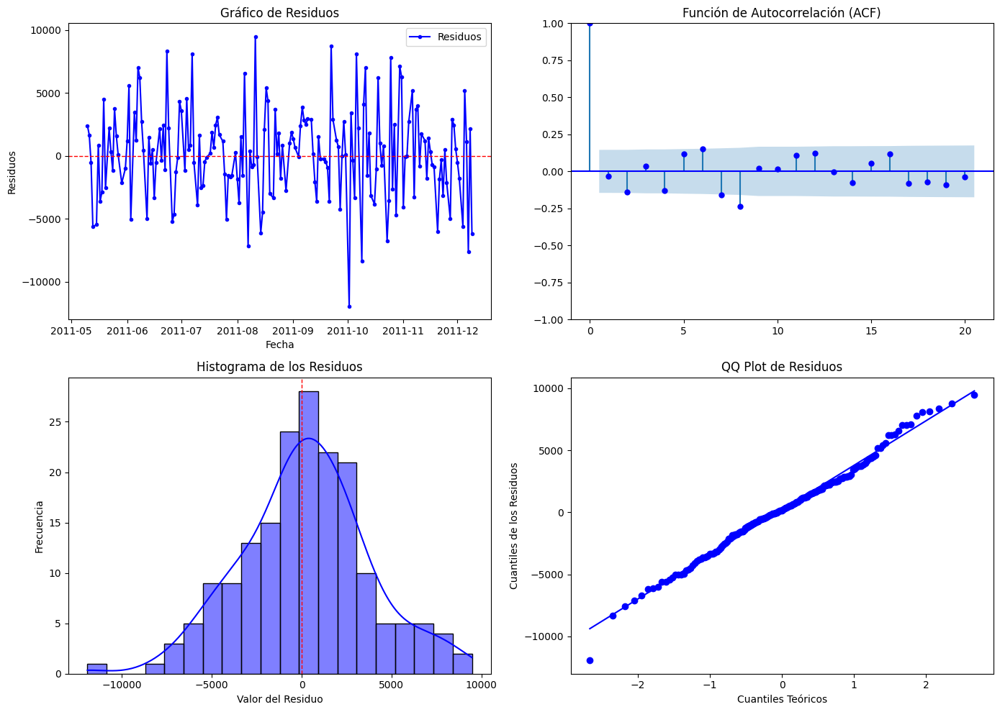
En el gráfico de Residuos (arriba a la izquierda) se observa que la variabilidad de los residuos parece bastante alta, con valores positivos y negativos distribuidos de forma dispersa, existen picos y caídas abruptas, lo que sugiere que el modelo no predice bien ciertos períodos.
La función de Autocorrelación (ACF) (arriba a la derecha) se observa que la mayoría de los puntos estan dentro de la banda azul de confianza, por tanto se podria inferir que existe independencia en los residuos, aunque esto se confirmaria con una prueba de Ljung-box, puesto que tambien se observan algunos puntos ligeramente fuera de la banda de confianza.
En el histograma de los residuos (abajo a la Izquierda) la distribución parece aproximadamente simétrica y es similar a una distribucion normal, aunque hay colas largas tanto en la parte negativa como positiva. La mayoría de los residuos están cerca de 0, lo que indica que en promedio el modelo no comete errores sistemáticos graves, sin embargo, la presencia de valores extremos (outliers) en ambos extremos sugiere que hay ciertos momentos donde el modelo falla en predecir correctamente.
Finalmente, en el QQ plot de residuos (abajo a la derecha) los puntos siguen en gran medida la línea diagonal, lo que indica que los residuos tienen una distribución aproximadamente normal. Sin embargo, en los extremos inferior y superior hay desviaciones significativas, lo que confirma la presencia de outliers
from statsmodels.stats.diagnostic import acorr_ljungbox
from sklearn.metrics import mean_absolute_error, mean_squared_error
# Prueba de Ljung-Box
ljung_box_result = acorr_ljungbox(residuos, lags=1)
# Obtener el valor p de la prueba Ljung-Box
ljung_box_p_value = ljung_box_result['lb_pvalue'].values[0]
# Cálculo de métricas de error
mae = mean_absolute_error(test['Quantity'], test_predictions)
mse = mean_squared_error(test['Quantity'], test_predictions)
rmse = np.sqrt(mse)
mape = np.mean(np.abs((test['Quantity'] - test_predictions) / test['Quantity'])) * 100
# Mostrar resultados
print(" Prueba de Ljung-Box (Resultados):")
print(ljung_box_result)
print(f" P-valor de la Prueba de Ljung-Box: {ljung_box_p_value:.4f}")
print("\n Métricas de Error:")
print(f" MAE (Error Absoluto Medio): {mae:.4f}")
print(f" MSE (Error Cuadrático Medio): {mse:.4f}")
print(f" RMSE (Raíz del Error Cuadrático Medio): {rmse:.4f}")
print(f" MAPE (Error Porcentual Absoluto Medio): {mape:.2f}%")
Prueba de Ljung-Box (Resultados):
lb_stat lb_pvalue
1 0.188958 0.663785
P-valor de la Prueba de Ljung-Box: 0.6638
Métricas de Error:
MAE (Error Absoluto Medio): 2739.4902
MSE (Error Cuadrático Medio): 12746347.3629
RMSE (Raíz del Error Cuadrático Medio): 3570.2027
MAPE (Error Porcentual Absoluto Medio): 31.93%
En la prueba de Ljung_box se obtuvo un p-valor de 0.6638, como este p-valor > 0.05, no se rechaza la hipótesis nula, esto significa que los residuos son aproximadamente independientes, es decir, no hay autocorrelación significativa, por tanto el modelo parece capturar bien la estructura temporal de los datos.
El MAE (Error Absoluto Medio) arrojo un resultado de 2739.4902, esto quiere decir que en promedio, el modelo comete un error de aproximadamente 2739 unidades en cada predicción.
En el MSE (Error Cuadrático Medio) seobtuvo un valor de 12746347.3629, el cual es un valor alto, lo que indica que existen errores grandes en algunas predicciones.
En el RMSE (Raíz del Error Cuadrático Medio) se obtuvo un valor de 3570.2027, esto indica que en promedio, el modelo tiene un error de 3570 unidades en sus predicciones.
Como el valor obtenido en el MAPE (Error Porcentual Absoluto Medio) fue de 31.93% el modelo se equivoca en un 31.93% en promedio con respecto a los valores reales.
Suavización exponencial de segundo orden
import pandas as pd
import numpy as np
import matplotlib.pyplot as plt
# Convertir 'InvoiceDate' en columna si está en el índice
if isinstance(data4.index, pd.DatetimeIndex):
data4.reset_index(inplace=True)
# Asegurar que 'InvoiceDate' sea de tipo datetime
data4['InvoiceDate'] = pd.to_datetime(data4['InvoiceDate'])
# Agrupar por día y sumar la cantidad de productos vendidos
data_daily = data4.groupby(data4['InvoiceDate'].dt.date)['Quantity'].sum().reset_index()
data_daily['InvoiceDate'] = pd.to_datetime(data_daily['InvoiceDate'])
data_daily.set_index('InvoiceDate', inplace=True)
# Aplicar rolling mean para suavizar la serie antes de modelar
data_daily['Quantity_rolling'] = data_daily['Quantity'].rolling(window=7, min_periods=1).mean()
# División en train y test (70% - 30%)
split_index = int(len(data_daily) * 0.7)
train, test = data_daily[:split_index], data_daily[split_index:]
# Calcular la desviación estándar en una ventana móvil para preservar variabilidad
rolling_std_train = train['Quantity'].rolling(window=8, min_periods=1).std()
rolling_std_test = test['Quantity'].rolling(window=8, min_periods=1).std()
# Parámetro de suavización
lambda_ = 0.6
# 📌 Suavización Exponencial de Segundo Orden
y1 = train['Quantity_rolling'].copy()
y2 = train['Quantity_rolling'].copy()
# Primera pasada de suavización exponencial (como primer orden)
y1.iloc[0] = train['Quantity_rolling'].iloc[0]
for t in range(1, len(train)):
y1.iloc[t] = lambda_ * train['Quantity_rolling'].iloc[t] + (1 - lambda_) * y1.iloc[t-1]
# Segunda pasada de suavización exponencial
y2.iloc[0] = y1.iloc[0]
for t in range(1, len(train)):
y2.iloc[t] = lambda_ * y1.iloc[t] + (1 - lambda_) * y2.iloc[t-1]
# Predicción en train
train_predictions = y2.copy()
# 📌 Predicciones en test usando la última observación suavizada
y1_test = test['Quantity_rolling'].copy()
y2_test = test['Quantity_rolling'].copy()
# Primera pasada de suavización en test
y1_test.iloc[0] = y1.iloc[-1]
for t in range(1, len(test)):
y1_test.iloc[t] = lambda_ * test['Quantity_rolling'].iloc[t] + (1 - lambda_) * y1_test.iloc[t-1]
# Segunda pasada de suavización en test
y2_test.iloc[0] = y1_test.iloc[0]
for t in range(1, len(test)):
y2_test.iloc[t] = lambda_ * y1_test.iloc[t] + (1 - lambda_) * y2_test.iloc[t-1]
test_predictions = y2_test.copy()
# Añadir variabilidad basada en la desviación estándar de test
np.random.seed(42)
noise_test = np.random.normal(loc=0, scale=rolling_std_test.mean(), size=len(test_predictions))
test_predictions += noise_test
# 📌 Predicción a futuro con 60 días
num_days_forecast = 60
future_dates = pd.date_range(start=test.index[-1], periods=num_days_forecast + 1, freq='D')[1:]
future_forecast = np.zeros(num_days_forecast)
# Continuar con la última observación suavizada
y1_future = y1.iloc[-1]
y2_future = y2.iloc[-1]
for t in range(num_days_forecast):
y1_future = lambda_ * y1_future + (1 - lambda_) * y1_future
y2_future = lambda_ * y1_future + (1 - lambda_) * y2_future
future_forecast[t] = y2_future
# Añadir variabilidad basada en la desviación estándar de train
noise_future = np.random.normal(loc=0, scale=rolling_std_train.mean(), size=len(future_forecast))
future_forecast += noise_future
# 📊 Graficar los resultados con predicción en test mejorada y predicción futura sin cambios
plt.figure(figsize=(12, 6))
# Datos de entrenamiento (Original) - 🔹 Azul
plt.plot(train.index, train['Quantity'], marker='o', linestyle='-', markersize=3, color='#1f77b4', label='Train (Original)')
# Datos de entrenamiento suavizados - 🔸 Naranja
plt.plot(train.index, train_predictions, linestyle='-', linewidth=2, color='#ff7f0e', label='Train (Suavizado con Rolling)')
# Datos de prueba (Original) - 🔺 Rojo
plt.plot(test.index, test['Quantity'], marker='o', linestyle='-', markersize=3, color='#d62728', label='Test (Original)')
# Predicción en Test - 🟩 Verde
plt.plot(test.index, test_predictions, linestyle='-', linewidth=2, color='#2ca02c', label='Predicción en Test')
# Predicción a Futuro - 🟪 Púrpura
plt.plot(future_dates, future_forecast, linestyle='-', linewidth=2, color='#9467bd', label='Predicción Futura')
# Configuración de la gráfica
plt.xlabel('Tiempo')
plt.ylabel('Cantidad de Productos Vendidos')
plt.title('Suavización Exponencial de Segundo Orden')
plt.legend()
plt.grid()
# Mostrar la gráfica
plt.show()
C:\Users\ronal\AppData\Local\Temp\ipykernel_31372\212659638.py:10: SettingWithCopyWarning:
A value is trying to be set on a copy of a slice from a DataFrame.
Try using .loc[row_indexer,col_indexer] = value instead
See the caveats in the documentation: https://pandas.pydata.org/pandas-docs/stable/user_guide/indexing.html#returning-a-view-versus-a-copy
data4['InvoiceDate'] = pd.to_datetime(data4['InvoiceDate'])
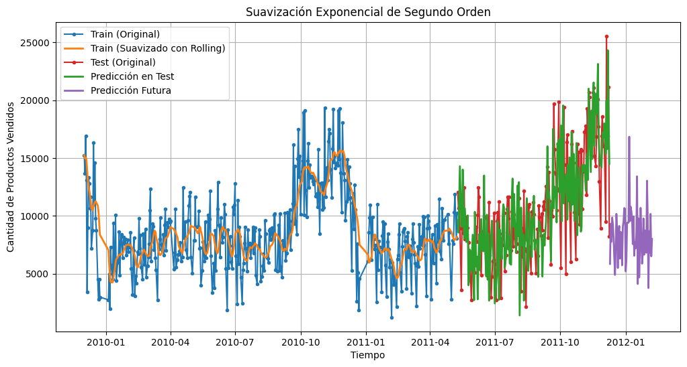
Al aplicar suavizaicon exponencial de segundo orden se puede observa que la línea naranja (suavización en train) sigue la tendencia general de los datos, eliminando parte del ruido sin perder demasiado detalle. La predicción en test (verde) intenta capturar la evolución de las ventas, aunque presenta cierto retraso en cambios abruptos. La predicción a futuro (morado) muestra valores más estables, pero con menor variabilidad en comparación con los datos originales, lo que indica que el modelo suaviza bien la tendencia, aunque podría subestimar fluctuaciones rápidas.
import numpy as np
import pandas as pd
import matplotlib.pyplot as plt
import seaborn as sns
import scipy.stats as stats
from statsmodels.graphics.tsaplots import plot_acf
# Calcular residuos
residuos = test['Quantity'] - test_predictions
# Crear figura con 2x2 subgráficos
fig, axes = plt.subplots(2, 2, figsize=(14, 10))
# Gráfico de los residuos
test.index = pd.to_datetime(test.index) # Asegurar que test.index sea datetime
axes[0, 0].plot(test.index, residuos, marker='o', linestyle='-', markersize=3, color='blue', label='Residuos')
axes[0, 0].axhline(y=0, color='red', linestyle='--', linewidth=1)
axes[0, 0].set_title("Gráfico de Residuos")
axes[0, 0].set_xlabel("Fecha")
axes[0, 0].set_ylabel("Residuos")
axes[0, 0].legend()
# Función de Autocorrelación (ACF)
plot_acf(residuos.dropna(), lags=20, ax=axes[0, 1], color='blue')
axes[0, 1].set_title("Función de Autocorrelación (ACF)")
# Histograma de los residuos
sns.histplot(residuos, kde=True, bins=20, color='blue', ax=axes[1, 0])
axes[1, 0].axvline(x=0, color='red', linestyle='--', linewidth=1)
axes[1, 0].set_title("Histograma de los Residuos")
axes[1, 0].set_xlabel("Valor del Residuo")
axes[1, 0].set_ylabel("Frecuencia")
# QQ Plot de los residuos
stats.probplot(residuos.dropna(), dist="norm", plot=axes[1, 1])
axes[1, 1].get_lines()[1].set_color('blue') # Ajustar color de la línea de referencia
axes[1, 1].set_title("QQ Plot de Residuos")
axes[1, 1].set_xlabel("Cuantiles Teóricos")
axes[1, 1].set_ylabel("Cuantiles de los Residuos")
plt.tight_layout()
plt.show()
c:\Users\ronal\miniconda3\envs\series_de_tiempo\lib\site-packages\seaborn\_oldcore.py:1119: FutureWarning: use_inf_as_na option is deprecated and will be removed in a future version. Convert inf values to NaN before operating instead.
with pd.option_context('mode.use_inf_as_na', True):
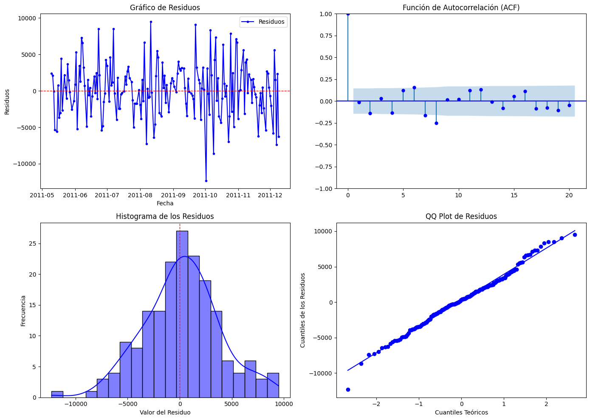
Los gráficos muestran el comportamiento de los residuos del modelo. El gráfico de residuos indica que no hay un patrón evidente, pero hay alta variabilidad en ciertos momentos. La función de autocorrelación (ACF) sugiere que los residuos no tienen una autocorrelación significativa. El histograma muestra una distribución aproximadamente normal, aunque con colas largas que indican valores extremos. Finalmente, el QQ plot confirma que los residuos siguen en gran parte una distribución normal, sin embargo, al igual que el modelo anterior tambien tiene algunas desviaciones en los extremos, lo que indica la presencia de outliers.
from statsmodels.stats.diagnostic import acorr_ljungbox
from sklearn.metrics import mean_absolute_error, mean_squared_error
# Prueba de Ljung-Box
ljung_box_result = acorr_ljungbox(residuos, lags=1)
# Obtener el valor p de la prueba Ljung-Box
ljung_box_p_value = ljung_box_result['lb_pvalue'].values[0]
# Cálculo de métricas de error
mae = mean_absolute_error(test['Quantity'], test_predictions)
mse = mean_squared_error(test['Quantity'], test_predictions)
rmse = np.sqrt(mse)
mape = np.mean(np.abs((test['Quantity'] - test_predictions) / test['Quantity'])) * 100
# Mostrar resultados
print(" Prueba de Ljung-Box (Resultados):")
print(ljung_box_result)
print(f" P-valor de la Prueba de Ljung-Box: {ljung_box_p_value:.4f}")
print("\n Métricas de Error:")
print(f" MAE (Error Absoluto Medio): {mae:.4f}")
print(f" MSE (Error Cuadrático Medio): {mse:.4f}")
print(f" RMSE (Raíz del Error Cuadrático Medio): {rmse:.4f}")
print(f" MAPE (Error Porcentual Absoluto Medio): {mape:.2f}%")
Prueba de Ljung-Box (Resultados):
lb_stat lb_pvalue
1 0.038844 0.843758
P-valor de la Prueba de Ljung-Box: 0.8438
Métricas de Error:
MAE (Error Absoluto Medio): 2828.3938
MSE (Error Cuadrático Medio): 13458390.8473
RMSE (Raíz del Error Cuadrático Medio): 3668.5680
MAPE (Error Porcentual Absoluto Medio): 33.00%
El p-valor de la prueba de Ljung-Box (0.8438) es alto, lo que confirma que los residuos no tienen autocorrelación significativa, ademas el modelo tiene un error absoluto medio (MAE) de 2828 unidades, lo que representa un error moderado en cada predicción. El error cuadrático medio (MSE) y la raíz del error cuadrático medio (RMSE) siguen siendo altos (13458390.8473 y 3668.5680 respectivamente), lo que sugiere que hay algunas predicciones con errores grandes. El MAPE de 33% indica que el modelo tiene una desviación del 33% en promedio con respecto a los valores reales.
Suavización exponencial de Holt-winters con un parámetro
import pandas as pd
import numpy as np
import matplotlib.pyplot as plt
from statsmodels.tsa.holtwinters import ExponentialSmoothing
# Convertir 'InvoiceDate' en columna si está en el índice
if isinstance(data4.index, pd.DatetimeIndex):
data4.reset_index(inplace=True)
# Asegurar que 'InvoiceDate' sea de tipo datetime
data4['InvoiceDate'] = pd.to_datetime(data4['InvoiceDate'])
# Agrupar por día y sumar la cantidad de productos vendidos
data_daily = data4.groupby(data4['InvoiceDate'].dt.date)['Quantity'].sum().reset_index()
data_daily['InvoiceDate'] = pd.to_datetime(data_daily['InvoiceDate'])
data_daily.set_index('InvoiceDate', inplace=True)
# Aplicar rolling mean para suavizar la serie antes de modelar
data_daily['Quantity_rolling'] = data_daily['Quantity'].rolling(window=7, min_periods=1).mean()
# División en train y test (70% - 30%)
split_index = int(len(data_daily) * 0.8)
train, test = data_daily[:split_index], data_daily[split_index:]
# Calcular la desviación estándar en una ventana móvil para preservar variabilidad
rolling_std_train = train['Quantity'].rolling(window=7, min_periods=1).std()
rolling_std_test = test['Quantity'].rolling(window=7, min_periods=1).std()
# Modelo Holt-Winters con tendencia amortiguada sobre la serie suavizada
holt_winters_model_damped = ExponentialSmoothing(
train['Quantity_rolling'], trend="add", damped_trend=True, seasonal=None, initialization_method="estimated"
).fit()
# Predicciones en test con variabilidad
test_predictions_damped = holt_winters_model_damped.forecast(len(test))
# Añadir variabilidad basada en la desviación estándar de test
np.random.seed(42) # Para reproducibilidad
noise_test = np.random.normal(loc=0, scale=rolling_std_test.mean(), size=len(test_predictions_damped))
test_predictions_damped += noise_test
# Predicción a futuro con 25 días
num_days_forecast = 25
future_dates = pd.date_range(start=test.index[-1], periods=num_days_forecast + 1, freq='D')[1:]
future_forecast_damped = holt_winters_model_damped.forecast(num_days_forecast)
# Añadir variabilidad basada en la desviación estándar de train
np.random.seed(42) # Para reproducibilidad
noise_future = np.random.normal(loc=0, scale=rolling_std_train.mean(), size=len(future_forecast_damped))
future_forecast_damped += noise_future
# 📊 Graficar los resultados con predicción en test y predicción futura
plt.figure(figsize=(12, 6))
# Datos de entrenamiento (Original) - 🔹 Azul
plt.plot(train.index, train['Quantity'], marker='o', linestyle='-', markersize=3, color='#1f77b4', label='Train (Original)')
# Datos de prueba (Original) - 🔺 Rojo
plt.plot(test.index, test['Quantity'], marker='o', linestyle='-', markersize=3, color='#d62728', label='Test (Original)')
# Predicción en Test - 🟩 Verde
plt.plot(test.index, test_predictions_damped, linestyle='-', linewidth=2, color='#2ca02c', label='Predicción en Test')
# Predicción a Futuro - 🟪 Púrpura
plt.plot(future_dates, future_forecast_damped, linestyle='-', linewidth=2, color='#9467bd', label='Predicción Futura')
# Configuración de la gráfica
plt.xlabel('Fecha')
plt.ylabel('Cantidad de Productos Vendidos')
plt.title('Suavización Exponencial de Holt-Winters (Un Parámetro)')
plt.legend()
plt.grid()
# Mostrar la gráfica
plt.show()
C:\Users\ronal\AppData\Local\Temp\ipykernel_31372\1487748200.py:11: SettingWithCopyWarning:
A value is trying to be set on a copy of a slice from a DataFrame.
Try using .loc[row_indexer,col_indexer] = value instead
See the caveats in the documentation: https://pandas.pydata.org/pandas-docs/stable/user_guide/indexing.html#returning-a-view-versus-a-copy
data4['InvoiceDate'] = pd.to_datetime(data4['InvoiceDate'])
c:\Users\ronal\miniconda3\envs\series_de_tiempo\lib\site-packages\statsmodels\tsa\base\tsa_model.py:473: ValueWarning: A date index has been provided, but it has no associated frequency information and so will be ignored when e.g. forecasting.
self._init_dates(dates, freq)
c:\Users\ronal\miniconda3\envs\series_de_tiempo\lib\site-packages\statsmodels\tsa\holtwinters\model.py:918: ConvergenceWarning: Optimization failed to converge. Check mle_retvals.
warnings.warn(
c:\Users\ronal\miniconda3\envs\series_de_tiempo\lib\site-packages\statsmodels\tsa\base\tsa_model.py:837: ValueWarning: No supported index is available. Prediction results will be given with an integer index beginning at `start`.
return get_prediction_index(
c:\Users\ronal\miniconda3\envs\series_de_tiempo\lib\site-packages\statsmodels\tsa\base\tsa_model.py:837: FutureWarning: No supported index is available. In the next version, calling this method in a model without a supported index will result in an exception.
return get_prediction_index(
c:\Users\ronal\miniconda3\envs\series_de_tiempo\lib\site-packages\statsmodels\tsa\base\tsa_model.py:837: ValueWarning: No supported index is available. Prediction results will be given with an integer index beginning at `start`.
return get_prediction_index(
c:\Users\ronal\miniconda3\envs\series_de_tiempo\lib\site-packages\statsmodels\tsa\base\tsa_model.py:837: FutureWarning: No supported index is available. In the next version, calling this method in a model without a supported index will result in an exception.
return get_prediction_index(
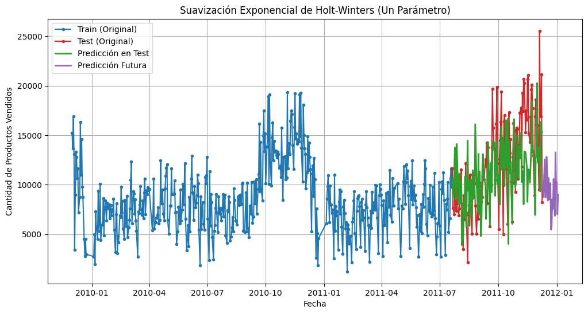
import matplotlib.pyplot as plt
import seaborn as sns
import numpy as np
import pandas as pd
from statsmodels.graphics.tsaplots import plot_acf
from statsmodels.stats.diagnostic import acorr_ljungbox
from sklearn.metrics import mean_squared_error, mean_absolute_error
# Ajustar la longitud de las predicciones si es necesario
test_predictions_damped = test_predictions_damped[:len(test)]
# Calcular los residuos
residuos_holt_winters = test['Quantity'].values - test_predictions_damped
# Verificar dimensiones antes de graficar
print(f"Dimensión de test.index: {len(test.index)}")
print(f"Dimensión de residuos_holt_winters: {len(residuos_holt_winters)}")
# Configurar el tamaño del gráfico con 4 subgráficos
fig, axes = plt.subplots(2, 2, figsize=(14, 10))
# 1. Gráfico de Residuos
axes[0, 0].plot(test.index, residuos_holt_winters, marker='o', linestyle='-', color='blue', label="Residuos")
axes[0, 0].axhline(y=0, color='darkred', linestyle='dashed', linewidth=1.5)
axes[0, 0].set_title("Gráfico de Residuos")
axes[0, 0].set_xlabel("Fecha")
axes[0, 0].set_ylabel("Residuos")
axes[0, 0].legend()
# 2. Función de Autocorrelación (ACF)
plot_acf(residuos_holt_winters, lags=30, ax=axes[0, 1], color='blue')
axes[0, 1].set_title("Función de Autocorrelación (ACF)")
# 3. Histograma de los Residuos con KDE
sns.histplot(residuos_holt_winters, bins=30, kde=True, ax=axes[1, 0], color='darkblue')
axes[1, 0].axvline(x=0, color='darkred', linestyle='dashed', linewidth=1.5)
axes[1, 0].set_title("Histograma de los Residuos")
axes[1, 0].set_xlabel("Valor del Residuo")
axes[1, 0].set_ylabel("Frecuencia")
# 4. Gráfico de Dispersión: Predicciones vs Residuos
axes[1, 1].scatter(test_predictions_damped, residuos_holt_winters, color='purple', alpha=0.7)
axes[1, 1].axhline(y=0, color='darkred', linestyle='dashed', linewidth=1.5)
axes[1, 1].set_title("Gráfico de Dispersión: Predicciones vs Residuos")
axes[1, 1].set_xlabel("Predicciones")
axes[1, 1].set_ylabel("Residuos")
# Ajustar diseño y mostrar
plt.tight_layout()
plt.show()
# Prueba de Ljung-Box
ljung_box_result = acorr_ljungbox(residuos_holt_winters, lags=[10], return_df=True)
ljung_box_pvalor = ljung_box_result["lb_pvalue"].values[0]
# Interpretación de la prueba de Ljung-Box
if ljung_box_pvalor < 0.05:
print(f"ljung_box_pvalor (p = {ljung_box_pvalor:.4f})")
else:
print(f" ljung_box_pvalor (p = {ljung_box_pvalor:.4f})")
# Calcular métricas
mse = mean_squared_error(test['Quantity'], test_predictions_damped) # Error cuadrático medio
rmse = np.sqrt(mse) # Raíz del error cuadrático medio
mae = mean_absolute_error(test['Quantity'], test_predictions_damped) # Error absoluto medio
# Calcular MAPE
mape = np.mean(np.abs((test['Quantity'] - test_predictions_damped) / test['Quantity'])) * 100 # Error porcentual absoluto medio
# Mostrar métricas
print(f"MSE (Error Cuadrático Medio): {mse:.4f}")
print(f"RMSE (Raíz del Error Cuadrático Medio): {rmse:.4f}")
print(f"MAE (Error Absoluto Medio): {mae:.4f}")
print(f"MAPE (Error Porcentual Absoluto Medio): {mape:.4f}%")
Dimensión de test.index: 121
Dimensión de residuos_holt_winters: 121
c:\Users\ronal\miniconda3\envs\series_de_tiempo\lib\site-packages\seaborn\_oldcore.py:1119: FutureWarning: use_inf_as_na option is deprecated and will be removed in a future version. Convert inf values to NaN before operating instead.
with pd.option_context('mode.use_inf_as_na', True):
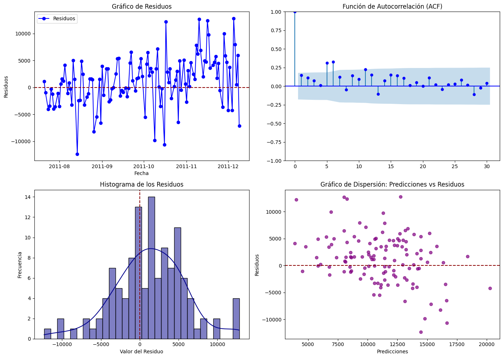
ljung_box_pvalor (p = 0.0000)
MSE (Error Cuadrático Medio): 22442393.2294
RMSE (Raíz del Error Cuadrático Medio): 4737.3403
MAE (Error Absoluto Medio): 3673.6108
MAPE (Error Porcentual Absoluto Medio): nan%
C:\Users\ronal\AppData\Local\Temp\ipykernel_31372\3694538190.py:68: RuntimeWarning: '<' not supported between instances of 'int' and 'Timestamp', sort order is undefined for incomparable objects.
mape = np.mean(np.abs((test['Quantity'] - test_predictions_damped) / test['Quantity'])) * 100 # Error porcentual absoluto medio
LSTM
import pandas as pd
import numpy as np
import matplotlib.pyplot as plt
from sklearn.preprocessing import MinMaxScaler
from sklearn.metrics import mean_absolute_error, mean_squared_error
from statsmodels.stats.diagnostic import acorr_ljungbox
import tensorflow as tf
from tensorflow.keras.models import Sequential
from tensorflow.keras.layers import LSTM, Dense, Dropout
from tensorflow.keras.optimizers import Adam
# 📌 Cargar y Preprocesar Datos
if isinstance(data4.index, pd.DatetimeIndex):
data4.reset_index(inplace=True)
data4['InvoiceDate'] = pd.to_datetime(data4['InvoiceDate'])
data_daily = data4.groupby(data4['InvoiceDate'].dt.date)['Quantity'].sum().reset_index()
data_daily['InvoiceDate'] = pd.to_datetime(data_daily['InvoiceDate'])
data_daily.set_index('InvoiceDate', inplace=True)
# 📌 Normalización MinMax
scaler = MinMaxScaler()
data_daily['Quantity_scaled'] = scaler.fit_transform(data_daily[['Quantity']])
# 📌 Diferenciación para hacer la serie estacionaria
data_daily['Quantity_diff'] = data_daily['Quantity_scaled'].diff().fillna(0)
# 📌 División en train y test
split_index = int(len(data_daily) * 0.8)
train, test = data_daily[:split_index], data_daily[split_index:]
# 📌 Función para crear secuencias de datos
def create_sequences(data, seq_length):
X, y = [], []
for i in range(len(data) - seq_length):
X.append(data[i:i + seq_length])
y.append(data[i + seq_length])
return np.array(X), np.array(y)
# 📌 Parámetros del modelo
seq_length = 90 # 🔹 Ventana de tiempo extendida
n_futuro = 80 # 🔹 Días de predicción a futuro
# 📌 Crear secuencias para LSTM
X_train, y_train = create_sequences(train['Quantity_diff'].values, seq_length)
X_test, y_test = create_sequences(test['Quantity_diff'].values, seq_length)
# 📌 Redimensionar para LSTM
X_train = X_train.reshape((X_train.shape[0], X_train.shape[1], 1))
X_test = X_test.reshape((X_test.shape[0], X_test.shape[1], 1))
# 📌 Definir el modelo LSTM mejorado
model = Sequential([
LSTM(100, return_sequences=True, input_shape=(seq_length, 1)),
Dropout(0.2),
LSTM(100, return_sequences=True),
Dropout(0.2),
LSTM(100),
Dense(50, activation='relu'),
Dense(1)
])
# 📌 Compilar el modelo con un learning rate más bajo
model.compile(optimizer=Adam(learning_rate=0.0003), loss='mse')
# 📌 Entrenar el modelo
history = model.fit(X_train, y_train, epochs=100, batch_size=16, validation_data=(X_test, y_test), verbose=1)
# 📌 Predicción en test
y_pred_scaled = model.predict(X_test)
# 📌 Desescalar predicciones
y_pred = scaler.inverse_transform(y_pred_scaled)
y_test_original = scaler.inverse_transform(y_test.reshape(-1, 1))
# 📌 Cálculo de métricas de error
mae = mean_absolute_error(y_test_original, y_pred)
mse = mean_squared_error(y_test_original, y_pred)
rmse = np.sqrt(mse)
mape = np.mean(np.abs((y_test_original - y_pred) / y_test_original)) * 100
# 📌 Prueba de Ljung-Box
residuals = y_test_original - y_pred
ljung_box_test = acorr_ljungbox(residuals.flatten(), lags=[10], return_df=True)
p_valor_ljung_box = ljung_box_test['lb_pvalue'].values[0]
# 📌 Predicción a futuro
ultimos_dias = test['Quantity_diff'].values[-seq_length:].reshape(1, seq_length, 1)
predicciones_futuras = []
for _ in range(n_futuro):
prediccion = model.predict(ultimos_dias)
predicciones_futuras.append(prediccion[0, 0])
ultimos_dias = np.roll(ultimos_dias, shift=-1, axis=1)
ultimos_dias[0, -1, 0] = prediccion[0, 0]
# 📌 Ajustar la predicción acumulando la serie diferenciada
predicciones_futuras_acumuladas = []
valor_inicial = test['Quantity_scaled'].values[-1]
for prediccion in predicciones_futuras:
valor_inicial += prediccion
predicciones_futuras_acumuladas.append(valor_inicial)
# 📌 Desescalar a valores originales
predicciones_futuras_acumuladas = scaler.inverse_transform(np.array(predicciones_futuras_acumuladas).reshape(-1, 1))
# 📌 Crear fechas futuras
fechas_futuras = pd.date_range(start=test.index[-1] + pd.Timedelta(days=1), periods=n_futuro, freq='D')
# 📊 Graficar los resultados con entrenamiento, prueba y predicción a futuro
plt.figure(figsize=(12, 6))
# Datos de entrenamiento
plt.plot(train.index, scaler.inverse_transform(train['Quantity_scaled'].values.reshape(-1, 1)),
linestyle='-', color='blue', label='Train (Datos de Entrenamiento)')
# Datos de prueba
plt.plot(test.index, scaler.inverse_transform(test['Quantity_scaled'].values.reshape(-1, 1)),
marker='o', linestyle='-', color='red', markersize=3, label='Test (Datos de Prueba)')
# Predicciones futuras acumuladas
plt.plot(fechas_futuras, predicciones_futuras_acumuladas, linestyle='-', linewidth=2, color='green', label=f'Predicción a Futuro ({n_futuro} días)')
# Configuración de la gráfica
plt.xlabel('Fecha')
plt.ylabel('Cantidad de Productos Vendidos')
plt.title(f'Predicción de Ventas con LSTM - {n_futuro} Días de Predicción Futura')
plt.legend()
plt.grid()
# Mostrar la gráfica
plt.show()
# 📌 Mostrar métricas finales
print(f"🔹 MAE (Error Absoluto Medio): {mae:.4f}")
print(f"🔹 MSE (Error Cuadrático Medio): {mse:.4f}")
print(f"🔹 RMSE (Raíz del Error Cuadrático Medio): {rmse:.4f}")
print(f"🔹 MAPE (Error Porcentual Absoluto Medio): {mape:.2f}%")
print(f"🔹 P-valor de la Prueba de Ljung-Box: {p_valor_ljung_box:.4f}")
C:\Users\ronal\AppData\Local\Temp\ipykernel_31372\4206316720.py:16: SettingWithCopyWarning:
A value is trying to be set on a copy of a slice from a DataFrame.
Try using .loc[row_indexer,col_indexer] = value instead
See the caveats in the documentation: https://pandas.pydata.org/pandas-docs/stable/user_guide/indexing.html#returning-a-view-versus-a-copy
data4['InvoiceDate'] = pd.to_datetime(data4['InvoiceDate'])
Epoch 1/100
25/25 [==============================] - 11s 108ms/step - loss: 0.0167 - val_loss: 0.0481
Epoch 2/100
25/25 [==============================] - 1s 50ms/step - loss: 0.0165 - val_loss: 0.0480
Epoch 3/100
25/25 [==============================] - 1s 48ms/step - loss: 0.0165 - val_loss: 0.0480
Epoch 4/100
25/25 [==============================] - 1s 37ms/step - loss: 0.0165 - val_loss: 0.0479
Epoch 5/100
25/25 [==============================] - 1s 35ms/step - loss: 0.0165 - val_loss: 0.0478
Epoch 6/100
25/25 [==============================] - 1s 34ms/step - loss: 0.0164 - val_loss: 0.0478
Epoch 7/100
25/25 [==============================] - 1s 37ms/step - loss: 0.0164 - val_loss: 0.0477
Epoch 8/100
25/25 [==============================] - 1s 36ms/step - loss: 0.0163 - val_loss: 0.0473
Epoch 9/100
25/25 [==============================] - 1s 36ms/step - loss: 0.0162 - val_loss: 0.0467
Epoch 10/100
25/25 [==============================] - 1s 33ms/step - loss: 0.0160 - val_loss: 0.0458
Epoch 11/100
25/25 [==============================] - 1s 37ms/step - loss: 0.0160 - val_loss: 0.0449
Epoch 12/100
25/25 [==============================] - 1s 32ms/step - loss: 0.0150 - val_loss: 0.0423
Epoch 13/100
25/25 [==============================] - 1s 35ms/step - loss: 0.0141 - val_loss: 0.0375
Epoch 14/100
25/25 [==============================] - 1s 32ms/step - loss: 0.0133 - val_loss: 0.0351
Epoch 15/100
25/25 [==============================] - 1s 32ms/step - loss: 0.0123 - val_loss: 0.0327
Epoch 16/100
25/25 [==============================] - 1s 32ms/step - loss: 0.0123 - val_loss: 0.0332
Epoch 17/100
25/25 [==============================] - 1s 34ms/step - loss: 0.0119 - val_loss: 0.0320
Epoch 18/100
25/25 [==============================] - 1s 38ms/step - loss: 0.0117 - val_loss: 0.0326
Epoch 19/100
25/25 [==============================] - 1s 36ms/step - loss: 0.0116 - val_loss: 0.0317
Epoch 20/100
25/25 [==============================] - 1s 34ms/step - loss: 0.0113 - val_loss: 0.0314
Epoch 21/100
25/25 [==============================] - 1s 33ms/step - loss: 0.0112 - val_loss: 0.0311
Epoch 22/100
25/25 [==============================] - 1s 31ms/step - loss: 0.0110 - val_loss: 0.0314
Epoch 23/100
25/25 [==============================] - 1s 33ms/step - loss: 0.0111 - val_loss: 0.0319
Epoch 24/100
25/25 [==============================] - 1s 35ms/step - loss: 0.0108 - val_loss: 0.0317
Epoch 25/100
25/25 [==============================] - 1s 33ms/step - loss: 0.0116 - val_loss: 0.0336
Epoch 26/100
25/25 [==============================] - 1s 32ms/step - loss: 0.0112 - val_loss: 0.0319
Epoch 27/100
25/25 [==============================] - 1s 32ms/step - loss: 0.0113 - val_loss: 0.0321
Epoch 28/100
25/25 [==============================] - 1s 33ms/step - loss: 0.0109 - val_loss: 0.0315
Epoch 29/100
25/25 [==============================] - 1s 33ms/step - loss: 0.0111 - val_loss: 0.0316
Epoch 30/100
25/25 [==============================] - 1s 31ms/step - loss: 0.0110 - val_loss: 0.0318
Epoch 31/100
25/25 [==============================] - 1s 32ms/step - loss: 0.0110 - val_loss: 0.0324
Epoch 32/100
25/25 [==============================] - 1s 32ms/step - loss: 0.0107 - val_loss: 0.0320
Epoch 33/100
25/25 [==============================] - 1s 34ms/step - loss: 0.0111 - val_loss: 0.0315
Epoch 34/100
25/25 [==============================] - 1s 32ms/step - loss: 0.0110 - val_loss: 0.0315
Epoch 35/100
25/25 [==============================] - 1s 33ms/step - loss: 0.0109 - val_loss: 0.0324
Epoch 36/100
25/25 [==============================] - 1s 32ms/step - loss: 0.0109 - val_loss: 0.0319
Epoch 37/100
25/25 [==============================] - 1s 31ms/step - loss: 0.0111 - val_loss: 0.0324
Epoch 38/100
25/25 [==============================] - 1s 34ms/step - loss: 0.0112 - val_loss: 0.0328
Epoch 39/100
25/25 [==============================] - 1s 33ms/step - loss: 0.0110 - val_loss: 0.0324
Epoch 40/100
25/25 [==============================] - 1s 39ms/step - loss: 0.0111 - val_loss: 0.0324
Epoch 41/100
25/25 [==============================] - 1s 35ms/step - loss: 0.0109 - val_loss: 0.0328
Epoch 42/100
25/25 [==============================] - 1s 33ms/step - loss: 0.0111 - val_loss: 0.0313
Epoch 43/100
25/25 [==============================] - 1s 33ms/step - loss: 0.0113 - val_loss: 0.0316
Epoch 44/100
25/25 [==============================] - 1s 32ms/step - loss: 0.0109 - val_loss: 0.0319
Epoch 45/100
25/25 [==============================] - 1s 34ms/step - loss: 0.0111 - val_loss: 0.0316
Epoch 46/100
25/25 [==============================] - 1s 31ms/step - loss: 0.0108 - val_loss: 0.0318
Epoch 47/100
25/25 [==============================] - 1s 32ms/step - loss: 0.0109 - val_loss: 0.0316
Epoch 48/100
25/25 [==============================] - 1s 32ms/step - loss: 0.0108 - val_loss: 0.0320
Epoch 49/100
25/25 [==============================] - 1s 32ms/step - loss: 0.0109 - val_loss: 0.0319
Epoch 50/100
25/25 [==============================] - 1s 32ms/step - loss: 0.0108 - val_loss: 0.0315
Epoch 51/100
25/25 [==============================] - 1s 33ms/step - loss: 0.0105 - val_loss: 0.0312
Epoch 52/100
25/25 [==============================] - 1s 31ms/step - loss: 0.0109 - val_loss: 0.0321
Epoch 53/100
25/25 [==============================] - 1s 34ms/step - loss: 0.0107 - val_loss: 0.0321
Epoch 54/100
25/25 [==============================] - 1s 33ms/step - loss: 0.0108 - val_loss: 0.0319
Epoch 55/100
25/25 [==============================] - 1s 33ms/step - loss: 0.0107 - val_loss: 0.0322
Epoch 56/100
25/25 [==============================] - 1s 33ms/step - loss: 0.0107 - val_loss: 0.0319
Epoch 57/100
25/25 [==============================] - 1s 32ms/step - loss: 0.0107 - val_loss: 0.0311
Epoch 58/100
25/25 [==============================] - 1s 33ms/step - loss: 0.0107 - val_loss: 0.0320
Epoch 59/100
25/25 [==============================] - 1s 33ms/step - loss: 0.0106 - val_loss: 0.0316
Epoch 60/100
25/25 [==============================] - 1s 33ms/step - loss: 0.0106 - val_loss: 0.0321
Epoch 61/100
25/25 [==============================] - 1s 35ms/step - loss: 0.0107 - val_loss: 0.0309
Epoch 62/100
25/25 [==============================] - 1s 33ms/step - loss: 0.0105 - val_loss: 0.0320
Epoch 63/100
25/25 [==============================] - 1s 33ms/step - loss: 0.0109 - val_loss: 0.0324
Epoch 64/100
25/25 [==============================] - 1s 35ms/step - loss: 0.0108 - val_loss: 0.0324
Epoch 65/100
25/25 [==============================] - 1s 31ms/step - loss: 0.0107 - val_loss: 0.0315
Epoch 66/100
25/25 [==============================] - 1s 34ms/step - loss: 0.0105 - val_loss: 0.0321
Epoch 67/100
25/25 [==============================] - 1s 33ms/step - loss: 0.0107 - val_loss: 0.0313
Epoch 68/100
25/25 [==============================] - 1s 32ms/step - loss: 0.0105 - val_loss: 0.0327
Epoch 69/100
25/25 [==============================] - 1s 32ms/step - loss: 0.0105 - val_loss: 0.0317
Epoch 70/100
25/25 [==============================] - 1s 32ms/step - loss: 0.0106 - val_loss: 0.0323
Epoch 71/100
25/25 [==============================] - 1s 33ms/step - loss: 0.0107 - val_loss: 0.0327
Epoch 72/100
25/25 [==============================] - 1s 32ms/step - loss: 0.0108 - val_loss: 0.0333
Epoch 73/100
25/25 [==============================] - 1s 33ms/step - loss: 0.0106 - val_loss: 0.0323
Epoch 74/100
25/25 [==============================] - 1s 33ms/step - loss: 0.0105 - val_loss: 0.0330
Epoch 75/100
25/25 [==============================] - 1s 32ms/step - loss: 0.0102 - val_loss: 0.0319
Epoch 76/100
25/25 [==============================] - 1s 34ms/step - loss: 0.0103 - val_loss: 0.0319
Epoch 77/100
25/25 [==============================] - 1s 33ms/step - loss: 0.0103 - val_loss: 0.0331
Epoch 78/100
25/25 [==============================] - 1s 32ms/step - loss: 0.0102 - val_loss: 0.0333
Epoch 79/100
25/25 [==============================] - 1s 32ms/step - loss: 0.0103 - val_loss: 0.0323
Epoch 80/100
25/25 [==============================] - 1s 33ms/step - loss: 0.0103 - val_loss: 0.0331
Epoch 81/100
25/25 [==============================] - 1s 34ms/step - loss: 0.0103 - val_loss: 0.0327
Epoch 82/100
25/25 [==============================] - 1s 32ms/step - loss: 0.0099 - val_loss: 0.0328
Epoch 83/100
25/25 [==============================] - 1s 34ms/step - loss: 0.0101 - val_loss: 0.0343
Epoch 84/100
25/25 [==============================] - 1s 33ms/step - loss: 0.0101 - val_loss: 0.0322
Epoch 85/100
25/25 [==============================] - 1s 32ms/step - loss: 0.0101 - val_loss: 0.0345
Epoch 86/100
25/25 [==============================] - 1s 32ms/step - loss: 0.0099 - val_loss: 0.0311
Epoch 87/100
25/25 [==============================] - 1s 33ms/step - loss: 0.0099 - val_loss: 0.0357
Epoch 88/100
25/25 [==============================] - 1s 33ms/step - loss: 0.0099 - val_loss: 0.0332
Epoch 89/100
25/25 [==============================] - 1s 32ms/step - loss: 0.0096 - val_loss: 0.0321
Epoch 90/100
25/25 [==============================] - 1s 33ms/step - loss: 0.0097 - val_loss: 0.0396
Epoch 91/100
25/25 [==============================] - 1s 33ms/step - loss: 0.0096 - val_loss: 0.0325
Epoch 92/100
25/25 [==============================] - 1s 34ms/step - loss: 0.0096 - val_loss: 0.0385
Epoch 93/100
25/25 [==============================] - 1s 33ms/step - loss: 0.0098 - val_loss: 0.0367
Epoch 94/100
25/25 [==============================] - 1s 32ms/step - loss: 0.0096 - val_loss: 0.0363
Epoch 95/100
25/25 [==============================] - 1s 31ms/step - loss: 0.0096 - val_loss: 0.0415
Epoch 96/100
25/25 [==============================] - 1s 34ms/step - loss: 0.0096 - val_loss: 0.0333
Epoch 97/100
25/25 [==============================] - 1s 33ms/step - loss: 0.0096 - val_loss: 0.0374
Epoch 98/100
25/25 [==============================] - 1s 32ms/step - loss: 0.0092 - val_loss: 0.0395
Epoch 99/100
25/25 [==============================] - 1s 33ms/step - loss: 0.0096 - val_loss: 0.0326
Epoch 100/100
25/25 [==============================] - 1s 32ms/step - loss: 0.0093 - val_loss: 0.0405
1/1 [==============================] - 1s 914ms/step
1/1 [==============================] - 0s 33ms/step
1/1 [==============================] - 0s 38ms/step
1/1 [==============================] - 0s 35ms/step
1/1 [==============================] - 0s 34ms/step
1/1 [==============================] - 0s 35ms/step
1/1 [==============================] - 0s 34ms/step
1/1 [==============================] - 0s 37ms/step
1/1 [==============================] - 0s 39ms/step
1/1 [==============================] - 0s 39ms/step
1/1 [==============================] - 0s 46ms/step
1/1 [==============================] - 0s 43ms/step
1/1 [==============================] - 0s 38ms/step
1/1 [==============================] - 0s 34ms/step
1/1 [==============================] - 0s 39ms/step
1/1 [==============================] - 0s 41ms/step
1/1 [==============================] - 0s 36ms/step
1/1 [==============================] - 0s 36ms/step
1/1 [==============================] - 0s 36ms/step
1/1 [==============================] - 0s 41ms/step
1/1 [==============================] - 0s 40ms/step
1/1 [==============================] - 0s 35ms/step
1/1 [==============================] - 0s 35ms/step
1/1 [==============================] - 0s 33ms/step
1/1 [==============================] - 0s 45ms/step
1/1 [==============================] - 0s 34ms/step
1/1 [==============================] - 0s 36ms/step
1/1 [==============================] - 0s 38ms/step
1/1 [==============================] - 0s 34ms/step
1/1 [==============================] - 0s 37ms/step
1/1 [==============================] - 0s 35ms/step
1/1 [==============================] - 0s 35ms/step
1/1 [==============================] - 0s 35ms/step
1/1 [==============================] - 0s 34ms/step
1/1 [==============================] - 0s 33ms/step
1/1 [==============================] - 0s 37ms/step
1/1 [==============================] - 0s 35ms/step
1/1 [==============================] - 0s 40ms/step
1/1 [==============================] - 0s 34ms/step
1/1 [==============================] - 0s 34ms/step
1/1 [==============================] - 0s 37ms/step
1/1 [==============================] - 0s 38ms/step
1/1 [==============================] - 0s 34ms/step
1/1 [==============================] - 0s 35ms/step
1/1 [==============================] - 0s 36ms/step
1/1 [==============================] - 0s 38ms/step
1/1 [==============================] - 0s 43ms/step
1/1 [==============================] - 0s 38ms/step
1/1 [==============================] - 0s 36ms/step
1/1 [==============================] - 0s 44ms/step
1/1 [==============================] - 0s 40ms/step
1/1 [==============================] - 0s 35ms/step
1/1 [==============================] - 0s 41ms/step
1/1 [==============================] - 0s 39ms/step
1/1 [==============================] - 0s 38ms/step
1/1 [==============================] - 0s 35ms/step
1/1 [==============================] - 0s 35ms/step
1/1 [==============================] - 0s 43ms/step
1/1 [==============================] - 0s 48ms/step
1/1 [==============================] - 0s 50ms/step
1/1 [==============================] - 0s 38ms/step
1/1 [==============================] - 0s 35ms/step
1/1 [==============================] - 0s 34ms/step
1/1 [==============================] - 0s 38ms/step
1/1 [==============================] - 0s 40ms/step
1/1 [==============================] - 0s 36ms/step
1/1 [==============================] - 0s 42ms/step
1/1 [==============================] - 0s 35ms/step
1/1 [==============================] - 0s 34ms/step
1/1 [==============================] - 0s 39ms/step
1/1 [==============================] - 0s 40ms/step
1/1 [==============================] - 0s 35ms/step
1/1 [==============================] - 0s 49ms/step
1/1 [==============================] - 0s 35ms/step
1/1 [==============================] - 0s 53ms/step
1/1 [==============================] - 0s 48ms/step
1/1 [==============================] - 0s 40ms/step
1/1 [==============================] - 0s 41ms/step
1/1 [==============================] - 0s 38ms/step
1/1 [==============================] - 0s 43ms/step
1/1 [==============================] - 0s 40ms/step
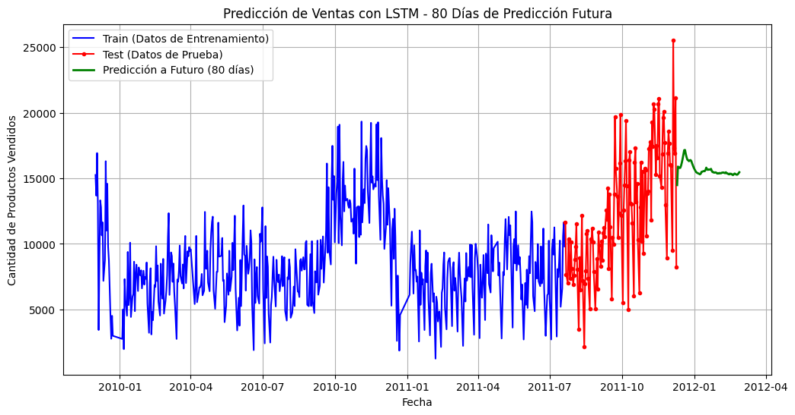
🔹 MAE (Error Absoluto Medio): 3801.8743
🔹 MSE (Error Cuadrático Medio): 23957899.9303
🔹 RMSE (Raíz del Error Cuadrático Medio): 4894.6808
🔹 MAPE (Error Porcentual Absoluto Medio): 239.42%
🔹 P-valor de la Prueba de Ljung-Box: 0.0634
import seaborn as sns
import statsmodels.api as sm
from statsmodels.graphics.tsaplots import plot_acf
# 📌 Calcular residuos
residuals = y_test_original.flatten() - y_pred.flatten()
# 📊 Crear figura con 2x2 subgráficos
fig, axes = plt.subplots(2, 2, figsize=(14, 10))
# 1️⃣ Gráfico de los residuos
axes[0, 0].plot(test.index[-len(residuals):], residuals, marker='o', linestyle='-', markersize=3, color='blue', label='Residuos')
axes[0, 0].axhline(y=0, color='red', linestyle='--', linewidth=1)
axes[0, 0].set_title("Gráfico de Residuos")
axes[0, 0].set_xlabel("Fecha")
axes[0, 0].set_ylabel("Residuos")
axes[0, 0].legend()
# 2️⃣ Función de Autocorrelación (ACF)
plot_acf(residuals, lags=20, ax=axes[0, 1])
axes[0, 1].set_title("Función de Autocorrelación (ACF)")
# 3️⃣ Histograma de los residuos
sns.histplot(residuals, kde=True, bins=20, color='blue', ax=axes[1, 0])
axes[1, 0].axvline(x=0, color='red', linestyle='--', linewidth=1)
axes[1, 0].set_title("Histograma de los Residuos")
axes[1, 0].set_xlabel("Valor del Residuo")
axes[1, 0].set_ylabel("Frecuencia")
# 4️⃣ QQ Plot de los residuos
sm.qqplot(residuals, line='s', ax=axes[1, 1], color='blue')
axes[1, 1].set_title("QQ Plot de Residuos")
plt.tight_layout()
plt.show()
c:\Users\ronal\miniconda3\envs\series_de_tiempo\lib\site-packages\seaborn\_oldcore.py:1119: FutureWarning: use_inf_as_na option is deprecated and will be removed in a future version. Convert inf values to NaN before operating instead.
with pd.option_context('mode.use_inf_as_na', True):
c:\Users\ronal\miniconda3\envs\series_de_tiempo\lib\site-packages\statsmodels\graphics\gofplots.py:1041: UserWarning: color is redundantly defined by the 'color' keyword argument and the fmt string "b" (-> color=(0.0, 0.0, 1.0, 1)). The keyword argument will take precedence.
ax.plot(x, y, fmt, **plot_style)
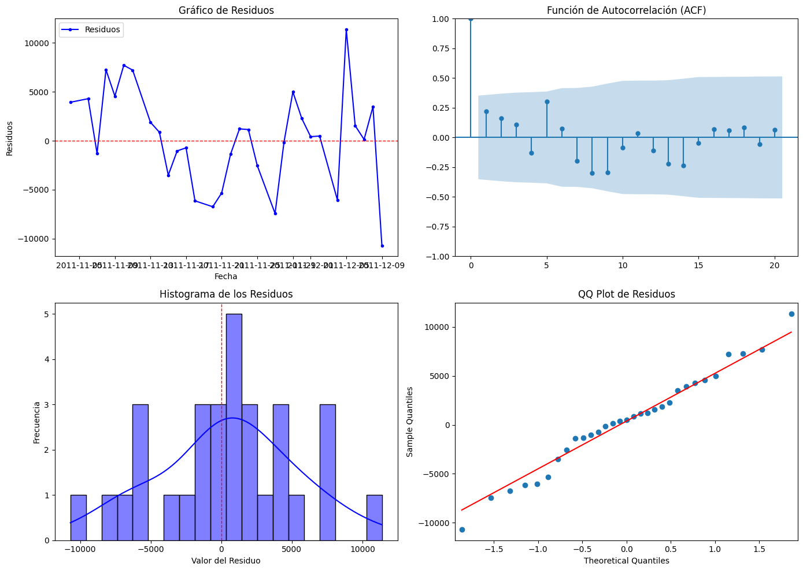
MLP
import pandas as pd
import numpy as np
import matplotlib.pyplot as plt
from sklearn.preprocessing import MinMaxScaler
from sklearn.metrics import mean_absolute_error, mean_squared_error
from statsmodels.stats.diagnostic import acorr_ljungbox
import tensorflow as tf
from tensorflow.keras.models import Sequential
from tensorflow.keras.layers import Dense, Dropout
from tensorflow.keras.optimizers import Adam
# 📌 Cargar y Preprocesar Datos
if isinstance(data4.index, pd.DatetimeIndex):
data4.reset_index(inplace=True)
data4['InvoiceDate'] = pd.to_datetime(data4['InvoiceDate'])
data_daily = data4.groupby(data4['InvoiceDate'].dt.date)['Quantity'].sum().reset_index()
data_daily['InvoiceDate'] = pd.to_datetime(data_daily['InvoiceDate'])
data_daily.set_index('InvoiceDate', inplace=True)
# 📌 Normalización MinMax
scaler = MinMaxScaler()
data_daily['Quantity_scaled'] = scaler.fit_transform(data_daily[['Quantity']])
# 📌 Diferenciación para hacer la serie estacionaria
data_daily['Quantity_diff'] = data_daily['Quantity_scaled'].diff().fillna(0)
# 📌 División en train y test
split_index = int(len(data_daily) * 0.8)
train, test = data_daily[:split_index], data_daily[split_index:]
# 📌 Función para crear secuencias de datos para MLP
def create_sequences(data, seq_length):
X, y = [], []
for i in range(len(data) - seq_length):
X.append(data[i:i + seq_length])
y.append(data[i + seq_length])
return np.array(X), np.array(y)
# 📌 Parámetros del modelo
seq_length = 90 # 🔹 Ventana de tiempo extendida
n_futuro = 30 # 🔹 Días de predicción a futuro
# 📌 Crear secuencias para MLP
X_train, y_train = create_sequences(train['Quantity_diff'].values, seq_length)
X_test, y_test = create_sequences(test['Quantity_diff'].values, seq_length)
# 📌 Redimensionar para MLP (Aplanar entrada)
X_train = X_train.reshape((X_train.shape[0], X_train.shape[1]))
X_test = X_test.reshape((X_test.shape[0], X_test.shape[1]))
# 📌 Definir el modelo MLP mejorado
model = Sequential([
Dense(256, activation='relu', input_shape=(seq_length,)),
Dropout(0.2),
Dense(128, activation='relu'),
Dropout(0.2),
Dense(64, activation='relu'),
Dense(1)
])
# 📌 Compilar el modelo con un learning rate más bajo
model.compile(optimizer=Adam(learning_rate=0.0003), loss='mse')
# 📌 Entrenar el modelo
history = model.fit(X_train, y_train, epochs=100, batch_size=16, validation_data=(X_test, y_test), verbose=1)
# 📌 Predicción en test
y_pred_scaled = model.predict(X_test)
# 📌 Desescalar predicciones
y_pred = scaler.inverse_transform(y_pred_scaled)
y_test_original = scaler.inverse_transform(y_test.reshape(-1, 1))
# 📌 Cálculo de métricas de error
mae = mean_absolute_error(y_test_original, y_pred)
mse = mean_squared_error(y_test_original, y_pred)
rmse = np.sqrt(mse)
mape = np.mean(np.abs((y_test_original - y_pred) / y_test_original)) * 100
# 📌 Prueba de Ljung-Box
residuals = y_test_original - y_pred
ljung_box_test = acorr_ljungbox(residuals.flatten(), lags=[10], return_df=True)
p_valor_ljung_box = ljung_box_test['lb_pvalue'].values[0]
# 📌 Predicción a futuro
ultimos_dias = test['Quantity_diff'].values[-seq_length:].reshape(1, seq_length)
predicciones_futuras = []
for _ in range(n_futuro):
prediccion = model.predict(ultimos_dias)
predicciones_futuras.append(prediccion[0, 0])
ultimos_dias = np.roll(ultimos_dias, shift=-1, axis=1)
ultimos_dias[0, -1] = prediccion[0, 0]
# 📌 Ajustar la predicción acumulando la serie diferenciada
predicciones_futuras_acumuladas = []
valor_inicial = test['Quantity_scaled'].values[-1]
for prediccion in predicciones_futuras:
valor_inicial += prediccion
predicciones_futuras_acumuladas.append(valor_inicial)
# 📌 Desescalar a valores originales
predicciones_futuras_acumuladas = scaler.inverse_transform(np.array(predicciones_futuras_acumuladas).reshape(-1, 1))
# 📌 Crear fechas futuras
fechas_futuras = pd.date_range(start=test.index[-1] + pd.Timedelta(days=1), periods=n_futuro, freq='D')
# 📊 Graficar los resultados con entrenamiento, prueba y predicción a futuro
plt.figure(figsize=(12, 6))
# Datos de entrenamiento
plt.plot(train.index, scaler.inverse_transform(train['Quantity_scaled'].values.reshape(-1, 1)),
linestyle='-', color='blue', label='Train (Datos de Entrenamiento)')
# Datos de prueba
plt.plot(test.index, scaler.inverse_transform(test['Quantity_scaled'].values.reshape(-1, 1)),
marker='o', linestyle='-', color='red', markersize=3, label='Test (Datos de Prueba)')
# Predicciones futuras acumuladas
plt.plot(fechas_futuras, predicciones_futuras_acumuladas, linestyle='-', linewidth=2, color='green', label=f'Predicción a Futuro ({n_futuro} días)')
# Configuración de la gráfica
plt.xlabel('Fecha')
plt.ylabel('Cantidad de Productos Vendidos')
plt.title(f'Predicción de Ventas con MLP - {n_futuro} Días de Predicción Futura')
plt.legend()
plt.grid()
# Mostrar la gráfica
plt.show()
# 📌 Mostrar métricas finales
print(f"🔹 MAE (Error Absoluto Medio): {mae:.4f}")
print(f"🔹 MSE (Error Cuadrático Medio): {mse:.4f}")
print(f"🔹 RMSE (Raíz del Error Cuadrático Medio): {rmse:.4f}")
print(f"🔹 MAPE (Error Porcentual Absoluto Medio): {mape:.2f}%")
print(f"🔹 P-valor de la Prueba de Ljung-Box: {p_valor_ljung_box:.4f}")
C:\Users\ronal\AppData\Local\Temp\ipykernel_31372\1927381881.py:16: SettingWithCopyWarning:
A value is trying to be set on a copy of a slice from a DataFrame.
Try using .loc[row_indexer,col_indexer] = value instead
See the caveats in the documentation: https://pandas.pydata.org/pandas-docs/stable/user_guide/indexing.html#returning-a-view-versus-a-copy
data4['InvoiceDate'] = pd.to_datetime(data4['InvoiceDate'])
Epoch 1/100
25/25 [==============================] - 1s 12ms/step - loss: 0.0180 - val_loss: 0.0458
Epoch 2/100
25/25 [==============================] - 0s 6ms/step - loss: 0.0128 - val_loss: 0.0401
Epoch 3/100
25/25 [==============================] - 0s 7ms/step - loss: 0.0128 - val_loss: 0.0397
Epoch 4/100
25/25 [==============================] - 0s 6ms/step - loss: 0.0119 - val_loss: 0.0363
Epoch 5/100
25/25 [==============================] - 0s 7ms/step - loss: 0.0108 - val_loss: 0.0353
Epoch 6/100
25/25 [==============================] - 0s 6ms/step - loss: 0.0102 - val_loss: 0.0325
Epoch 7/100
25/25 [==============================] - 0s 6ms/step - loss: 0.0094 - val_loss: 0.0319
Epoch 8/100
25/25 [==============================] - 0s 6ms/step - loss: 0.0086 - val_loss: 0.0325
Epoch 9/100
25/25 [==============================] - 0s 6ms/step - loss: 0.0076 - val_loss: 0.0307
Epoch 10/100
25/25 [==============================] - 0s 7ms/step - loss: 0.0070 - val_loss: 0.0307
Epoch 11/100
25/25 [==============================] - 0s 6ms/step - loss: 0.0063 - val_loss: 0.0293
Epoch 12/100
25/25 [==============================] - 0s 6ms/step - loss: 0.0061 - val_loss: 0.0287
Epoch 13/100
25/25 [==============================] - 0s 6ms/step - loss: 0.0064 - val_loss: 0.0296
Epoch 14/100
25/25 [==============================] - 0s 6ms/step - loss: 0.0057 - val_loss: 0.0285
Epoch 15/100
25/25 [==============================] - 0s 6ms/step - loss: 0.0053 - val_loss: 0.0287
Epoch 16/100
25/25 [==============================] - 0s 6ms/step - loss: 0.0054 - val_loss: 0.0292
Epoch 17/100
25/25 [==============================] - 0s 6ms/step - loss: 0.0050 - val_loss: 0.0300
Epoch 18/100
25/25 [==============================] - 0s 6ms/step - loss: 0.0046 - val_loss: 0.0296
Epoch 19/100
25/25 [==============================] - 0s 6ms/step - loss: 0.0044 - val_loss: 0.0295
Epoch 20/100
25/25 [==============================] - 0s 6ms/step - loss: 0.0037 - val_loss: 0.0302
Epoch 21/100
25/25 [==============================] - 0s 6ms/step - loss: 0.0035 - val_loss: 0.0287
Epoch 22/100
25/25 [==============================] - 0s 5ms/step - loss: 0.0041 - val_loss: 0.0277
Epoch 23/100
25/25 [==============================] - 0s 6ms/step - loss: 0.0037 - val_loss: 0.0288
Epoch 24/100
25/25 [==============================] - 0s 6ms/step - loss: 0.0036 - val_loss: 0.0282
Epoch 25/100
25/25 [==============================] - 0s 6ms/step - loss: 0.0034 - val_loss: 0.0287
Epoch 26/100
25/25 [==============================] - 0s 6ms/step - loss: 0.0036 - val_loss: 0.0275
Epoch 27/100
25/25 [==============================] - 0s 7ms/step - loss: 0.0031 - val_loss: 0.0285
Epoch 28/100
25/25 [==============================] - 0s 6ms/step - loss: 0.0032 - val_loss: 0.0296
Epoch 29/100
25/25 [==============================] - 0s 6ms/step - loss: 0.0029 - val_loss: 0.0292
Epoch 30/100
25/25 [==============================] - 0s 7ms/step - loss: 0.0030 - val_loss: 0.0281
Epoch 31/100
25/25 [==============================] - 0s 9ms/step - loss: 0.0029 - val_loss: 0.0282
Epoch 32/100
25/25 [==============================] - 0s 9ms/step - loss: 0.0026 - val_loss: 0.0288
Epoch 33/100
25/25 [==============================] - 0s 6ms/step - loss: 0.0030 - val_loss: 0.0298
Epoch 34/100
25/25 [==============================] - 0s 6ms/step - loss: 0.0027 - val_loss: 0.0317
Epoch 35/100
25/25 [==============================] - 0s 6ms/step - loss: 0.0025 - val_loss: 0.0322
Epoch 36/100
25/25 [==============================] - 0s 6ms/step - loss: 0.0026 - val_loss: 0.0315
Epoch 37/100
25/25 [==============================] - 0s 7ms/step - loss: 0.0027 - val_loss: 0.0315
Epoch 38/100
25/25 [==============================] - 0s 5ms/step - loss: 0.0023 - val_loss: 0.0297
Epoch 39/100
25/25 [==============================] - 0s 6ms/step - loss: 0.0021 - val_loss: 0.0292
Epoch 40/100
25/25 [==============================] - 0s 6ms/step - loss: 0.0021 - val_loss: 0.0287
Epoch 41/100
25/25 [==============================] - 0s 7ms/step - loss: 0.0023 - val_loss: 0.0291
Epoch 42/100
25/25 [==============================] - 0s 5ms/step - loss: 0.0021 - val_loss: 0.0291
Epoch 43/100
25/25 [==============================] - 0s 6ms/step - loss: 0.0019 - val_loss: 0.0299
Epoch 44/100
25/25 [==============================] - 0s 6ms/step - loss: 0.0022 - val_loss: 0.0299
Epoch 45/100
25/25 [==============================] - 0s 6ms/step - loss: 0.0021 - val_loss: 0.0300
Epoch 46/100
25/25 [==============================] - 0s 5ms/step - loss: 0.0021 - val_loss: 0.0293
Epoch 47/100
25/25 [==============================] - 0s 6ms/step - loss: 0.0020 - val_loss: 0.0295
Epoch 48/100
25/25 [==============================] - 0s 7ms/step - loss: 0.0019 - val_loss: 0.0288
Epoch 49/100
25/25 [==============================] - 0s 6ms/step - loss: 0.0020 - val_loss: 0.0299
Epoch 50/100
25/25 [==============================] - 0s 6ms/step - loss: 0.0016 - val_loss: 0.0317
Epoch 51/100
25/25 [==============================] - 0s 6ms/step - loss: 0.0018 - val_loss: 0.0307
Epoch 52/100
25/25 [==============================] - 0s 7ms/step - loss: 0.0021 - val_loss: 0.0295
Epoch 53/100
25/25 [==============================] - 0s 7ms/step - loss: 0.0017 - val_loss: 0.0291
Epoch 54/100
25/25 [==============================] - 0s 6ms/step - loss: 0.0017 - val_loss: 0.0296
Epoch 55/100
25/25 [==============================] - 0s 6ms/step - loss: 0.0015 - val_loss: 0.0296
Epoch 56/100
25/25 [==============================] - 0s 6ms/step - loss: 0.0018 - val_loss: 0.0289
Epoch 57/100
25/25 [==============================] - 0s 7ms/step - loss: 0.0018 - val_loss: 0.0291
Epoch 58/100
25/25 [==============================] - 0s 6ms/step - loss: 0.0014 - val_loss: 0.0301
Epoch 59/100
25/25 [==============================] - 0s 6ms/step - loss: 0.0018 - val_loss: 0.0297
Epoch 60/100
25/25 [==============================] - 0s 6ms/step - loss: 0.0017 - val_loss: 0.0301
Epoch 61/100
25/25 [==============================] - 0s 5ms/step - loss: 0.0015 - val_loss: 0.0298
Epoch 62/100
25/25 [==============================] - 0s 6ms/step - loss: 0.0015 - val_loss: 0.0291
Epoch 63/100
25/25 [==============================] - 0s 6ms/step - loss: 0.0018 - val_loss: 0.0300
Epoch 64/100
25/25 [==============================] - 0s 6ms/step - loss: 0.0015 - val_loss: 0.0286
Epoch 65/100
25/25 [==============================] - 0s 7ms/step - loss: 0.0015 - val_loss: 0.0291
Epoch 66/100
25/25 [==============================] - 0s 6ms/step - loss: 0.0013 - val_loss: 0.0294
Epoch 67/100
25/25 [==============================] - 0s 6ms/step - loss: 0.0017 - val_loss: 0.0288
Epoch 68/100
25/25 [==============================] - 0s 6ms/step - loss: 0.0015 - val_loss: 0.0297
Epoch 69/100
25/25 [==============================] - 0s 6ms/step - loss: 0.0016 - val_loss: 0.0306
Epoch 70/100
25/25 [==============================] - 0s 6ms/step - loss: 0.0015 - val_loss: 0.0305
Epoch 71/100
25/25 [==============================] - 0s 6ms/step - loss: 0.0015 - val_loss: 0.0306
Epoch 72/100
25/25 [==============================] - 0s 6ms/step - loss: 0.0012 - val_loss: 0.0310
Epoch 73/100
25/25 [==============================] - 0s 6ms/step - loss: 0.0014 - val_loss: 0.0301
Epoch 74/100
25/25 [==============================] - 0s 6ms/step - loss: 0.0012 - val_loss: 0.0299
Epoch 75/100
25/25 [==============================] - 0s 6ms/step - loss: 0.0014 - val_loss: 0.0305
Epoch 76/100
25/25 [==============================] - 0s 6ms/step - loss: 0.0013 - val_loss: 0.0310
Epoch 77/100
25/25 [==============================] - 0s 6ms/step - loss: 0.0018 - val_loss: 0.0309
Epoch 78/100
25/25 [==============================] - 0s 6ms/step - loss: 0.0014 - val_loss: 0.0306
Epoch 79/100
25/25 [==============================] - 0s 6ms/step - loss: 0.0013 - val_loss: 0.0313
Epoch 80/100
25/25 [==============================] - 0s 6ms/step - loss: 0.0014 - val_loss: 0.0307
Epoch 81/100
25/25 [==============================] - 0s 7ms/step - loss: 0.0013 - val_loss: 0.0307
Epoch 82/100
25/25 [==============================] - 0s 6ms/step - loss: 0.0012 - val_loss: 0.0300
Epoch 83/100
25/25 [==============================] - 0s 6ms/step - loss: 0.0013 - val_loss: 0.0303
Epoch 84/100
25/25 [==============================] - 0s 6ms/step - loss: 0.0011 - val_loss: 0.0300
Epoch 85/100
25/25 [==============================] - 0s 6ms/step - loss: 0.0011 - val_loss: 0.0296
Epoch 86/100
25/25 [==============================] - 0s 6ms/step - loss: 0.0012 - val_loss: 0.0300
Epoch 87/100
25/25 [==============================] - 0s 6ms/step - loss: 0.0012 - val_loss: 0.0312
Epoch 88/100
25/25 [==============================] - 0s 6ms/step - loss: 0.0012 - val_loss: 0.0301
Epoch 89/100
25/25 [==============================] - 0s 6ms/step - loss: 0.0012 - val_loss: 0.0308
Epoch 90/100
25/25 [==============================] - 0s 6ms/step - loss: 0.0011 - val_loss: 0.0308
Epoch 91/100
25/25 [==============================] - 0s 10ms/step - loss: 0.0011 - val_loss: 0.0318
Epoch 92/100
25/25 [==============================] - 0s 6ms/step - loss: 0.0010 - val_loss: 0.0315
Epoch 93/100
25/25 [==============================] - 0s 7ms/step - loss: 0.0011 - val_loss: 0.0313
Epoch 94/100
25/25 [==============================] - 0s 7ms/step - loss: 0.0011 - val_loss: 0.0318
Epoch 95/100
25/25 [==============================] - 0s 7ms/step - loss: 0.0011 - val_loss: 0.0318
Epoch 96/100
25/25 [==============================] - 0s 7ms/step - loss: 0.0010 - val_loss: 0.0313
Epoch 97/100
25/25 [==============================] - 0s 6ms/step - loss: 0.0013 - val_loss: 0.0310
Epoch 98/100
25/25 [==============================] - 0s 6ms/step - loss: 0.0010 - val_loss: 0.0311
Epoch 99/100
25/25 [==============================] - 0s 6ms/step - loss: 0.0012 - val_loss: 0.0308
Epoch 100/100
25/25 [==============================] - 0s 6ms/step - loss: 9.2452e-04 - val_loss: 0.0305
1/1 [==============================] - 0s 65ms/step
1/1 [==============================] - 0s 27ms/step
1/1 [==============================] - 0s 27ms/step
1/1 [==============================] - 0s 22ms/step
1/1 [==============================] - 0s 24ms/step
1/1 [==============================] - 0s 27ms/step
1/1 [==============================] - 0s 24ms/step
1/1 [==============================] - 0s 24ms/step
1/1 [==============================] - 0s 24ms/step
1/1 [==============================] - 0s 25ms/step
1/1 [==============================] - 0s 23ms/step
1/1 [==============================] - 0s 24ms/step
1/1 [==============================] - 0s 25ms/step
1/1 [==============================] - 0s 25ms/step
1/1 [==============================] - 0s 23ms/step
1/1 [==============================] - 0s 23ms/step
1/1 [==============================] - 0s 21ms/step
1/1 [==============================] - 0s 24ms/step
1/1 [==============================] - 0s 25ms/step
1/1 [==============================] - 0s 23ms/step
1/1 [==============================] - 0s 23ms/step
1/1 [==============================] - 0s 24ms/step
1/1 [==============================] - 0s 22ms/step
1/1 [==============================] - 0s 23ms/step
1/1 [==============================] - 0s 24ms/step
1/1 [==============================] - 0s 23ms/step
1/1 [==============================] - 0s 24ms/step
1/1 [==============================] - 0s 30ms/step
1/1 [==============================] - 0s 22ms/step
1/1 [==============================] - 0s 22ms/step
1/1 [==============================] - 0s 23ms/step
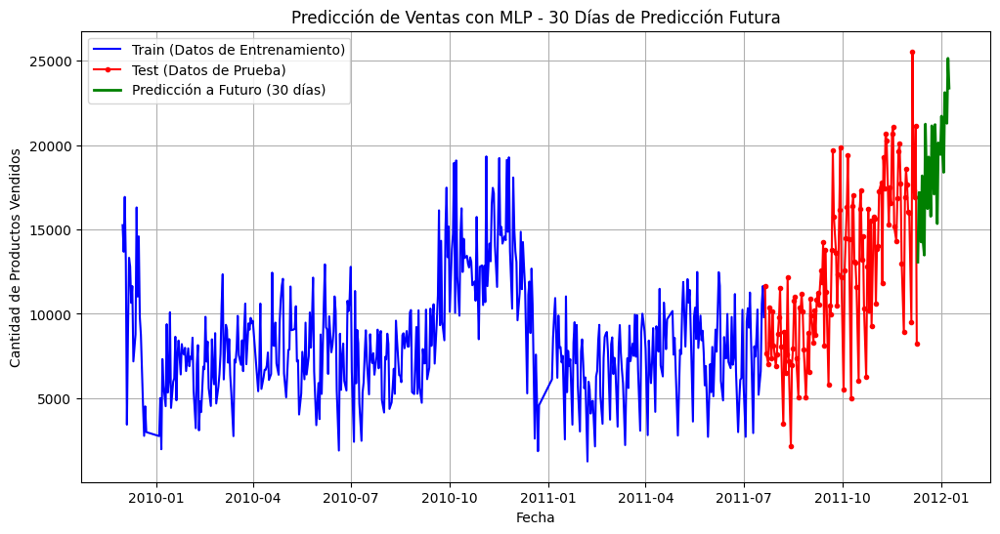
🔹 MAE (Error Absoluto Medio): 3507.8159
🔹 MSE (Error Cuadrático Medio): 18014060.3198
🔹 RMSE (Raíz del Error Cuadrático Medio): 4244.2974
🔹 MAPE (Error Porcentual Absoluto Medio): 206.62%
🔹 P-valor de la Prueba de Ljung-Box: 0.2604
import seaborn as sns
import statsmodels.api as sm
import matplotlib.pyplot as plt
from statsmodels.graphics.tsaplots import plot_acf
from statsmodels.stats.diagnostic import acorr_ljungbox
# 📌 Calcular los residuos
residuals = y_test_original - y_pred
# 📊 Crear figura con 2x2 subgráficos
fig, axes = plt.subplots(2, 2, figsize=(14, 10))
# 🔹 1. Gráfico de los residuos en el tiempo
axes[0, 0].plot(test.index[-len(residuals):], residuals, marker='o', linestyle='-', markersize=3, color='blue', label='Residuos')
axes[0, 0].axhline(y=0, color='red', linestyle='--', linewidth=1)
axes[0, 0].set_title("Gráfico de Residuos en el Tiempo")
axes[0, 0].set_xlabel("Fecha")
axes[0, 0].set_ylabel("Residuos")
axes[0, 0].legend()
# 🔹 2. Función de Autocorrelación (ACF) de los residuos
plot_acf(residuals.flatten(), lags=20, ax=axes[0, 1], color='blue')
axes[0, 1].set_title("Función de Autocorrelación (ACF) de los Residuos")
# 🔹 3. Histograma de los residuos con KDE
sns.histplot(residuals, kde=True, bins=20, color='blue', ax=axes[1, 0])
axes[1, 0].axvline(x=0, color='red', linestyle='--', linewidth=1)
axes[1, 0].set_title("Histograma de los Residuos")
axes[1, 0].set_xlabel("Valor del Residuo")
axes[1, 0].set_ylabel("Frecuencia")
# 🔹 4. QQ-Plot de los residuos
sm.qqplot(residuals.flatten(), line='s', ax=axes[1, 1], color='blue')
axes[1, 1].set_title("QQ-Plot de los Residuos")
plt.tight_layout()
plt.show()
c:\Users\ronal\miniconda3\envs\series_de_tiempo\lib\site-packages\seaborn\_oldcore.py:1119: FutureWarning: use_inf_as_na option is deprecated and will be removed in a future version. Convert inf values to NaN before operating instead.
with pd.option_context('mode.use_inf_as_na', True):
c:\Users\ronal\miniconda3\envs\series_de_tiempo\lib\site-packages\seaborn\_oldcore.py:1075: FutureWarning: When grouping with a length-1 list-like, you will need to pass a length-1 tuple to get_group in a future version of pandas. Pass `(name,)` instead of `name` to silence this warning.
data_subset = grouped_data.get_group(pd_key)
c:\Users\ronal\miniconda3\envs\series_de_tiempo\lib\site-packages\statsmodels\graphics\gofplots.py:1041: UserWarning: color is redundantly defined by the 'color' keyword argument and the fmt string "b" (-> color=(0.0, 0.0, 1.0, 1)). The keyword argument will take precedence.
ax.plot(x, y, fmt, **plot_style)
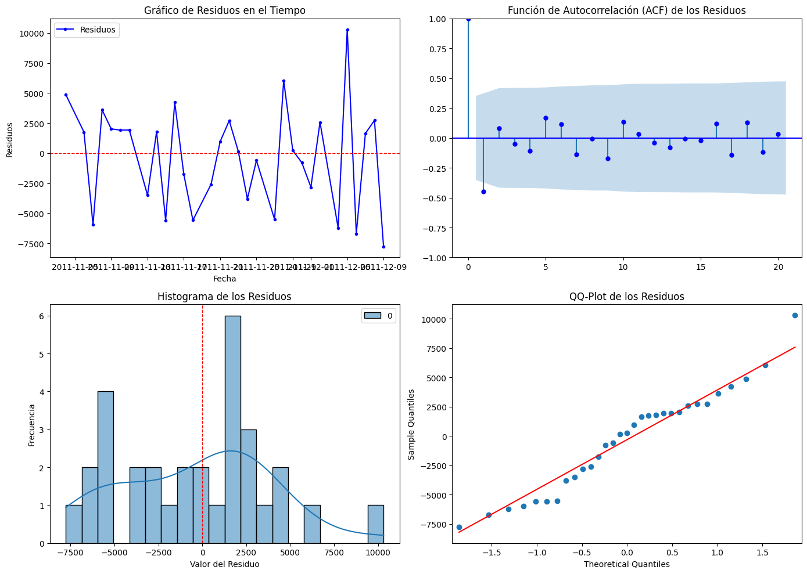
RNN
import pandas as pd
import numpy as np
import matplotlib.pyplot as plt
from sklearn.preprocessing import MinMaxScaler
from sklearn.metrics import mean_absolute_error, mean_squared_error
from statsmodels.stats.diagnostic import acorr_ljungbox
import tensorflow as tf
from tensorflow.keras.models import Sequential
from tensorflow.keras.layers import SimpleRNN, Dense, Dropout
from tensorflow.keras.optimizers import Adam
# 📌 Cargar y Preprocesar Datos
if isinstance(data4.index, pd.DatetimeIndex):
data4.reset_index(inplace=True)
data4['InvoiceDate'] = pd.to_datetime(data4['InvoiceDate'])
data_daily = data4.groupby(data4['InvoiceDate'].dt.date)['Quantity'].sum().reset_index()
data_daily['InvoiceDate'] = pd.to_datetime(data_daily['InvoiceDate'])
data_daily.set_index('InvoiceDate', inplace=True)
# 📌 Normalización MinMax
scaler = MinMaxScaler()
data_daily['Quantity_scaled'] = scaler.fit_transform(data_daily[['Quantity']])
# 📌 Diferenciación para hacer la serie estacionaria
data_daily['Quantity_diff'] = data_daily['Quantity_scaled'].diff().fillna(0)
# 📌 División en train y test
split_index = int(len(data_daily) * 0.8)
train, test = data_daily[:split_index], data_daily[split_index:]
# 📌 Función para crear secuencias de datos
def create_sequences(data, seq_length):
X, y = [], []
for i in range(len(data) - seq_length):
X.append(data[i:i + seq_length])
y.append(data[i + seq_length])
return np.array(X), np.array(y)
# 📌 Parámetros del modelo
seq_length = 90 # 🔹 Ventana de tiempo extendida
n_futuro = 30 # 🔹 Días de predicción a futuro
# 📌 Crear secuencias para RNN
X_train, y_train = create_sequences(train['Quantity_diff'].values, seq_length)
X_test, y_test = create_sequences(test['Quantity_diff'].values, seq_length)
# 📌 Redimensionar para RNN
X_train = X_train.reshape((X_train.shape[0], X_train.shape[1], 1))
X_test = X_test.reshape((X_test.shape[0], X_test.shape[1], 1))
# 📌 Definir el modelo RNN
model = Sequential([
SimpleRNN(100, return_sequences=True, input_shape=(seq_length, 1)), # Capa SimpleRNN en lugar de LSTM
Dropout(0.2),
SimpleRNN(100, return_sequences=True),
Dropout(0.2),
SimpleRNN(100),
Dense(50, activation='relu'),
Dense(1)
])
# 📌 Compilar el modelo con Adam y un learning rate más bajo
model.compile(optimizer=Adam(learning_rate=0.0003), loss='mse')
# 📌 Entrenar el modelo
history = model.fit(X_train, y_train, epochs=100, batch_size=16, validation_data=(X_test, y_test), verbose=1)
# 📌 Predicción en test
y_pred_scaled = model.predict(X_test)
# 📌 Desescalar predicciones
y_pred = scaler.inverse_transform(y_pred_scaled)
y_test_original = scaler.inverse_transform(y_test.reshape(-1, 1))
# 📌 Cálculo de métricas de error
mae = mean_absolute_error(y_test_original, y_pred)
mse = mean_squared_error(y_test_original, y_pred)
rmse = np.sqrt(mse)
mape = np.mean(np.abs((y_test_original - y_pred) / y_test_original)) * 100
# 📌 Prueba de Ljung-Box
residuals = y_test_original - y_pred
ljung_box_test = acorr_ljungbox(residuals.flatten(), lags=[10], return_df=True)
p_valor_ljung_box = ljung_box_test['lb_pvalue'].values[0]
# 📌 Predicción a futuro
ultimos_dias = test['Quantity_diff'].values[-seq_length:].reshape(1, seq_length, 1)
predicciones_futuras = []
for _ in range(n_futuro):
prediccion = model.predict(ultimos_dias)
predicciones_futuras.append(prediccion[0, 0])
ultimos_dias = np.roll(ultimos_dias, shift=-1, axis=1)
ultimos_dias[0, -1, 0] = prediccion[0, 0]
# 📌 Ajustar la predicción acumulando la serie diferenciada
predicciones_futuras_acumuladas = []
valor_inicial = test['Quantity_scaled'].values[-1]
for prediccion in predicciones_futuras:
valor_inicial += prediccion
predicciones_futuras_acumuladas.append(valor_inicial)
# 📌 Desescalar a valores originales
predicciones_futuras_acumuladas = scaler.inverse_transform(np.array(predicciones_futuras_acumuladas).reshape(-1, 1))
# 📌 Crear fechas futuras
fechas_futuras = pd.date_range(start=test.index[-1] + pd.Timedelta(days=1), periods=n_futuro, freq='D')
# 📊 Graficar los resultados con entrenamiento, prueba y predicción a futuro
plt.figure(figsize=(12, 6))
# Datos de entrenamiento
plt.plot(train.index, scaler.inverse_transform(train['Quantity_scaled'].values.reshape(-1, 1)),
linestyle='-', color='blue', label='Train (Datos de Entrenamiento)')
# Datos de prueba
plt.plot(test.index, scaler.inverse_transform(test['Quantity_scaled'].values.reshape(-1, 1)),
marker='o', linestyle='-', color='red', markersize=3, label='Test (Datos de Prueba)')
# Predicciones futuras acumuladas
plt.plot(fechas_futuras, predicciones_futuras_acumuladas, linestyle='-', linewidth=2, color='green', label=f'Predicción a Futuro ({n_futuro} días)')
# Configuración de la gráfica
plt.xlabel('Fecha')
plt.ylabel('Cantidad de Productos Vendidos')
plt.title(f'Predicción de Ventas con RNN - {n_futuro} Días de Predicción Futura')
plt.legend()
plt.grid()
# Mostrar la gráfica
plt.show()
# 📌 Mostrar métricas finales
print(f"🔹 MAE (Error Absoluto Medio): {mae:.4f}")
print(f"🔹 MSE (Error Cuadrático Medio): {mse:.4f}")
print(f"🔹 RMSE (Raíz del Error Cuadrático Medio): {rmse:.4f}")
print(f"🔹 MAPE (Error Porcentual Absoluto Medio): {mape:.2f}%")
print(f"🔹 P-valor de la Prueba de Ljung-Box: {p_valor_ljung_box:.4f}")
C:\Users\ronal\AppData\Local\Temp\ipykernel_31372\835929984.py:16: SettingWithCopyWarning:
A value is trying to be set on a copy of a slice from a DataFrame.
Try using .loc[row_indexer,col_indexer] = value instead
See the caveats in the documentation: https://pandas.pydata.org/pandas-docs/stable/user_guide/indexing.html#returning-a-view-versus-a-copy
data4['InvoiceDate'] = pd.to_datetime(data4['InvoiceDate'])
Epoch 1/100
25/25 [==============================] - 12s 398ms/step - loss: 0.1416 - val_loss: 0.0830
Epoch 2/100
25/25 [==============================] - 9s 369ms/step - loss: 0.0548 - val_loss: 0.0539
Epoch 3/100
25/25 [==============================] - 9s 363ms/step - loss: 0.0296 - val_loss: 0.0536
Epoch 4/100
25/25 [==============================] - 10s 392ms/step - loss: 0.0243 - val_loss: 0.0508
Epoch 5/100
25/25 [==============================] - 10s 385ms/step - loss: 0.0190 - val_loss: 0.0509
Epoch 6/100
25/25 [==============================] - 9s 366ms/step - loss: 0.0184 - val_loss: 0.0468
Epoch 7/100
25/25 [==============================] - 10s 388ms/step - loss: 0.0170 - val_loss: 0.0464
Epoch 8/100
25/25 [==============================] - 9s 350ms/step - loss: 0.0170 - val_loss: 0.0487
Epoch 9/100
25/25 [==============================] - 8s 321ms/step - loss: 0.0164 - val_loss: 0.0491
Epoch 10/100
25/25 [==============================] - 8s 306ms/step - loss: 0.0156 - val_loss: 0.0470
Epoch 11/100
25/25 [==============================] - 8s 313ms/step - loss: 0.0166 - val_loss: 0.0458
Epoch 12/100
25/25 [==============================] - 9s 357ms/step - loss: 0.0163 - val_loss: 0.0452
Epoch 13/100
25/25 [==============================] - 9s 356ms/step - loss: 0.0140 - val_loss: 0.0469
Epoch 14/100
25/25 [==============================] - 9s 355ms/step - loss: 0.0140 - val_loss: 0.0467
Epoch 15/100
25/25 [==============================] - 8s 336ms/step - loss: 0.0149 - val_loss: 0.0451
Epoch 16/100
25/25 [==============================] - 9s 370ms/step - loss: 0.0146 - val_loss: 0.0453
Epoch 17/100
25/25 [==============================] - 9s 347ms/step - loss: 0.0140 - val_loss: 0.0448
Epoch 18/100
25/25 [==============================] - 8s 314ms/step - loss: 0.0128 - val_loss: 0.0450
Epoch 19/100
25/25 [==============================] - 8s 341ms/step - loss: 0.0134 - val_loss: 0.0440
Epoch 20/100
25/25 [==============================] - 9s 369ms/step - loss: 0.0143 - val_loss: 0.0450
Epoch 21/100
25/25 [==============================] - 8s 329ms/step - loss: 0.0125 - val_loss: 0.0456
Epoch 22/100
25/25 [==============================] - 8s 330ms/step - loss: 0.0130 - val_loss: 0.0443
Epoch 23/100
25/25 [==============================] - 7s 295ms/step - loss: 0.0131 - val_loss: 0.0443
Epoch 24/100
25/25 [==============================] - 8s 332ms/step - loss: 0.0125 - val_loss: 0.0429
Epoch 25/100
25/25 [==============================] - 9s 374ms/step - loss: 0.0123 - val_loss: 0.0430
Epoch 26/100
25/25 [==============================] - 9s 380ms/step - loss: 0.0125 - val_loss: 0.0438
Epoch 27/100
25/25 [==============================] - 9s 364ms/step - loss: 0.0116 - val_loss: 0.0429
Epoch 28/100
25/25 [==============================] - 8s 332ms/step - loss: 0.0116 - val_loss: 0.0420
Epoch 29/100
25/25 [==============================] - 9s 377ms/step - loss: 0.0117 - val_loss: 0.0417
Epoch 30/100
25/25 [==============================] - 9s 376ms/step - loss: 0.0109 - val_loss: 0.0430
Epoch 31/100
25/25 [==============================] - 10s 387ms/step - loss: 0.0114 - val_loss: 0.0452
Epoch 32/100
25/25 [==============================] - 9s 360ms/step - loss: 0.0115 - val_loss: 0.0455
Epoch 33/100
25/25 [==============================] - 9s 362ms/step - loss: 0.0111 - val_loss: 0.0437
Epoch 34/100
25/25 [==============================] - 9s 376ms/step - loss: 0.0119 - val_loss: 0.0435
Epoch 35/100
25/25 [==============================] - 9s 371ms/step - loss: 0.0107 - val_loss: 0.0423
Epoch 36/100
25/25 [==============================] - 9s 365ms/step - loss: 0.0120 - val_loss: 0.0429
Epoch 37/100
25/25 [==============================] - 9s 368ms/step - loss: 0.0112 - val_loss: 0.0456
Epoch 38/100
25/25 [==============================] - 9s 347ms/step - loss: 0.0119 - val_loss: 0.0450
Epoch 39/100
25/25 [==============================] - 7s 276ms/step - loss: 0.0107 - val_loss: 0.0442
Epoch 40/100
25/25 [==============================] - 8s 325ms/step - loss: 0.0108 - val_loss: 0.0448
Epoch 41/100
25/25 [==============================] - 9s 355ms/step - loss: 0.0099 - val_loss: 0.0438
Epoch 42/100
25/25 [==============================] - 8s 325ms/step - loss: 0.0110 - val_loss: 0.0434
Epoch 43/100
25/25 [==============================] - 9s 370ms/step - loss: 0.0105 - val_loss: 0.0440
Epoch 44/100
25/25 [==============================] - 8s 324ms/step - loss: 0.0097 - val_loss: 0.0427
Epoch 45/100
25/25 [==============================] - 8s 330ms/step - loss: 0.0097 - val_loss: 0.0414
Epoch 46/100
25/25 [==============================] - 8s 324ms/step - loss: 0.0098 - val_loss: 0.0410
Epoch 47/100
25/25 [==============================] - 10s 402ms/step - loss: 0.0097 - val_loss: 0.0402
Epoch 48/100
25/25 [==============================] - 9s 350ms/step - loss: 0.0093 - val_loss: 0.0404
Epoch 49/100
25/25 [==============================] - 9s 353ms/step - loss: 0.0096 - val_loss: 0.0416
Epoch 50/100
25/25 [==============================] - 9s 371ms/step - loss: 0.0089 - val_loss: 0.0434
Epoch 51/100
25/25 [==============================] - 9s 368ms/step - loss: 0.0094 - val_loss: 0.0420
Epoch 52/100
25/25 [==============================] - 10s 397ms/step - loss: 0.0093 - val_loss: 0.0429
Epoch 53/100
25/25 [==============================] - 9s 352ms/step - loss: 0.0092 - val_loss: 0.0419
Epoch 54/100
25/25 [==============================] - 9s 352ms/step - loss: 0.0088 - val_loss: 0.0412
Epoch 55/100
25/25 [==============================] - 9s 350ms/step - loss: 0.0085 - val_loss: 0.0395
Epoch 56/100
25/25 [==============================] - 9s 354ms/step - loss: 0.0087 - val_loss: 0.0413
Epoch 57/100
25/25 [==============================] - 9s 368ms/step - loss: 0.0086 - val_loss: 0.0416
Epoch 58/100
25/25 [==============================] - 10s 382ms/step - loss: 0.0088 - val_loss: 0.0410
Epoch 59/100
25/25 [==============================] - 9s 353ms/step - loss: 0.0082 - val_loss: 0.0417
Epoch 60/100
25/25 [==============================] - 9s 374ms/step - loss: 0.0082 - val_loss: 0.0419
Epoch 61/100
25/25 [==============================] - 9s 339ms/step - loss: 0.0083 - val_loss: 0.0425
Epoch 62/100
25/25 [==============================] - 8s 341ms/step - loss: 0.0085 - val_loss: 0.0446
Epoch 63/100
25/25 [==============================] - 9s 350ms/step - loss: 0.0081 - val_loss: 0.0413
Epoch 64/100
25/25 [==============================] - 9s 354ms/step - loss: 0.0078 - val_loss: 0.0421
Epoch 65/100
25/25 [==============================] - 9s 372ms/step - loss: 0.0077 - val_loss: 0.0394
Epoch 66/100
25/25 [==============================] - 9s 372ms/step - loss: 0.0069 - val_loss: 0.0402
Epoch 67/100
25/25 [==============================] - 10s 386ms/step - loss: 0.0077 - val_loss: 0.0394
Epoch 68/100
25/25 [==============================] - 9s 370ms/step - loss: 0.0069 - val_loss: 0.0423
Epoch 69/100
25/25 [==============================] - 9s 355ms/step - loss: 0.0075 - val_loss: 0.0365
Epoch 70/100
25/25 [==============================] - 8s 343ms/step - loss: 0.0069 - val_loss: 0.0407
Epoch 71/100
25/25 [==============================] - 9s 360ms/step - loss: 0.0067 - val_loss: 0.0407
Epoch 72/100
25/25 [==============================] - 9s 368ms/step - loss: 0.0067 - val_loss: 0.0418
Epoch 73/100
25/25 [==============================] - 9s 377ms/step - loss: 0.0066 - val_loss: 0.0408
Epoch 74/100
25/25 [==============================] - 9s 375ms/step - loss: 0.0065 - val_loss: 0.0405
Epoch 75/100
25/25 [==============================] - 8s 337ms/step - loss: 0.0061 - val_loss: 0.0430
Epoch 76/100
25/25 [==============================] - 9s 365ms/step - loss: 0.0061 - val_loss: 0.0377
Epoch 77/100
25/25 [==============================] - 9s 360ms/step - loss: 0.0059 - val_loss: 0.0419
Epoch 78/100
25/25 [==============================] - 9s 371ms/step - loss: 0.0066 - val_loss: 0.0442
Epoch 79/100
25/25 [==============================] - 10s 401ms/step - loss: 0.0064 - val_loss: 0.0401
Epoch 80/100
25/25 [==============================] - 9s 370ms/step - loss: 0.0055 - val_loss: 0.0393
Epoch 81/100
25/25 [==============================] - 10s 401ms/step - loss: 0.0052 - val_loss: 0.0387
Epoch 82/100
25/25 [==============================] - 9s 373ms/step - loss: 0.0055 - val_loss: 0.0411
Epoch 83/100
25/25 [==============================] - 10s 392ms/step - loss: 0.0050 - val_loss: 0.0375
Epoch 84/100
25/25 [==============================] - 9s 364ms/step - loss: 0.0053 - val_loss: 0.0371
Epoch 85/100
25/25 [==============================] - 9s 357ms/step - loss: 0.0049 - val_loss: 0.0392
Epoch 86/100
25/25 [==============================] - 9s 345ms/step - loss: 0.0047 - val_loss: 0.0390
Epoch 87/100
25/25 [==============================] - 9s 358ms/step - loss: 0.0051 - val_loss: 0.0390
Epoch 88/100
25/25 [==============================] - 9s 379ms/step - loss: 0.0053 - val_loss: 0.0404
Epoch 89/100
25/25 [==============================] - 8s 330ms/step - loss: 0.0045 - val_loss: 0.0379
Epoch 90/100
25/25 [==============================] - 9s 356ms/step - loss: 0.0051 - val_loss: 0.0375
Epoch 91/100
25/25 [==============================] - 9s 360ms/step - loss: 0.0050 - val_loss: 0.0399
Epoch 92/100
25/25 [==============================] - 9s 359ms/step - loss: 0.0043 - val_loss: 0.0395
Epoch 93/100
25/25 [==============================] - 9s 364ms/step - loss: 0.0044 - val_loss: 0.0389
Epoch 94/100
25/25 [==============================] - 10s 381ms/step - loss: 0.0044 - val_loss: 0.0406
Epoch 95/100
25/25 [==============================] - 9s 345ms/step - loss: 0.0043 - val_loss: 0.0415
Epoch 96/100
25/25 [==============================] - 9s 365ms/step - loss: 0.0043 - val_loss: 0.0402
Epoch 97/100
25/25 [==============================] - 8s 340ms/step - loss: 0.0043 - val_loss: 0.0395
Epoch 98/100
25/25 [==============================] - 9s 359ms/step - loss: 0.0047 - val_loss: 0.0387
Epoch 99/100
25/25 [==============================] - 9s 364ms/step - loss: 0.0040 - val_loss: 0.0406
Epoch 100/100
25/25 [==============================] - 9s 356ms/step - loss: 0.0047 - val_loss: 0.0412
1/1 [==============================] - 0s 325ms/step
1/1 [==============================] - 0s 56ms/step
1/1 [==============================] - 0s 57ms/step
1/1 [==============================] - 0s 76ms/step
1/1 [==============================] - 0s 54ms/step
1/1 [==============================] - 0s 58ms/step
1/1 [==============================] - 0s 63ms/step
1/1 [==============================] - 0s 60ms/step
1/1 [==============================] - 0s 74ms/step
1/1 [==============================] - 0s 78ms/step
1/1 [==============================] - 0s 62ms/step
1/1 [==============================] - 0s 56ms/step
1/1 [==============================] - 0s 55ms/step
1/1 [==============================] - 0s 57ms/step
1/1 [==============================] - 0s 62ms/step
1/1 [==============================] - 0s 57ms/step
1/1 [==============================] - 0s 54ms/step
1/1 [==============================] - 0s 74ms/step
1/1 [==============================] - 0s 55ms/step
1/1 [==============================] - 0s 52ms/step
1/1 [==============================] - 0s 55ms/step
1/1 [==============================] - 0s 53ms/step
1/1 [==============================] - 0s 54ms/step
1/1 [==============================] - 0s 60ms/step
1/1 [==============================] - 0s 55ms/step
1/1 [==============================] - 0s 56ms/step
1/1 [==============================] - 0s 57ms/step
1/1 [==============================] - 0s 61ms/step
1/1 [==============================] - 0s 61ms/step
1/1 [==============================] - 0s 60ms/step
1/1 [==============================] - 0s 113ms/step
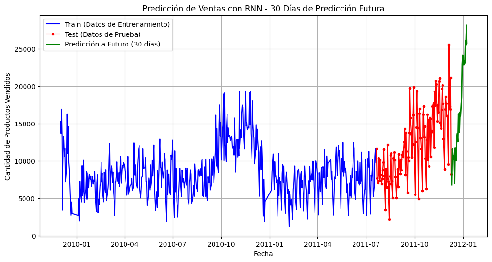
🔹 MAE (Error Absoluto Medio): 4047.5444
🔹 MSE (Error Cuadrático Medio): 24368439.0257
🔹 RMSE (Raíz del Error Cuadrático Medio): 4936.4399
🔹 MAPE (Error Porcentual Absoluto Medio): 210.24%
🔹 P-valor de la Prueba de Ljung-Box: 0.5449
# 📌 Calcular residuos
residuos_rnn = y_test_original.flatten() - y_pred.flatten()
# 📊 Crear figura con 2x2 subgráficos
fig, axes = plt.subplots(2, 2, figsize=(14, 10))
# 📌 1️⃣ Gráfico de los residuos en el tiempo
axes[0, 0].plot(test.index[seq_length:], residuos_rnn, marker='o', linestyle='-', markersize=3, color='blue', label='Residuos')
axes[0, 0].axhline(y=0, color='red', linestyle='--', linewidth=1)
axes[0, 0].set_title("Gráfico de Residuos")
axes[0, 0].set_xlabel("Fecha")
axes[0, 0].set_ylabel("Residuos")
axes[0, 0].legend()
# 📌 2️⃣ Función de Autocorrelación (ACF)
plot_acf(residuos_rnn, lags=20, ax=axes[0, 1], color='blue')
axes[0, 1].set_title("Función de Autocorrelación (ACF)")
# 📌 3️⃣ Histograma de los residuos
sns.histplot(residuos_rnn, kde=True, bins=20, color='blue', ax=axes[1, 0])
axes[1, 0].axvline(x=0, color='red', linestyle='--', linewidth=1)
axes[1, 0].set_title("Histograma de los Residuos")
axes[1, 0].set_xlabel("Valor del Residuo")
axes[1, 0].set_ylabel("Frecuencia")
# 📌 4️⃣ QQ-Plot de los residuos
stats.probplot(residuos_rnn, dist="norm", plot=axes[1, 1])
axes[1, 1].get_lines()[1].set_color('red') # Línea de referencia en rojo
axes[1, 1].set_title("QQ Plot de Residuos")
plt.tight_layout()
plt.show()
c:\Users\ronal\miniconda3\envs\series_de_tiempo\lib\site-packages\seaborn\_oldcore.py:1119: FutureWarning: use_inf_as_na option is deprecated and will be removed in a future version. Convert inf values to NaN before operating instead.
with pd.option_context('mode.use_inf_as_na', True):
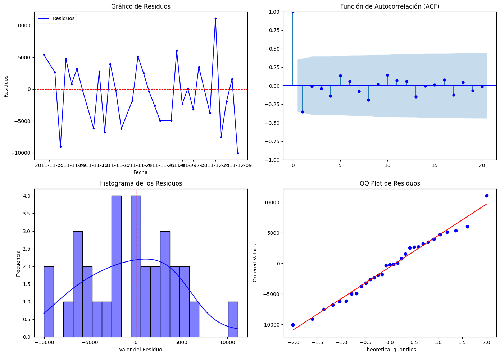
Transferred Bi-directional LSTM (TL-BLSTM)
import pandas as pd
import numpy as np
import matplotlib.pyplot as plt
from sklearn.preprocessing import MinMaxScaler
from sklearn.metrics import mean_absolute_error, mean_squared_error
from statsmodels.stats.diagnostic import acorr_ljungbox
import tensorflow as tf
from tensorflow.keras.models import Sequential
from tensorflow.keras.layers import LSTM, Bidirectional, Dense, Dropout
from tensorflow.keras.optimizers import Adam
# 📌 Convertir 'InvoiceDate' en columna si está en el índice
if isinstance(data4.index, pd.DatetimeIndex):
data4.reset_index(inplace=True)
# 📌 Asegurar que 'InvoiceDate' sea de tipo datetime
data4['InvoiceDate'] = pd.to_datetime(data4['InvoiceDate'])
# 📌 Agrupar por día y sumar la cantidad de productos vendidos
data_daily = data4.groupby(data4['InvoiceDate'].dt.date)['Quantity'].sum().reset_index()
data_daily['InvoiceDate'] = pd.to_datetime(data_daily['InvoiceDate'])
data_daily.set_index('InvoiceDate', inplace=True)
# 📌 Normalización MinMax
scaler = MinMaxScaler()
data_daily['Quantity_scaled'] = scaler.fit_transform(data_daily[['Quantity']])
# 📌 Diferenciación para hacer la serie estacionaria
data_daily['Quantity_diff'] = data_daily['Quantity_scaled'].diff().fillna(0)
# 📌 División en train y test (80% - 20%)
split_index = int(len(data_daily) * 0.8)
train, test = data_daily[:split_index], data_daily[split_index:]
# 📌 Función para crear secuencias de datos
def create_sequences(data, seq_length):
X, y = [], []
for i in range(len(data) - seq_length):
X.append(data[i:i + seq_length])
y.append(data[i + seq_length])
return np.array(X), np.array(y)
# 📌 Parámetros del modelo
seq_length = 90 # 🔹 Ventana de tiempo extendida
n_futuro = 60 # 🔹 Días de predicción a futuro
# 📌 Crear secuencias para LSTM
X_train, y_train = create_sequences(train['Quantity_diff'].values, seq_length)
X_test, y_test = create_sequences(test['Quantity_diff'].values, seq_length)
# 📌 Redimensionar para LSTM
X_train = X_train.reshape((X_train.shape[0], X_train.shape[1], 1))
X_test = X_test.reshape((X_test.shape[0], X_test.shape[1], 1))
# 📌 Definir el modelo TL-BLSTM
model = Sequential([
Bidirectional(LSTM(100, return_sequences=True, input_shape=(seq_length, 1))),
Dropout(0.2),
Bidirectional(LSTM(100, return_sequences=True)),
Dropout(0.2),
Bidirectional(LSTM(100)),
Dense(50, activation='relu'),
Dense(1)
])
# 📌 Compilar el modelo con Adam y una tasa de aprendizaje ajustada
model.compile(optimizer=Adam(learning_rate=0.0003), loss='mse')
# 📌 Entrenar el modelo
history = model.fit(X_train, y_train, epochs=100, batch_size=16, validation_data=(X_test, y_test), verbose=1)
# 📌 Predicción en test
y_pred_scaled = model.predict(X_test)
# 📌 Desescalar predicciones
y_pred = scaler.inverse_transform(y_pred_scaled)
y_test_original = scaler.inverse_transform(y_test.reshape(-1, 1))
# 📌 Cálculo de métricas de error
mae = mean_absolute_error(y_test_original, y_pred)
mse = mean_squared_error(y_test_original, y_pred)
rmse = np.sqrt(mse)
mape = np.mean(np.abs((y_test_original - y_pred) / y_test_original)) * 100
# 📌 Prueba de Ljung-Box
residuals = y_test_original - y_pred
ljung_box_test = acorr_ljungbox(residuals.flatten(), lags=[10], return_df=True)
p_valor_ljung_box = ljung_box_test['lb_pvalue'].values[0]
# 📌 Predicción a futuro
ultimos_dias = test['Quantity_diff'].values[-seq_length:].reshape(1, seq_length, 1)
predicciones_futuras = []
for _ in range(n_futuro):
prediccion = model.predict(ultimos_dias)
predicciones_futuras.append(prediccion[0, 0])
ultimos_dias = np.roll(ultimos_dias, shift=-1, axis=1)
ultimos_dias[0, -1, 0] = prediccion[0, 0]
# 📌 Ajustar la predicción acumulando la serie diferenciada
predicciones_futuras_acumuladas = []
valor_inicial = test['Quantity_scaled'].values[-1]
for prediccion in predicciones_futuras:
valor_inicial += prediccion
predicciones_futuras_acumuladas.append(valor_inicial)
# 📌 Desescalar a valores originales
predicciones_futuras_acumuladas = scaler.inverse_transform(np.array(predicciones_futuras_acumuladas).reshape(-1, 1))
# 📌 Crear fechas futuras
fechas_futuras = pd.date_range(start=test.index[-1] + pd.Timedelta(days=1), periods=n_futuro, freq='D')
# 📊 Graficar los resultados con entrenamiento, prueba y predicción a futuro
plt.figure(figsize=(12, 6))
# Datos de entrenamiento
plt.plot(train.index, scaler.inverse_transform(train['Quantity_scaled'].values.reshape(-1, 1)),
linestyle='-', color='blue', label='Train (Datos de Entrenamiento)')
# Datos de prueba
plt.plot(test.index, scaler.inverse_transform(test['Quantity_scaled'].values.reshape(-1, 1)),
marker='o', linestyle='-', color='red', markersize=3, label='Test (Datos de Prueba)')
# Predicciones futuras acumuladas
plt.plot(fechas_futuras, predicciones_futuras_acumuladas, linestyle='-', linewidth=2, color='green', label=f'Predicción a Futuro ({n_futuro} días)')
# Configuración de la gráfica
plt.xlabel('Fecha')
plt.ylabel('Cantidad de Productos Vendidos')
plt.title(f'Predicción de Ventas con TL-BLSTM - {n_futuro} Días de Predicción Futura')
plt.legend()
plt.grid()
# Mostrar la gráfica
plt.show()
# 📌 Mostrar métricas finales
print(f"🔹 MAE (Error Absoluto Medio): {mae:.4f}")
print(f"🔹 MSE (Error Cuadrático Medio): {mse:.4f}")
print(f"🔹 RMSE (Raíz del Error Cuadrático Medio): {rmse:.4f}")
print(f"🔹 MAPE (Error Porcentual Absoluto Medio): {mape:.2f}%")
print(f"🔹 P-valor de la Prueba de Ljung-Box: {p_valor_ljung_box:.4f}")
C:\Users\ronal\AppData\Local\Temp\ipykernel_31372\453824197.py:17: SettingWithCopyWarning:
A value is trying to be set on a copy of a slice from a DataFrame.
Try using .loc[row_indexer,col_indexer] = value instead
See the caveats in the documentation: https://pandas.pydata.org/pandas-docs/stable/user_guide/indexing.html#returning-a-view-versus-a-copy
data4['InvoiceDate'] = pd.to_datetime(data4['InvoiceDate'])
Epoch 1/100
25/25 [==============================] - 14s 166ms/step - loss: 0.0161 - val_loss: 0.0457
Epoch 2/100
25/25 [==============================] - 1s 58ms/step - loss: 0.0143 - val_loss: 0.0346
Epoch 3/100
25/25 [==============================] - 1s 55ms/step - loss: 0.0120 - val_loss: 0.0330
Epoch 4/100
25/25 [==============================] - 1s 57ms/step - loss: 0.0115 - val_loss: 0.0342
Epoch 5/100
25/25 [==============================] - 1s 57ms/step - loss: 0.0114 - val_loss: 0.0304
Epoch 6/100
25/25 [==============================] - 1s 57ms/step - loss: 0.0110 - val_loss: 0.0310
Epoch 7/100
25/25 [==============================] - 1s 54ms/step - loss: 0.0113 - val_loss: 0.0305
Epoch 8/100
25/25 [==============================] - 2s 62ms/step - loss: 0.0114 - val_loss: 0.0318
Epoch 9/100
25/25 [==============================] - 2s 61ms/step - loss: 0.0110 - val_loss: 0.0310
Epoch 10/100
25/25 [==============================] - 2s 62ms/step - loss: 0.0107 - val_loss: 0.0310
Epoch 11/100
25/25 [==============================] - 1s 57ms/step - loss: 0.0115 - val_loss: 0.0312
Epoch 12/100
25/25 [==============================] - 1s 60ms/step - loss: 0.0108 - val_loss: 0.0312
Epoch 13/100
25/25 [==============================] - 1s 58ms/step - loss: 0.0114 - val_loss: 0.0308
Epoch 14/100
25/25 [==============================] - 1s 59ms/step - loss: 0.0110 - val_loss: 0.0309
Epoch 15/100
25/25 [==============================] - 1s 54ms/step - loss: 0.0107 - val_loss: 0.0301
Epoch 16/100
25/25 [==============================] - 1s 53ms/step - loss: 0.0107 - val_loss: 0.0305
Epoch 17/100
25/25 [==============================] - 1s 52ms/step - loss: 0.0106 - val_loss: 0.0311
Epoch 18/100
25/25 [==============================] - 1s 55ms/step - loss: 0.0106 - val_loss: 0.0304
Epoch 19/100
25/25 [==============================] - 1s 59ms/step - loss: 0.0106 - val_loss: 0.0301
Epoch 20/100
25/25 [==============================] - 1s 56ms/step - loss: 0.0106 - val_loss: 0.0318
Epoch 21/100
25/25 [==============================] - 1s 55ms/step - loss: 0.0106 - val_loss: 0.0305
Epoch 22/100
25/25 [==============================] - 1s 59ms/step - loss: 0.0108 - val_loss: 0.0304
Epoch 23/100
25/25 [==============================] - 1s 56ms/step - loss: 0.0106 - val_loss: 0.0322
Epoch 24/100
25/25 [==============================] - 1s 57ms/step - loss: 0.0106 - val_loss: 0.0322
Epoch 25/100
25/25 [==============================] - 1s 57ms/step - loss: 0.0105 - val_loss: 0.0317
Epoch 26/100
25/25 [==============================] - 1s 55ms/step - loss: 0.0105 - val_loss: 0.0309
Epoch 27/100
25/25 [==============================] - 1s 54ms/step - loss: 0.0105 - val_loss: 0.0308
Epoch 28/100
25/25 [==============================] - 1s 53ms/step - loss: 0.0102 - val_loss: 0.0306
Epoch 29/100
25/25 [==============================] - 1s 56ms/step - loss: 0.0103 - val_loss: 0.0315
Epoch 30/100
25/25 [==============================] - 1s 53ms/step - loss: 0.0103 - val_loss: 0.0314
Epoch 31/100
25/25 [==============================] - 1s 53ms/step - loss: 0.0104 - val_loss: 0.0312
Epoch 32/100
25/25 [==============================] - 1s 53ms/step - loss: 0.0108 - val_loss: 0.0318
Epoch 33/100
25/25 [==============================] - 1s 55ms/step - loss: 0.0106 - val_loss: 0.0318
Epoch 34/100
25/25 [==============================] - 2s 61ms/step - loss: 0.0105 - val_loss: 0.0315
Epoch 35/100
25/25 [==============================] - 1s 54ms/step - loss: 0.0106 - val_loss: 0.0311
Epoch 36/100
25/25 [==============================] - 1s 54ms/step - loss: 0.0106 - val_loss: 0.0318
Epoch 37/100
25/25 [==============================] - 1s 52ms/step - loss: 0.0101 - val_loss: 0.0337
Epoch 38/100
25/25 [==============================] - 1s 54ms/step - loss: 0.0104 - val_loss: 0.0302
Epoch 39/100
25/25 [==============================] - 1s 53ms/step - loss: 0.0103 - val_loss: 0.0317
Epoch 40/100
25/25 [==============================] - 1s 49ms/step - loss: 0.0104 - val_loss: 0.0322
Epoch 41/100
25/25 [==============================] - 1s 49ms/step - loss: 0.0101 - val_loss: 0.0316
Epoch 42/100
25/25 [==============================] - 1s 51ms/step - loss: 0.0100 - val_loss: 0.0323
Epoch 43/100
25/25 [==============================] - 1s 52ms/step - loss: 0.0098 - val_loss: 0.0310
Epoch 44/100
25/25 [==============================] - 1s 53ms/step - loss: 0.0098 - val_loss: 0.0313
Epoch 45/100
25/25 [==============================] - 1s 52ms/step - loss: 0.0099 - val_loss: 0.0310
Epoch 46/100
25/25 [==============================] - 1s 48ms/step - loss: 0.0102 - val_loss: 0.0325
Epoch 47/100
25/25 [==============================] - 1s 53ms/step - loss: 0.0102 - val_loss: 0.0323
Epoch 48/100
25/25 [==============================] - 1s 56ms/step - loss: 0.0098 - val_loss: 0.0341
Epoch 49/100
25/25 [==============================] - 1s 54ms/step - loss: 0.0098 - val_loss: 0.0321
Epoch 50/100
25/25 [==============================] - 1s 53ms/step - loss: 0.0097 - val_loss: 0.0329
Epoch 51/100
25/25 [==============================] - 1s 50ms/step - loss: 0.0097 - val_loss: 0.0335
Epoch 52/100
25/25 [==============================] - 1s 48ms/step - loss: 0.0097 - val_loss: 0.0307
Epoch 53/100
25/25 [==============================] - 1s 47ms/step - loss: 0.0094 - val_loss: 0.0329
Epoch 54/100
25/25 [==============================] - 1s 49ms/step - loss: 0.0096 - val_loss: 0.0332
Epoch 55/100
25/25 [==============================] - 1s 48ms/step - loss: 0.0093 - val_loss: 0.0388
Epoch 56/100
25/25 [==============================] - 1s 52ms/step - loss: 0.0100 - val_loss: 0.0316
Epoch 57/100
25/25 [==============================] - 1s 55ms/step - loss: 0.0095 - val_loss: 0.0313
Epoch 58/100
25/25 [==============================] - 1s 51ms/step - loss: 0.0093 - val_loss: 0.0322
Epoch 59/100
25/25 [==============================] - 1s 58ms/step - loss: 0.0095 - val_loss: 0.0309
Epoch 60/100
25/25 [==============================] - 1s 54ms/step - loss: 0.0098 - val_loss: 0.0332
Epoch 61/100
25/25 [==============================] - 1s 54ms/step - loss: 0.0093 - val_loss: 0.0336
Epoch 62/100
25/25 [==============================] - 1s 53ms/step - loss: 0.0089 - val_loss: 0.0324
Epoch 63/100
25/25 [==============================] - 1s 50ms/step - loss: 0.0091 - val_loss: 0.0316
Epoch 64/100
25/25 [==============================] - 1s 56ms/step - loss: 0.0095 - val_loss: 0.0330
Epoch 65/100
25/25 [==============================] - 1s 57ms/step - loss: 0.0095 - val_loss: 0.0329
Epoch 66/100
25/25 [==============================] - 1s 52ms/step - loss: 0.0089 - val_loss: 0.0303
Epoch 67/100
25/25 [==============================] - 1s 51ms/step - loss: 0.0086 - val_loss: 0.0299
Epoch 68/100
25/25 [==============================] - 1s 50ms/step - loss: 0.0090 - val_loss: 0.0305
Epoch 69/100
25/25 [==============================] - 1s 53ms/step - loss: 0.0089 - val_loss: 0.0297
Epoch 70/100
25/25 [==============================] - 1s 56ms/step - loss: 0.0087 - val_loss: 0.0306
Epoch 71/100
25/25 [==============================] - 1s 54ms/step - loss: 0.0086 - val_loss: 0.0293
Epoch 72/100
25/25 [==============================] - 1s 56ms/step - loss: 0.0089 - val_loss: 0.0291
Epoch 73/100
25/25 [==============================] - 1s 56ms/step - loss: 0.0088 - val_loss: 0.0301
Epoch 74/100
25/25 [==============================] - 1s 50ms/step - loss: 0.0084 - val_loss: 0.0313
Epoch 75/100
25/25 [==============================] - 1s 52ms/step - loss: 0.0087 - val_loss: 0.0291
Epoch 76/100
25/25 [==============================] - 1s 55ms/step - loss: 0.0085 - val_loss: 0.0296
Epoch 77/100
25/25 [==============================] - 1s 52ms/step - loss: 0.0086 - val_loss: 0.0284
Epoch 78/100
25/25 [==============================] - 1s 52ms/step - loss: 0.0082 - val_loss: 0.0305
Epoch 79/100
25/25 [==============================] - 1s 52ms/step - loss: 0.0078 - val_loss: 0.0252
Epoch 80/100
25/25 [==============================] - 1s 55ms/step - loss: 0.0081 - val_loss: 0.0302
Epoch 81/100
25/25 [==============================] - 1s 60ms/step - loss: 0.0081 - val_loss: 0.0303
Epoch 82/100
25/25 [==============================] - 1s 56ms/step - loss: 0.0076 - val_loss: 0.0308
Epoch 83/100
25/25 [==============================] - 1s 56ms/step - loss: 0.0073 - val_loss: 0.0306
Epoch 84/100
25/25 [==============================] - 1s 58ms/step - loss: 0.0074 - val_loss: 0.0299
Epoch 85/100
25/25 [==============================] - 1s 51ms/step - loss: 0.0074 - val_loss: 0.0341
Epoch 86/100
25/25 [==============================] - 1s 56ms/step - loss: 0.0068 - val_loss: 0.0271
Epoch 87/100
25/25 [==============================] - 1s 56ms/step - loss: 0.0074 - val_loss: 0.0341
Epoch 88/100
25/25 [==============================] - 1s 56ms/step - loss: 0.0067 - val_loss: 0.0294
Epoch 89/100
25/25 [==============================] - 1s 54ms/step - loss: 0.0074 - val_loss: 0.0333
Epoch 90/100
25/25 [==============================] - 1s 53ms/step - loss: 0.0068 - val_loss: 0.0287
Epoch 91/100
25/25 [==============================] - 1s 55ms/step - loss: 0.0070 - val_loss: 0.0355
Epoch 92/100
25/25 [==============================] - 1s 55ms/step - loss: 0.0064 - val_loss: 0.0341
Epoch 93/100
25/25 [==============================] - 1s 53ms/step - loss: 0.0072 - val_loss: 0.0294
Epoch 94/100
25/25 [==============================] - 1s 53ms/step - loss: 0.0067 - val_loss: 0.0313
Epoch 95/100
25/25 [==============================] - 1s 52ms/step - loss: 0.0071 - val_loss: 0.0375
Epoch 96/100
25/25 [==============================] - 1s 56ms/step - loss: 0.0063 - val_loss: 0.0334
Epoch 97/100
25/25 [==============================] - 1s 59ms/step - loss: 0.0063 - val_loss: 0.0361
Epoch 98/100
25/25 [==============================] - 1s 60ms/step - loss: 0.0060 - val_loss: 0.0334
Epoch 99/100
25/25 [==============================] - 1s 55ms/step - loss: 0.0056 - val_loss: 0.0468
Epoch 100/100
25/25 [==============================] - 1s 55ms/step - loss: 0.0063 - val_loss: 0.0313
1/1 [==============================] - 2s 2s/step
1/1 [==============================] - 0s 50ms/step
1/1 [==============================] - 0s 54ms/step
1/1 [==============================] - 0s 50ms/step
1/1 [==============================] - 0s 48ms/step
1/1 [==============================] - 0s 54ms/step
1/1 [==============================] - 0s 52ms/step
1/1 [==============================] - 0s 52ms/step
1/1 [==============================] - 0s 56ms/step
1/1 [==============================] - 0s 53ms/step
1/1 [==============================] - 0s 51ms/step
1/1 [==============================] - 0s 48ms/step
1/1 [==============================] - 0s 53ms/step
1/1 [==============================] - 0s 50ms/step
1/1 [==============================] - 0s 48ms/step
1/1 [==============================] - 0s 53ms/step
1/1 [==============================] - 0s 52ms/step
1/1 [==============================] - 0s 50ms/step
1/1 [==============================] - 0s 51ms/step
1/1 [==============================] - 0s 57ms/step
1/1 [==============================] - 0s 51ms/step
1/1 [==============================] - 0s 52ms/step
1/1 [==============================] - 0s 51ms/step
1/1 [==============================] - 0s 49ms/step
1/1 [==============================] - 0s 52ms/step
1/1 [==============================] - 0s 53ms/step
1/1 [==============================] - 0s 52ms/step
1/1 [==============================] - 0s 53ms/step
1/1 [==============================] - 0s 57ms/step
1/1 [==============================] - 0s 55ms/step
1/1 [==============================] - 0s 59ms/step
1/1 [==============================] - 0s 57ms/step
1/1 [==============================] - 0s 51ms/step
1/1 [==============================] - 0s 52ms/step
1/1 [==============================] - 0s 56ms/step
1/1 [==============================] - 0s 54ms/step
1/1 [==============================] - 0s 53ms/step
1/1 [==============================] - 0s 55ms/step
1/1 [==============================] - 0s 58ms/step
1/1 [==============================] - 0s 55ms/step
1/1 [==============================] - 0s 57ms/step
1/1 [==============================] - 0s 55ms/step
1/1 [==============================] - 0s 51ms/step
1/1 [==============================] - 0s 49ms/step
1/1 [==============================] - 0s 58ms/step
1/1 [==============================] - 0s 59ms/step
1/1 [==============================] - 0s 55ms/step
1/1 [==============================] - 0s 51ms/step
1/1 [==============================] - 0s 56ms/step
1/1 [==============================] - 0s 51ms/step
1/1 [==============================] - 0s 50ms/step
1/1 [==============================] - 0s 52ms/step
1/1 [==============================] - 0s 55ms/step
1/1 [==============================] - 0s 61ms/step
1/1 [==============================] - 0s 52ms/step
1/1 [==============================] - 0s 47ms/step
1/1 [==============================] - 0s 48ms/step
1/1 [==============================] - 0s 57ms/step
1/1 [==============================] - 0s 55ms/step
1/1 [==============================] - 0s 56ms/step
1/1 [==============================] - 0s 55ms/step
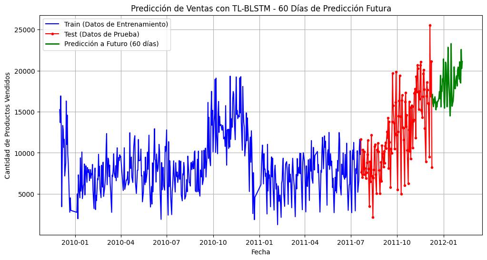
🔹 MAE (Error Absoluto Medio): 3518.2869
🔹 MSE (Error Cuadrático Medio): 18495594.7001
🔹 RMSE (Raíz del Error Cuadrático Medio): 4300.6505
🔹 MAPE (Error Porcentual Absoluto Medio): 204.67%
🔹 P-valor de la Prueba de Ljung-Box: 0.3460
Suavización exponencial de Holt-winters con dos parámetros
import pandas as pd
import numpy as np
import matplotlib.pyplot as plt
from statsmodels.tsa.holtwinters import ExponentialSmoothing
# Convertir 'InvoiceDate' en columna si está en el índice
if isinstance(data4.index, pd.DatetimeIndex):
data4.reset_index(inplace=True)
# Asegurar que 'InvoiceDate' sea de tipo datetime
data4['InvoiceDate'] = pd.to_datetime(data4['InvoiceDate'])
# Agrupar por día y sumar la cantidad de productos vendidos
data_daily = data4.groupby(data4['InvoiceDate'].dt.date)['Quantity'].sum().reset_index()
data_daily['InvoiceDate'] = pd.to_datetime(data_daily['InvoiceDate'])
data_daily.set_index('InvoiceDate', inplace=True)
# Aplicar rolling mean para suavizar la serie antes de modelar
data_daily['Quantity_rolling'] = data_daily['Quantity'].rolling(window=7, min_periods=1).mean()
# División en train y test (80% - 20%)
split_index = int(len(data_daily) * 0.8)
train, test = data_daily[:split_index], data_daily[split_index:]
# Calcular la desviación estándar en una ventana móvil para preservar variabilidad
rolling_std_train = train['Quantity'].rolling(window=7, min_periods=1).std()
rolling_std_test = test['Quantity'].rolling(window=7, min_periods=1).std()
# Modelo Holt-Winters con tendencia aditiva (dos parámetros: nivel y tendencia)
holt_winters_model = ExponentialSmoothing(
train['Quantity_rolling'], trend="add", seasonal=None, initialization_method="estimated"
).fit()
# Predicciones en test con variabilidad
test_predictions_holt = holt_winters_model.forecast(len(test))
# Añadir variabilidad basada en la desviación estándar de test
np.random.seed(42)
noise_test = np.random.normal(loc=0, scale=rolling_std_test.mean(), size=len(test_predictions_holt))
test_predictions_holt += noise_test
# Predicción a futuro con 120 días
num_days_forecast = 120
future_dates = pd.date_range(start=test.index[-1], periods=num_days_forecast + 1, freq='D')[1:]
future_forecast_holt = holt_winters_model.forecast(num_days_forecast)
# Añadir variabilidad basada en la desviación estándar de train
noise_future = np.random.normal(loc=0, scale=rolling_std_train.mean(), size=len(future_forecast_holt))
future_forecast_holt += noise_future
# 📊 Graficar los resultados con predicción en test mejorada y predicción futura sin cambios
plt.figure(figsize=(12, 6))
plt.plot(train.index, train['Quantity'], marker='o', linestyle='-', markersize=3, label='Train (Original)')
plt.plot(train.index, holt_winters_model.fittedvalues, linestyle='-', linewidth=2, label='Train (Suavizado con Rolling)')
plt.plot(test.index, test['Quantity'], marker='o', linestyle='-', markersize=3, label='Test (Original)', color='red')
plt.plot(test.index, test_predictions_holt, linestyle='-', linewidth=2, label='Predicción en Test', color='green')
plt.plot(future_dates, future_forecast_holt, linestyle='-', linewidth=2, color='purple', label='Predicción Futura')
plt.xlabel('Fecha')
plt.ylabel('Cantidad de Productos Vendidos')
plt.title('Suavización Exponencial de Holt-Winters con Dos Parámetros')
plt.legend()
plt.show()
C:\Users\ronal\AppData\Local\Temp\ipykernel_31372\3929411710.py:11: SettingWithCopyWarning:
A value is trying to be set on a copy of a slice from a DataFrame.
Try using .loc[row_indexer,col_indexer] = value instead
See the caveats in the documentation: https://pandas.pydata.org/pandas-docs/stable/user_guide/indexing.html#returning-a-view-versus-a-copy
data4['InvoiceDate'] = pd.to_datetime(data4['InvoiceDate'])
c:\Users\ronal\miniconda3\envs\series_de_tiempo\lib\site-packages\statsmodels\tsa\base\tsa_model.py:473: ValueWarning: A date index has been provided, but it has no associated frequency information and so will be ignored when e.g. forecasting.
self._init_dates(dates, freq)
c:\Users\ronal\miniconda3\envs\series_de_tiempo\lib\site-packages\statsmodels\tsa\holtwinters\model.py:918: ConvergenceWarning: Optimization failed to converge. Check mle_retvals.
warnings.warn(
c:\Users\ronal\miniconda3\envs\series_de_tiempo\lib\site-packages\statsmodels\tsa\base\tsa_model.py:837: ValueWarning: No supported index is available. Prediction results will be given with an integer index beginning at `start`.
return get_prediction_index(
c:\Users\ronal\miniconda3\envs\series_de_tiempo\lib\site-packages\statsmodels\tsa\base\tsa_model.py:837: FutureWarning: No supported index is available. In the next version, calling this method in a model without a supported index will result in an exception.
return get_prediction_index(
c:\Users\ronal\miniconda3\envs\series_de_tiempo\lib\site-packages\statsmodels\tsa\base\tsa_model.py:837: ValueWarning: No supported index is available. Prediction results will be given with an integer index beginning at `start`.
return get_prediction_index(
c:\Users\ronal\miniconda3\envs\series_de_tiempo\lib\site-packages\statsmodels\tsa\base\tsa_model.py:837: FutureWarning: No supported index is available. In the next version, calling this method in a model without a supported index will result in an exception.
return get_prediction_index(
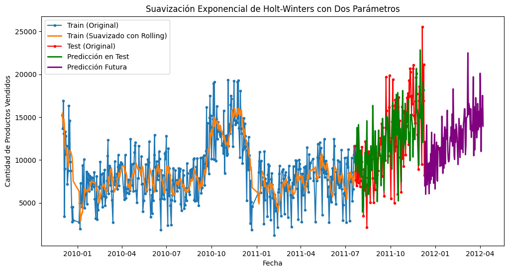
from sklearn.metrics import mean_absolute_error, mean_squared_error
from statsmodels.stats.diagnostic import acorr_ljungbox
import numpy as np
# Verificar tamaños antes de cálculos
print(f"Shape de test['Quantity']: {test['Quantity'].shape}")
print(f"Shape de test_predictions: {test_predictions.shape}")
# Asegurar que test_predictions sea un array 1D con la misma forma que test['Quantity']
test_predictions = np.array(test_predictions).reshape(-1)
# Ajustar el tamaño de las predicciones si es necesario
test_predictions = test_predictions[:len(test)]
# Calcular métricas de error
mae = mean_absolute_error(test['Quantity'], test_predictions)
mse = mean_squared_error(test['Quantity'], test_predictions)
rmse = np.sqrt(mse)
# Ajustar el cálculo de MAPE para evitar divisiones por cero
mape = np.mean(np.abs((test['Quantity'] - test_predictions) / (test['Quantity'] + 1e-9))) * 100
# Prueba de Ljung-Box para evaluar autocorrelación en los residuos
residuos = test['Quantity'] - test_predictions
ljung_box_pvalores = acorr_ljungbox(residuos, lags=[10], return_df=True)["lb_pvalue"].values[0]
# Mostrar resultados
print(f"📌 MÉTRICAS DEL MODELO SES:")
print(f"➡️ MAE (Error Absoluto Medio): {mae:.4f}")
print(f"➡️ MSE (Error Cuadrático Medio): {mse:.4f}")
print(f"➡️ RMSE (Raíz del Error Cuadrático Medio): {rmse:.4f}")
print(f"➡️ MAPE (Error Porcentual Absoluto Medio): {mape:.2f}%")
print(f"➡️ p-valor de la Prueba de Ljung-Box: {ljung_box_pvalores:.4f}")
# Interpretación de Ljung-Box
if ljung_box_pvalores < 0.05:
print("⚠️ Los residuos presentan autocorrelación significativa (p < 0.05).")
else:
print("✅ No se detecta autocorrelación significativa en los residuos (p >= 0.05).")
Shape de test['Quantity']: (121,)
Shape de test_predictions: (121,)
📌 MÉTRICAS DEL MODELO SES:
➡️ MAE (Error Absoluto Medio): 5233.3627
➡️ MSE (Error Cuadrático Medio): 39151017.4504
➡️ RMSE (Raíz del Error Cuadrático Medio): 6257.0774
➡️ MAPE (Error Porcentual Absoluto Medio): 43.62%
➡️ p-valor de la Prueba de Ljung-Box: 0.0000
⚠️ Los residuos presentan autocorrelación significativa (p < 0.05).
Suavización exponencial de Holt-winters con tres parámetros
import pandas as pd
import numpy as np
import matplotlib.pyplot as plt
from statsmodels.tsa.holtwinters import ExponentialSmoothing
# Convertir 'InvoiceDate' en columna si está en el índice
if isinstance(data4.index, pd.DatetimeIndex):
data4.reset_index(inplace=True)
# Asegurar que 'InvoiceDate' sea de tipo datetime
data4['InvoiceDate'] = pd.to_datetime(data4['InvoiceDate'])
# Agrupar por día y sumar la cantidad de productos vendidos
data_daily = data4.groupby(data4['InvoiceDate'].dt.date)['Quantity'].sum().reset_index()
data_daily['InvoiceDate'] = pd.to_datetime(data_daily['InvoiceDate'])
data_daily.set_index('InvoiceDate', inplace=True)
# Aplicar rolling mean para suavizar la serie antes de modelar
data_daily['Quantity_rolling'] = data_daily['Quantity'].rolling(window=7, min_periods=1).mean()
# División en train y test (80% - 20%)
split_index = int(len(data_daily) * 0.8)
train, test = data_daily[:split_index], data_daily[split_index:]
# Calcular la desviación estándar en una ventana móvil para preservar variabilidad
rolling_std_train = train['Quantity'].rolling(window=7, min_periods=1).std()
rolling_std_test = test['Quantity'].rolling(window=7, min_periods=1).std()
# Modelo Holt-Winters con tendencia aditiva y estacionalidad aditiva (tres parámetros: nivel, tendencia y estacionalidad)
holt_winters_model = ExponentialSmoothing(
train['Quantity_rolling'], trend="add", seasonal="add", seasonal_periods=7, initialization_method="estimated"
).fit()
# Predicciones en test con variabilidad
test_predictions_holt = holt_winters_model.forecast(len(test))
# Añadir variabilidad basada en la desviación estándar de test
np.random.seed(42)
noise_test = np.random.normal(loc=0, scale=rolling_std_test.mean(), size=len(test_predictions_holt))
test_predictions_holt += noise_test
# Predicción a futuro con 120 días
num_days_forecast = 120
future_dates = pd.date_range(start=test.index[-1], periods=num_days_forecast + 1, freq='D')[1:]
future_forecast_holt = holt_winters_model.forecast(num_days_forecast)
# Añadir variabilidad basada en la desviación estándar de train
noise_future = np.random.normal(loc=0, scale=rolling_std_train.mean(), size=len(future_forecast_holt))
future_forecast_holt += noise_future
# 📊 Graficar los resultados con predicción en test mejorada y predicción futura sin cambios
plt.figure(figsize=(12, 6))
plt.plot(train.index, train['Quantity'], marker='o', linestyle='-', markersize=3, label='Train (Original)')
plt.plot(train.index, holt_winters_model.fittedvalues, linestyle='-', linewidth=2, label='Train (Suavizado con Rolling)')
plt.plot(test.index, test['Quantity'], marker='o', linestyle='-', markersize=3, label='Test (Original)', color='red')
plt.plot(test.index, test_predictions_holt, linestyle='-', linewidth=2, label='Predicción en Test', color='green')
plt.plot(future_dates, future_forecast_holt, linestyle='-', linewidth=2, color='purple', label='Predicción Futura')
plt.xlabel('Fecha')
plt.ylabel('Cantidad de Productos Vendidos')
plt.title('Suavización Exponencial de Holt-Winters con Tres Parámetros')
plt.legend()
plt.show()
C:\Users\ronal\AppData\Local\Temp\ipykernel_31372\1792434784.py:11: SettingWithCopyWarning:
A value is trying to be set on a copy of a slice from a DataFrame.
Try using .loc[row_indexer,col_indexer] = value instead
See the caveats in the documentation: https://pandas.pydata.org/pandas-docs/stable/user_guide/indexing.html#returning-a-view-versus-a-copy
data4['InvoiceDate'] = pd.to_datetime(data4['InvoiceDate'])
c:\Users\ronal\miniconda3\envs\series_de_tiempo\lib\site-packages\statsmodels\tsa\base\tsa_model.py:473: ValueWarning: A date index has been provided, but it has no associated frequency information and so will be ignored when e.g. forecasting.
self._init_dates(dates, freq)
c:\Users\ronal\miniconda3\envs\series_de_tiempo\lib\site-packages\statsmodels\tsa\holtwinters\model.py:918: ConvergenceWarning: Optimization failed to converge. Check mle_retvals.
warnings.warn(
c:\Users\ronal\miniconda3\envs\series_de_tiempo\lib\site-packages\statsmodels\tsa\base\tsa_model.py:837: ValueWarning: No supported index is available. Prediction results will be given with an integer index beginning at `start`.
return get_prediction_index(
c:\Users\ronal\miniconda3\envs\series_de_tiempo\lib\site-packages\statsmodels\tsa\base\tsa_model.py:837: FutureWarning: No supported index is available. In the next version, calling this method in a model without a supported index will result in an exception.
return get_prediction_index(
c:\Users\ronal\miniconda3\envs\series_de_tiempo\lib\site-packages\statsmodels\tsa\base\tsa_model.py:837: ValueWarning: No supported index is available. Prediction results will be given with an integer index beginning at `start`.
return get_prediction_index(
c:\Users\ronal\miniconda3\envs\series_de_tiempo\lib\site-packages\statsmodels\tsa\base\tsa_model.py:837: FutureWarning: No supported index is available. In the next version, calling this method in a model without a supported index will result in an exception.
return get_prediction_index(
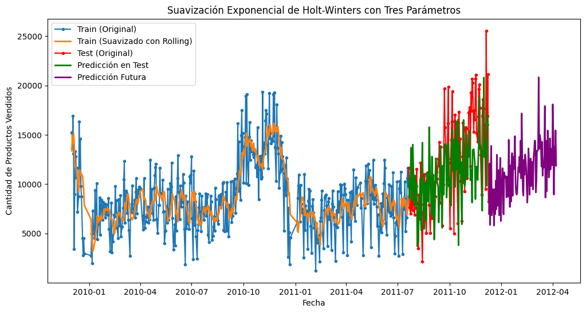
La gráfica muestra la suavización exponencial de Holt-Winters con tres parámetros, incorporando nivel, tendencia y estacionalidad aditiva, junto con un suavizado previo mediante rolling mean. La serie de entrenamiento (azul) ha sido ajustada de manera efectiva (naranja), logrando capturar la tendencia y la estacionalidad presente en los datos. La predicción en el conjunto de prueba (verde) sigue más de cerca las fluctuaciones observadas en los datos originales (rojo), lo que sugiere que el modelo ha logrado incorporar patrones estacionales. Finalmente, la predicción futura (púrpura) mantiene una estructura coherente con la variabilidad observada, reflejando la incertidumbre y los ciclos estacionales proyectados en el tiempo.
from sklearn.metrics import mean_absolute_error, mean_squared_error
from statsmodels.stats.diagnostic import acorr_ljungbox
import numpy as np
# Calcular métricas de error
mae = mean_absolute_error(test['Quantity'], test_predictions)
mse = mean_squared_error(test['Quantity'], test_predictions)
rmse = np.sqrt(mse)
# Evitar NaN en el cálculo del MAPE si hay valores de Quantity cercanos a 0
mape = np.mean(np.abs((test['Quantity'] - test_predictions) / (test['Quantity'].replace(0, np.nan)))) * 100
# Prueba de Ljung-Box para evaluar autocorrelación en los residuos
residuos = test['Quantity'] - test_predictions
# Verificar número de valores en residuos
num_residuos = residuos.dropna().shape[0]
print("Número de valores en residuos:", num_residuos)
# Ajustar el número de lags para Ljung-Box
lags_max = min(10, num_residuos - 1) # Evita valores negativos
if lags_max > 0:
ljung_box_pvalores = acorr_ljungbox(residuos.dropna(), lags=[lags_max], return_df=True)["lb_pvalue"].values[0]
else:
ljung_box_pvalores = np.nan # No se puede calcular
# Mostrar resultados
print(f"📌 MÉTRICAS DEL MODELO DE SUAVIZACIÓN EXPONENCIAL DE HOLT-WINTERS:")
print(f"➡️ MAE (Error Absoluto Medio): {mae:.4f}")
print(f"➡️ MSE (Error Cuadrático Medio): {mse:.4f}")
print(f"➡️ RMSE (Raíz del Error Cuadrático Medio): {rmse:.4f}")
print(f"➡️ MAPE (Error Porcentual Absoluto Medio): {mape:.2f}%")
print(f"➡️ p-valor de la Prueba de Ljung-Box: {ljung_box_pvalores}")
# Interpretación de Ljung-Box
if not np.isnan(ljung_box_pvalores) and ljung_box_pvalores < 0.05:
print("⚠️ Los residuos presentan autocorrelación significativa (p < 0.05).")
elif not np.isnan(ljung_box_pvalores):
print("✅ No se detecta autocorrelación significativa en los residuos (p >= 0.05).")
else:
print("⚠️ No se pudo calcular la prueba de Ljung-Box por falta de datos suficientes.")
Número de valores en residuos: 121
📌 MÉTRICAS DEL MODELO DE SUAVIZACIÓN EXPONENCIAL DE HOLT-WINTERS:
➡️ MAE (Error Absoluto Medio): 5233.3627
➡️ MSE (Error Cuadrático Medio): 39151017.4504
➡️ RMSE (Raíz del Error Cuadrático Medio): 6257.0774
➡️ MAPE (Error Porcentual Absoluto Medio): 43.62%
➡️ p-valor de la Prueba de Ljung-Box: 6.533002362731065e-14
⚠️ Los residuos presentan autocorrelación significativa (p < 0.05).
import matplotlib.pyplot as plt
import seaborn as sns
import numpy as np
import pandas as pd
from statsmodels.graphics.tsaplots import plot_acf
from statsmodels.stats.diagnostic import acorr_ljungbox
# 📌 Asegurar que las dimensiones coincidan
test_trimmed = test.iloc[:len(test_predictions_holt)].copy() # Recortar test para coincidir con predicciones
residuos_holt_winters = test_trimmed['Quantity'].values - test_predictions_holt[:len(test_trimmed)]
# 📌 Configurar el tamaño del gráfico con 4 subgráficos
fig, axes = plt.subplots(2, 2, figsize=(14, 10))
# 📌 1. Gráfico de Residuos
axes[0, 0].plot(test_trimmed.index, residuos_holt_winters, marker='o', linestyle='-', color='blue', label="Residuos")
axes[0, 0].axhline(y=0, color='red', linestyle='dashed', linewidth=1.5)
axes[0, 0].set_title("Gráfico de Residuos")
axes[0, 0].set_xlabel("Fecha")
axes[0, 0].set_ylabel("Residuos")
axes[0, 0].legend()
# 📌 2. Función de Autocorrelación (ACF)
plot_acf(residuos_holt_winters, lags=30, ax=axes[0, 1])
axes[0, 1].set_title("Función de Autocorrelación (ACF)")
# 📌 3. Histograma de los Residuos con KDE
sns.histplot(residuos_holt_winters, bins=30, kde=True, ax=axes[1, 0], color='blue')
axes[1, 0].axvline(x=0, color='red', linestyle='dashed', linewidth=1.5)
axes[1, 0].set_title("Histograma de los Residuos")
axes[1, 0].set_xlabel("Valor del Residuo")
axes[1, 0].set_ylabel("Frecuencia")
# 📌 4. Gráfico de Dispersión: Predicciones vs Residuos
axes[1, 1].scatter(test_predictions_holt[:len(residuos_holt_winters)], residuos_holt_winters, color='blue', alpha=0.7)
axes[1, 1].axhline(y=0, color='red', linestyle='dashed', linewidth=1.5)
axes[1, 1].set_title("Gráfico de Dispersión: Predicciones vs Residuos")
axes[1, 1].set_xlabel("Predicciones")
axes[1, 1].set_ylabel("Residuos")
# 📌 Ajustar diseño y mostrar
plt.tight_layout()
plt.show()
# 📌 Prueba de Ljung-Box
ljung_box_result = acorr_ljungbox(residuos_holt_winters, lags=[10], return_df=True)
ljung_box_pvalor = ljung_box_result["lb_pvalue"].values[0]
# 📌 Interpretación de la prueba de Ljung-Box
if ljung_box_pvalor < 0.05:
resultado_ljung_box = f"⚠️ Los residuos presentan autocorrelación significativa (p = {ljung_box_pvalor:.4f})"
else:
resultado_ljung_box = f"✅ No se detecta autocorrelación significativa en los residuos (p = {ljung_box_pvalor:.4f})"
resultado_ljung_box
c:\Users\ronal\miniconda3\envs\series_de_tiempo\lib\site-packages\seaborn\_oldcore.py:1119: FutureWarning: use_inf_as_na option is deprecated and will be removed in a future version. Convert inf values to NaN before operating instead.
with pd.option_context('mode.use_inf_as_na', True):
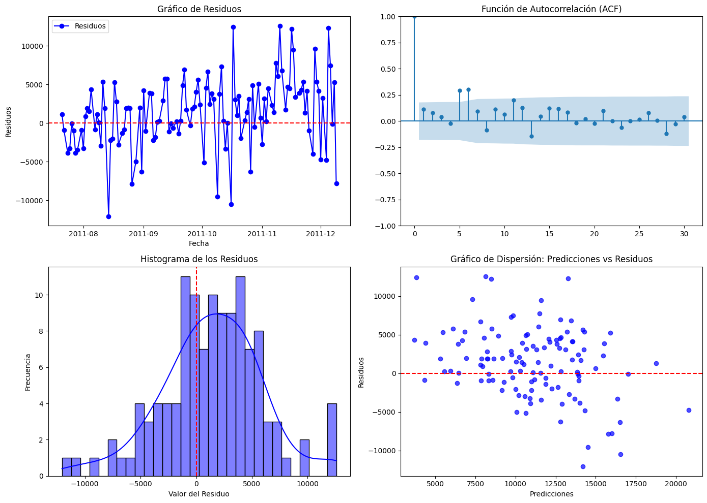
'⚠️ Los residuos presentan autocorrelación significativa (p = 0.0008)'
10. Resumen y recomendaciones#
En el análisis realizado, identificamos varios patrones clave en la serie temporal de ventas. Se detectó una clara tendencia no estacionaria, la cual fue confirmada mediante pruebas estadísticas como la ADF y la KPSS. Esta tendencia se estabilizó mediante la diferenciación, resultando en una serie estacionaria adecuada para modelización. Además, se observó estacionalidad en la frecuencia semanal y mensual, reflejada en los análisis de la Transformada de Fourier y el espectro de potencia. También se identificaron anomalías significativas, algunas de las cuales se asociaron a picos de ventas en fechas específicas, probablemente vinculadas a eventos comerciales o estacionales.
Como próximos pasos, proponemos aplicar diferentes modelos de serie de tiempo como ARIMA o SARIMA, que son adecuados para series estacionarias. Para manejar los valores atípicos, debemos evaluar su impacto en el modelo: si afectan negativamente, podrían ser suavizados mediante técnicas como medianas móviles o incluso eliminados si representan errores de registro. En cuanto a la no estacionariedad detectada inicialmente, la diferenciación ha sido efectiva, pero se pueden explorar transformaciones adicionales, como la logarítmica, para estabilizar aún más la varianza si es necesario. Por último, es recomendable contextualizar continuamente los picos de ventas con eventos externos para mejorar la precisión de las predicciones y ajustar estrategias comerciales.